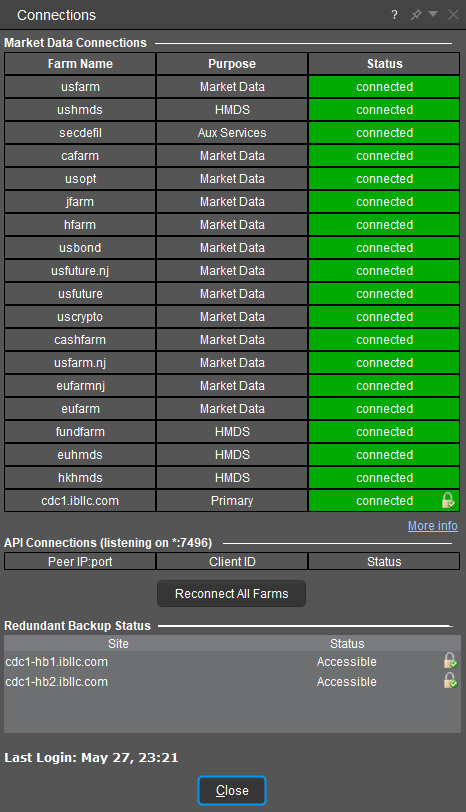

Introduction
The TWS API is a TCP Socket Protocol API based on connectivity to the Trader Workstation or IB Gateway. The API acts as an interface to retrieve and send data autonomously to Interactive Brokers. Interactive Brokers provides code systems in Python, Java, C++, C#, and VisualBasic.
The TWS API is a message protocol as its core, and any library that implements the TWS API, whether created by IB or someone else, is a tool to send and receive these messages over a TCP socket connection with the IB host platform (TWS or IB Gateway). As such the system can be tweaked and modified into any language of interest given the intention to translate the underlying decoder.
In short, a library written in any other languages must be sending and receiving the same data in the same format as any other conformant TWS API library, so users can look at the documentation for our libraries to see what a given request or response consists of (what it must include, in what form, etc.) and implement them in their own structure.
Our TWS API components are aimed at experienced professional developers willing to enhance the current TWS functionality. Before you use TWS API, please make sure you fully understand the concepts of OOP (https://www.geeksforgeeks.org/introduction-of-object-oriented-programming/) and other Computer Science Concepts. Regrettably, Interactive Brokers cannot offer any programming consulting. Before contacting our API support, please always refer to our available documentation, sample applications and Recorded Webinars
This guide references the Java, VB, C#, C++ and Python Testbed sample projects to demonstrate the TWS API functionality. Code snippets are extracted from these projects and we suggest all those users new to the TWS API to get familiar with them in order to quickly understand the fundamentals of our programming interface. The Testbed sample projects can be found within the samples folder of the TWS API’s installation directory.
Notes & Limitations
While Interactive Brokers does maintain a Python, Java, C#, and C++ offering for the TWS API, C# and our Excel offerings are exclusively available for Windows PC. As a result, these features are not available on Linux or Mac OS.
Requirements
- A funded and opened IBKR Pro account
- The current Stable or Latest release of the TWS or IB Gateway
- The current Stable or Latest release of the TWS API
- A working knowledge of the programming language our Testbed sample projects are developed in.
The minimum supported language version is documented on the right for each of our supported languages.
Please be sure to toggle the indicated language to the language of your choosing.
Limitations
Our programming interface is designed to automate some of the operations a user normally performs manually within the TWS Software such as placing orders, monitoring your account balance and positions, viewing an instrument’s live data… etc. There is no logic within the API other than to ensure the integrity of the exchanged messages. Most validations and checks occur in the backend of TWS and our servers. Because of this it is highly convenient to familiarize with the TWS itself, in order to gain a better understanding on how our platform works. Before spending precious development time troubleshooting on the API side, it is recommended to first experiment with the TWS directly.
Remember: If a certain feature or operation is not available in the TWS, it will not be available on the API side either!
C# for MacOS
The TWS API C# source files are not available through the Mac and Unix distribution download as the language is built around Dynamic Link Library (DLL) files for execution. This is because DLL files are exclusively supported through Windows platforms.
C++ DLLs and Static Linking
Following the TWS API’s recent migration to Protobuf, clients developing in C++ should prioritize static linking over the use of DLLs.
This recommendation is based on the Google Protobuf documentation. For more information on the reasoning behind it, or questions on enabling DLLs for use with Protobuf, please see DLLs vs static linking.
Canadian Residents Restricted From Programmatically Trading Canadian Products
Interactive Brokers Canada Inc. (IBC) does not allow users to use your own trading application to electronically submit order for products traded on a Canadian exchange or other marketplace through API, which would include Third Party Integrations. This decision was made through multiple and extensive communications between IBC compliance and personnel and senior management of the Canadian Investment Regulatory Organization (CIRO), formerly the Investment Industry Regulatory Organization of Canada (IIROC), our self-regulatory organization.
CIRO has implemented IIROC Dealer Member Rule (DMR) 3200 A. 1. (b) (i) which prohibits CIRO registrants, including IBC, from allowing its clients to use their own automated order systems to generated orders.
Unfortunately, these restrictions would be also applicable with third-party applications like TradingView, NinjaTrader, or other such groups as they use an API connection.
Paper Trading
If your regular trading account has been approved and funded, you can use your Account Management page to open a Paper Trading Account which lets you use the full range of trading facilities in a simulated environment using real market conditions. Using a Paper Trading Account will allow you not only to get familiar with the TWS API but also to test your trading strategies without risking your capital.
Please be aware that the Paper Trading Environment relies on more simulated technologies than the Live trading environment. As a result, certain behavior such as order execution may vary
Note the paper trading environment has inherent limitations.
Download TWS or IB Gateway
In order to use the TWS API, all customers must install either Trader Workstation or IB Gateway to connect the API to. Both downloads maintain the same level of usage and support; however, they both have equal benefits. For example, IB Gateway will be less resource intensive as there is no UI; however, the Trader Workstation has access all of the same information as the API, if users would like an interface to confirm data.
TWS Online or Offline Version?
It is recommended for API users to use offline TWS because TWS online version has automatic update. Please use same TWS version to make sure the TWS version and TWS API version are synced. These will help preventing version conflict issue.

TWS Settings
Some TWS Settings affect API.
TWS Configuration For API Use
The settings required to use the TWS API with the Trader Workstation are managed in the Global Configuration under “API” -> “Settings”
In this section, only the most important API settings for API connection are covered.
Please:
- Enable “ActiveX and Socket Clients”
- Disable “Read-Only API”
- Verify the “Socket Port” value

Best Practice: Configure TWS / IB Gateway
The information listed below are not required or necessary in order to operate the TWS API. However, these steps include many references which can help improve the day to day usage of the TWS API that is not explicitly offered as a callable method within the API itself.
"Never Lock Trader Workstation" Setting
Note: For IBHK API users, it is commended to use IB Gateway instead of TWS. It is because all IBHK users cannot choose “Never Lock Trader Workstation” in TWS – Global Configuration – Lock and Exit. If there is inactivity, TWS will be locked and there will be API disconnection.
Memory Allocation
In TWS/ IB Gateway – “Global Configuration” – “General”, you can adjust the Memory Allocation (in MB)*.
This feature is to control how much memory your computer can assign to the TWS/ IB Gateway application. Usually, higher value allows users to have faster data returning speed.
Normally, it is recommended for API users to set 4000. However, it depends on your computer memory size because setting too high may cause High Memory Usage and application not responding.

For details, please visit: https://www.ibkrguides.com/traderworkstation/increase-tws-memory-size.htm
Note:
- In IB Gateway Global Configuration – API – settings, there is no “Compatibility Mode: Send ISLAND for US stocks trading on NASDAQ”. Specifying NASDAQ exchange in contract details may cause error if connecting to IB Gateway. For this error, please specify ISLAND exchange.
Daily & Weekly Reauthentication
Daily Reauthentication
In TWS/ IB Gateway – “Global Configuration” – “Lock and Exit”, you can choose the time of your TWS being shut down.
For API users, it is recommended to choose “Never lock Trader Workstation” and “Auto restart”.

Note:
- IBHK users do not have “Never lock Trader Workstation” and “Auto restart” in TWS. It is suggested for IBHK users to use IB Gateway in order to have stable API connection because IB Gateway won’t be locked due to inactivity. Also, IBHK users can choose “Auto restart” in IB Gateway.
Weekly Reauthentication
The weekly authentication cycle starts on every Monday. If you receive
Login failed = Soft token=0 received instead of expected permanent
for zdc1.ibllc.com:4001 (SSL), this means you need to manually login again to complete the
weekly reauthentication task.
Order Precautions
In TWS – “Global Configuration” – “API” – “Precautions”, you can enable the following items to stop receiving the order submission messages.
- Enable “Bypass Order Precautions for API orders”.
- Enable “Bypass Bond warning for API orders”.
- Enable “Bypass negative yield to worst confirmation for API orders”.
- Enable “Bypass Called Bond warning for API orders”.
- Enable “Bypass “same action pair trade” warning for API orders”.
- Enable “Bypass price-based volatility risk warning for API orders”.
- Enable “Bypass US Stocks market data in shares warning for API orders”.
- Enable “Bypass Redirect Order warning for Stock API orders”.
- Enable “Bypass No Overfill Protection precaution for destinations where implied natively”.

Connected IB Server Location in TWS
Each IB account has a pre-decided IB server. You can visit this link to know our IB servers’ locations: https://www.interactivebrokers.com/download/IB-Host-and-Ports.pdf
Yet, all IB paper accounts are connected to US server by default and its location cannot be changed.
As IB servers in different regions have different scheduled server maintenance time ( https://www.interactivebrokers.com/en/software/systemStatus.php ), you may need to change the IB server location in order to avoid service downtime.
For checking your connected IB server location, you can go to TWS and click “Data” to see your Primary server. In the below image, the pre-decided IB server location is: cdc1.ibllc.com

If you want to change your live IB account server location in TWS, please submit a web ticket to “Technical Assistance” – “Connectivity” in order to request changing the IB server location.
In the web ticket, you need to provide:
- Which account do you want to have IB server location change?
-
Which IB server location would you like to connect to?
- TWS AMERICA – EAST (New York)
- TWS AMERICA – CENTRAL (Chicago)
- TWS Europe (Zurich)
- TWS Asia (Hong Kong)
- TWS Asia – CHINA (For mainland China users, if the account server is hosted in Hong Kong, they will automatically connect with the Shenzhen Gateway mcgw1.ibllc.com.cn)
-
Which IB scheduled maintenance time do you choose? (Recommended to
choose the default schedule maintenance time of its own IB server
location)
- North America
- Europe
- Asia
After you submit the ticket, you will receive a web ticket reply which require you to confirm and understand the migration request.
Note:
- For Internet users, as the connection between IB server and Exchange goes through a dedicated line, it is commonly recommended to choose a IB server location which is closer to your TWS location. For IB connection types, please visit: https://www.interactivebrokers.co.uk/en/software/connectionInterface.php
-
The pre-decided IB server location connected from TWS is different
from the IB Server location connected from IB Client Portal and IBKR
Mobile.
- IB server location connected from TWS is pre-decided. You can submit a web ticket to request the IB server relocation for the TWS connection.
- IB server location connected from Client Portal or IBKR Mobile is based on your nearest IB server location. You cannot request the IB server relocation for Client Portal and IBKR Mobile connections. OAuth CP API users now cannot specify which server they want to connect to by themselves.
SMART Algorithm
In TWS Global Configuration – Orders – Smart Routing, you can set your SMART order routing algorithm. For available SMART Routing via TWS API, please visit: https://www.interactivebrokers.com/campus/ibkr-api-page/contracts/#smart-routing

Allocation Setup (For Financial Advisors)
In TWS Global Configuration – Advisor Setup – Presets, you can need to choose Allocation Preference in order to avoid wrong allocation result.

Intelligent Order Resubmission
The TWS Setting listed in the Global Configuration under API -> Setting for Maintain and resubmit orders when connection is restored, is enabled by default in TWS 10.28 and above. When this setting is checked, all orders received while connectivity is lost will be saved and automatically resubmitted when connectivity is restored. Please note, if the Trader Workstation is closed during this time, the orders are deleted regardless of the setting.
Beginning with Trader Workstation and IB Gateway 10.40, the Global Configuration -> API -> Settings will provide a new setting for “Maintain and resubmit orders when connection is restored.” This setting will automatically maintain or submit any orders on the platform after a network disconnect or the auto-restart behavior.
Disconnect on Invalid Format
The TWS Setting listed in the Global Configuration under API -> Setting for Maintain connection upon receiving incorrectly formatted fields, is enabled by default in TWS 10.28 and above. For clients operating on Client Version 100 and above, users will not disconnect from fields with invalid value submissions when the setting is enabled.
Download the TWS API
It is recommended for API users to use same TWS API version to make sure the TWS version and TWS API version are synced in order to prevent version conflict issue.
Running the Windows version of the API installer creates a directory “C:\\TWS API\” for the API source code in addition to automatically copying two files into the Windows directory for the DDE and C++ APIs. It is important that the API installs to the C: drive, as otherwise API applications may not be able to find the associated files. The Windows installer also copies compiled dynamic linked libraries (DLL) of the ActiveX control TWSLib.dll, C# API CSharpAPI.dll, and C++ API TwsSocketClient.dll. Starting in API version 973.07, running the API installer is designed to install an ActiveX control TWSLib.dll, and TwsRtdServer control TwsRTDServer.dll which are compatible with both 32 and 64 bit applications.
It is important to know that the TWS API is only available through the interactivebrokers.github.io MSI or ZIP file. Any other resource, including pip, NuGet, or any other online repository is not hosted, endorsed, supported, or connected to Interactive Brokers. As such, updates to the installation should always be downloaded from the github directly.
Install the TWS API on Windows
Windows:
- Download the IB API for Windows to your local machine
- This will direct you to Interactive Brokers API License Agreement, please review it
- Once you have clicked “I Agree“, refer to the Windows section to download the API Software version of your preference
-

- This will download TWS API folder to your computer
- Go to your IDE and Open Terminal
-
Navigate to the directory where the installer has been downloaded (normally it should be your C: drive or D: drive) and confirm the file is present. Now, let’s take an example: install TWS API Python
$ cd ~/TWS API/source/pythonclient
$ python3 setup.py install

Install the TWS API on MacOs / Linux
Unix/ Linux:
- Download the IB API for Mac/Unix zip file to your local machine
- This will direct you to Interactive Brokers API License Agreement, please review it
-
Once you have clicked “I Agree“, refer to the Mac / Unix section to
download the API Software version of your preference

-
This will download twsapi_macunix.<Major Version>.<Minor
Version>.zip to your computer
(where <Major Version> and <Minor Version> are the major and minor version numbers respectively) - Open Terminal (Ctrl+Alt+T on most distributions)
-
Navigate to the directory where the installer has been downloaded (normally it should be the Download folder within your home folder) and confirm the file is present
$ cd ~/Downloads
$ ls
-
Unzip the contents the installer into your home folder with the
following command (if prompted, enter your password):
NOTE: replace the values ‘n.m’ with the name of your installed file.
$ sudo unzip twsapi_macunix.n.m.zip -d $HOME/

-
To access the sample and source files, navigate to
the IBJts directory and confirm the
subfolders samples and source are present
$ cd ~/IBJts
$ ls
Note:
- When running “python3 setup.py install“, you may get “ModuleNotFoundError: No Module named ‘setuptools’“. As “setuptools” is deprecated, please grant the write permission on the target folder (e.g. source/pythonclient) using “sudo chmod -R 777” in order to avoid “error: could not create ‘ibapi.egg-info’: Permission denied“. After that, run “python3 -m pip install .“
MacOS:
- Download the IB API for Mac/Unix zip file to your local machine
- This will direct you to Interactive Brokers API License Agreement, please review it
-
Once you have clicked “I Agree“, refer to the Mac / Unix section to
download the API Software version of your preference
-
This will download twsapi_macunix.<Major Version>.<Minor
Version>.zip to your computer
(where <Major Version> and <Minor Version> are the major and minor version numbers respectively) - Open MacOS Terminal (Command+Space to launch Spotlight, then type terminal and press Return)
-
Go to find the zipped TWS API file and Copy the zipped TWS API file path.
-
Run the following command in MacOS Terminal.
- $ unzip twsapi_macunix.<Major Version>.<Minor Version>.zip
Note: On MacOS, if you directly open the twsapi_macunix.<Major Version>.<Minor Version>.zip file, you will get an error: “Unable to expand…… It is an unsupported format“. It is required for users to unzip the zipped TWS API file using the above MacOS Terminal command.
TWS API File Location & Tools
TWS API Folder Files Explanation:
- “API_VersionNum.txt”
File Path: ~\TWS API\API_VersionNum.txt
You can check your API version in this file.
- “IBSampleApp.exe”
File Path: ~\TWS API\samples\CSharp\IBSampleApp\bin\Release\IBSampleApp.exe
You can manually use the IBSampleApp to test the API functions.
- “ApiDemo.jar”
File Path: ~\TWS API\samples\Java\ApiDemo.jar
This is built with Java. Java users can use it to quickly test the IB TWS API functions.
TWSAPI Basics Tutorial
Many of our most common features, as well as instructions for installing and running the Trader Workstation API, are available in our TWS API Tutorial Series. The series uses Python to implement the TWS API functionality; however, the function calls are identical across languages, and will follow a similar patter regardless of language.
This tutorial covers:
- Downloading and running the Trader Workstation and IB Gateway
- How to install the TWS API and update the Python Interpreter
- Requesting Live and Historical Market Data
- Placing and Monitoring Orders
- Reviewing Individual Account Information
- Handling Market Scanners
Third Party API Platforms
Third party software vendors make use of the TWS’ programming interface (API) to integrate their platforms with Interactive Broker’s. Thanks to the TWS API, well known platforms such as Ninja Trader or Multicharts can interact with the TWS to fetch market data, place orders and/or manage account and portfolio information.
It is important to keep in mind that most third party API platforms are not compatible with all IBKR account structures. Always check first with the software vendor before opening a specific account type or converting an IBKR account type. For instance, many third party API platforms such as NinjaTrader and TradeNavigator are not compatible with IBKR linked account structures, so it is highly recommended to first check with the third party vendor before linking your IBKR accounts.
An ongoing list of common Third Party Connections are available within our documentation. This resource will also link out to connection guides detailing how a user can connect with a given platform.
A non-exhaustive list of third party platforms implementing our interface can be found in our Investor’s Marketplace. As stated in the marketplace, the vendors’ list is in no way a recommendation from Interactive Brokers. If you are interested in a given platform that is not listed, please contact the platform’s vendor directly for further information.
Non-Standard TWS API Languages and Packages
Noted in further depth through our Architecture section, the TWS API is built using standardized socket protocol. As a result, users may develop or access alternative third party modules and classes in place of Interactive Brokers default modules through the TWS API Download. While the API is adaptable for client implementations, please understand that Interactive Brokers API Support cannot provide support for non-standard implementations. While we can review your API logs to affirm what content is being submitted, any further assistance will need to take place with the module’s original developer.
This is neither an endorsement or admonishment of third party implementations. Interactive Brokers will always advise clients use our direct TWS API implementation whenever possible.
ib_insync and ib_async
While Interactive Brokers’ API Support is aware of the ib_insync package, we cannot provide coding assistance for the package.
With that in mind, users should be aware that the original ib_insync package is built using a legacy release of the TWS API and is no longer updated. Users who wish to implement the ib_insync structure using supported releases of the Trader Workstation should migrate to the ib_async package, which is a modernized implementation of the package by one of its original developers.
This is neither an endorsement or admonishment of either the ib_insync or ib_async library. Interactive Brokers will always advise clients use our direct TWS API implementation whenever possible.
Unique Configurations
While all of the available Trader Workstation API default samples provide equivalent functionality, some languages have unique configurations that must be implemented in order to use our samples or program code with the underlying API.
Implementing the Intel Decimal Library for MacOS and Linux
Due to the malleability of the many Linux distributions including MacOS, Interactive Brokers is unable to provide a pre-built binary for the library. As such, users programming in C++ on a Linux machine must manually build the Intel® Decimal Floating-Point Math Library manually.
As described in the README file from the linked page, you can find the library’s build steps within the ~/IntelRDFPMathLib20U2/LIBRARY/README file.
Updating The Python Interpreter
Python has a unique system for importing libraries into it’s IDEs. This extends even further when it comes to virtual environments. In order to utilize Python code with the TWS API, you must run our setup file in order to import the code.
1. Open Command Prompt or Terminal
In order to update the Python IDE, these steps MUST be performed through Command Prompt or Terminal. This can not be done through an explorer interface.
As such, users should begin by launching their respective command line interface.
These samples will display Windows commands, though the procedure is identical on Windows, MacOS, and Linux.
3. Run The setup.py File
python setup.py install
4. Confirm Updates
After running the prior command, users should see a large block of text describing various values being updated and added to their system. It is important to confirm that the version installed on your system mirrors the build version displayed. This example represents 10.25; however, you may have a different version.
5. Confirm your installation
python -m pip show ibapi
Protobuf UserWarning messages
After resolving the reference errors, using the TWSAPI may print a UserWarning upon connection. These warnings are predominantly cosmetic and can be ignored. These issues are caused by the Pypi release of protobuf running version 6.30.1 and above, while the TWS API is built with 5.29.3. The warning is simply notifying users that their version is 1 major version different. However, given protobuf is currently backgwards compatible, this should not present any issues with the implementation. Developers uncomfortable with the warning messages have a few options:
- Recompile Protobuf against their Github 5.29.3 version to maintain parity with the TWS API implementations.
- Users can also modify the code source, linked by the protobuf warning, and simply remove lines 94 and on from the runtime_version.py file.
Implementing Visual Basic .NET
Our VB.NET code is provided for demonstration purposes only; there is no pure, standalone VB.NET-based TWS API library. Both our “VB_API_Sample” and the VB.NET “Testbed” projects included with our TWS API releases call the C# TWS API source. The provided VB.NET code only interfaces with the C# source. Please keep in mind that these samples are in VB.NET, not Visual Basic for Applications.
Troubleshooting & Support
If there are remaining questions about available API functionality after reviewing the content of this documentation, the API Support group is available to help.
-> It is important to keep in mind that IB cannot provide programming assistance or give suggestions on how to code custom applications. The API group can review log files which contain a record of communications between API applications and TWS, and give details about what the API can provide.
General suggestions on starting out with the IB system:
- Become familiar with the analogous functionality in TWS before using the API: the TWS API is nothing but a communication channel between your client application and TWS. Each API function has a corresponding tool in TWS. For instance, the market data tick types in the API correspond to watchlist columns in TWS. Any order which can be created in the API can first be created in TWS, and it is recommended to do so. Additionally, if information is not available in TWS, it will not be available in the API. Before using IB Gateway with the API, it is recommended to first become familiar with TWS.
- Make use of the sample API applications: the sample applications distributed with the API download have examples of essentially every API function in each of the available programming languages. If an issue does not occur in the corresponding sample application, that implies there is a problem with the custom implementation.
- Upgrade TWS or IB Gateway periodically: TWS and IB Gateway often have new software releases that have enhancements, and that can sometimes have bug fixes. Because of this, we strongly recommend our users to keep their software as up to date as possible. If you are experiencing a specific problem that is occurring in TWS or IB Gateway and not in the API program, it is likely resolved in the more recent software build.
Log Files
Log files are used by developers and support to unambiguously understand the behavior of a request.
These files are stored on the clients machine and are only sent to Interactive Brokers by client request.
These logs will recycle every 7 days. This would include the current day and the prior 6 days.
API Logs
TWS and IB Gateway can be configured to create a separate log file which has a record of just communications with API applications. This log is not enabled by default; but needs to be enabled by the Global Configuration setting “Create API Message Log File”(picture below).
- API logs contain a record of exchanged messages between API applications and TWS/IB Gateway. Since only API messages are recorded, the API logs are more compact and easier to handle. However they do not contain general diagnostic information about TWS/IBG as the TWS/IBG logs. The TWS/IBG settings folder is by default C:\Jts (or IBJts on Mac/Linux). The API logs are named api.[clientId].[day].log, where [clientId] corresponds to the Id the client application used to connect to the TWS and [day] to the week day (i.e. api.123.Thu.log).
- There is also a setting “Include Market Data in API Log” that will include streaming market data values in the API log file. Historical candlestick data is always recorded in the API log.
Note: Both the API and TWS logs are encrypted locally. The API logs can be decrypted for review from the associated TWS or IB Gateway session, just like the TWS logs, as shown in the section describing the Local location of logs.
Note: The TWS/IB Gateway log file setting has to be set to
‘Detail’ level before an issue occurs so that information recorded
correctly when it manifests. However due to the high amount of
information that will be generated under this level, the resulting
logs can grow considerably in size.
Enabling creation of API logs
TWS:
- Navigate to File/Edit → Global Configuration → API → Settings
- Check the box Create API message log file
- Set Logging Level to Detail
- Click Apply and Ok
IB Gateway:
- Navigate to Configure → Settings → API → Settings
- Check the box Create API message log file
- Set Logging Level to Detail
- Click Apply and Ok
How To Enable Debug Logging
Enabling DEBUG-level logging for the host platform (TWS or IBG, this does not affect API logs):
- Navigate to the root TWS/IBG installation directory
- Find jts.ini and open in text editor
- Put debug=1 under the [Communication] section
- Reboot TWS/IBG
Setting debug=1 has added benefits in TWS.
-
Debug=1 also allows you to enter conIds into a watchlist to resolve
them into symbols. Type/paste the conId in an empty watchlist row,
add |C (vertical bar, capital C) at the end, and press Enter.
Example: 265598|C will resolve immediately to AAPL (exchange will be
SMART where available, primary otherwise).
- If the instrument is already present in the watchlist, nothing will happen.
-
Additional detail in the “Description” window for an instrument,
normally available by right-clicking on an instrument in a watchlist
and selecting Financial Instrument Info >> Description from
the context menu. Debug=1 will add the conId, min order sizes,
market rules (i.e., min price increments and thresholds), all
available order types, and all available exchanges to this
interface. Changing the behavior of TWS to bring up that Description
window on double-click can make it easier to find.
- In TWS, go to Global Configuration >> Display >> Ticker Row
- Change “Double-click on Financial Instrument will” dropdown menu to “Open Contract Details”
Location of Interactive Brokers Logs
Logs are stored in the TWS settings directory, C:\Jts\ and then your user subdirectory by default on a Windows computer (the default can be configured differently on the login screen).
The path to the log file directory can be found from a TWS or IB Gateway session by using the combination Ctrl-Alt-U. This will reveal path such as C:\Jts\detcfsvirl\ (on Windows).
Due to privacy regulations, logs are encrypted before they are saved to disk. To review them on your machine, you may need to Export Your Logs from the associated TWS or IB Gateway session.
How To Delete Logs
In some instances, your logs may be too large to export or upload for Client Services to review. In scenarios such as this, the Support team may request that you delete your existing API logs, and then replicate the error before attempting to upload them again.
To delete your logs:
- Locate your Logs.
- Exit TWS or IB Gateway session by clicking “File” and “Exit”.
- In your terminal or window explorer, navigate to your user subdirectory.
- Once in the directory, select the files labeled like “api.0.20250110.105733.ibgzenc”, “tws.20250110.105733.ibgzenc” or “ibgateway.20250110.105733.ibgzenc” and press the “Delete” key on your keyboard, or type ‘del {filename}’ into your terminal.
Uploading Logs
If API logging has been enabled with the setting “Create API Message Log” during the time when an issue occurs, it can be uploaded to the API group.
Important: Please be aware that the process of uploading logs does not notify support, nor is a ticket logged. You will need to contact our representatives through a direct call, chat, or secure message center message for our representatives to be aware of the upload.
To upload logs as a Windows user:
- In TWS or IB Gateway, press CTRL+ALT+H to bring up the Upload Diagnostics window.
-
In the “reason” text field, please type the reason for your upload.
- Alternatively, type “ATTENTION: ” and then the ticket number you are working with, or the name of your customer service representative.
- Find the small arrow in the upper right corner, click it and select “Advanced View”
- Make sure “Full internal state of the application” is checked
- Make sure “Include previous days logs and settings” is unchecked, unless the error happened on a prior day.
- Click Submit
If logs have been uploaded, please let the API Support group know by creating a webticket in the Message Center in Account Management (under Support) indicating the username of the associated TWS session. In some cases a TWS log may also be requested at the Detailed logging level. The TWS log can grow quite large and may not be uploadable by the automatic method; in this case an alternative means of upload can be found.
Exporting Logs
- In TWS, navigate to Help menu >> Troubleshooting >> Diagnostics >> “API Logs” or “TWS Logs”.
- In IBG, both “API Logs” and “Gateway Logs” are accessible directly from the File menu.
- Click “Export Today Logs…” to decrypt the logs and save them in plaintext (logs are stored encrypted on your local machine)
Reading Exported Logs
Each supported API language of the API contains a message file that translates a given number identifier into their corresponding request. The message identifier numbers used in the underlying wire protocol is the core of the TWS API.
The information on the right documents where each message reader file is located. The {TWS API} listed is the path to the primary TWS API or JTS folder created from the API installation.
By default, this will be saved directly on the C: drive.
In our API logs, the direction of the message is indicated by the arrow at the beginning:
-> for incoming messages (TWS to client)
<- for outgoing messages (client to TWS)
Thus <- 3 (outgoing request of type 3) is a placeOrder request, and the subsequent incoming requests are:
-> 5 = openOrder response
-> 11 = executionData response
-> 59 = commissionReport response
Also note that the first openOrder response carries with it an orderStatus response in the same message. If that status were to change later, it would be delivered as a standalone message:
-> 3 = orderStatus response
Unset Values
Developers may often find a super-massive value returned from requests like market data, P&L information, and elsewhere. These are known as Unset values. Unset values are used throughout programming systems to indicate that a value is not available. Unset values are used in place of NULL characters to prevent any unexpected error be thrown in your code. Unset values are also used in place of values like 0 to avoid confusing viewers to believe they have an account balance of 0, or that an equity is worth $0.
An unset value is the maximum value of a given data type. So the Unset Double value will appear like 1.7976931348623157E308, which contains approximately 308 digits to intentionally appear extraneous.
Architecture
The TWS API is a BSD implementation that communicates request and response values across TCP socket using a end-line-delimited message protocol. While the underlying structure of the message will vary by request, requests typically follow a patter of indicating a message identifier, request identifier, and then directly relevant content for the request such as contract details or market data parameters.
The provided TWS API package use two distinct classes to accommodate the request / response functionality of the socket protocol, EClient and EWrapper respectively.
The EWrapper class is used to receive all messages from the host and distribute them amongst the affiliated response functions. The EReader class will retrieve the messages from the socket connection and decode them for distribution by the EWrapper class.
EClient or EClientSocket is used to send requests to the Trader Workstation. This client class contains all the available methods to communicate with the host. Up to 32 clients can be connected to a single instance of the host Trader Workstation or IB Gateway simultaneously.
The primary distinction in EClient and EClientSocket is the involvement of the EReader Class to trigger when requests should be processed. EClient is unique to the Python implementation and utilizes the Python Queue module in place of the EReaderSignal directly. Both the EReaderSignal and Python Queue module handle the queueing process for submitting messages across the socket connection. In either scenario, the EWrapper class must be implemented first to acknowledge the EClient requests.
The Trader Workstation
Our market maker-designed IBKR Trader Workstation (TWS) lets traders, investors, and institutions trade stocks, options, futures, forex, bonds, and funds on over 100 markets worldwide from a single account. The TWS API is a programming interface to TWS, and as such, for an application to connect to the API there must first be a running instance of TWS or IB Gateway.
The IB Gateway
As an alternative to TWS for API users, IBKR also offers IB Gateway (IBGW). From the perspective of an API application, IB Gateway and TWS are identical; both represent a server to which an API client application can open a socket connection after the user has authenticated. With either application (TWS or IBGW), the user must manually enter their username and password into a login window. For security reasons, a headless session of TWS or IBGW without a GUI is not supported. From the user’s perspective, IB Gateway may be advantageous because it is a lighter application which consumes about 40% fewer resources.
Both TWS and IBGW were designed to be restarted daily. This is necessary to perform functions such as re-downloading contract definitions in cases where contracts have been changed or new contracts have been added. Beginning in version 974+ both applications offer an autorestart feature that allows the application to restart daily without user intervention. With this option enabled, TWS or IBGW can potentially run from Sunday to Sunday without re-authenticating. After the nightly server reset on Saturday night it will be necessary to again enter security credentials.
The advantages of TWS over IBGW is that it provides the end user with many tools (Risk Navigator, OptionTrader, BookTrader, etc) and a graphical user interface which can be used to monitor an account or place orders. For beginning API users, it is recommended to first become acquainted with TWS before using IBGW.
For simplicity, this guide will mostly refer to the TWS although the reader should understand that for the TWS API’s purposes, TWS and IB Gateway are synonymous.
Pacing Limitations
Pacing Limitations with regards to the TWS API are based on the number of requests submitted by a client connection. A “request” is a user-submitted query to retrieve some form of data.
An example of a request is a query to retrieve live watchlist data. While you may make a single request for market data, you will receive market data until the subscription is cancelled or your session is disconnected. Only the original request to begin the flow of data will contribute to the pacing limitation.
The maximum number of API requests that can be submitted are equivalent to your Maximum Market Data Lines divided by 2, per second.
By default, all users maintain 100 market data lines. Therefore, users have a pacing limitation of (100/2)= 50 requests per second.
Clients that have increased their market data lines to 200, by way of commission or Quote Booster Subscription, would receive (200/2)= 100 requests per second, and this would increment as your market data lines increase or decrease.
In some use cases, if you plan to send more than 50 requests per second, some orders may be queued and delayed. For this scenario, please consider switching to FIX API.
For FIX API users in IB Gateway, the limitation is 250 messages per second.
For FIX API users without using IB Gateway or TWS, there is no limitation on messages per second, but less is better.
Pacing Behavior
The TWS API supports two formats for users who break the pacing limitations. This behavior is set in the Global Configuration of Trader Workstation or IB Gateway. Under “API” and then “Settings” users will see a setting for “Reject messages above maximum allowed message rate vs applying pacing.”
- If the setting is checked, TWS will notify the user they surpassed the pacing limit using error code 100. If the pacing limits are broken 3 times, the API session will terminate and the user will receive WinError 10053 on Windows or a BrokenPipe error on MacOS or Linux machines.
- If the setting is unchecked, TWS will automatically pace the requests submitted by the user. The system will wait to acknowledge requests in the EReader Thread prior to moving on to new requests.
Connectivity
A socket connection between the API client application and TWS is established with the IBApi.EClientSocket.eConnect function. TWS acts as a server to receive requests from the API application (the client) and responds by taking appropriate actions. The first step is for the API client to initiate a connection to TWS on a socket port where TWS is already listening. It is possible to have multiple TWS instances running on the same computer if each is configured with a different API socket port number. Also, each TWS session can receive up to 32 different client applications simultaneously. The client ID field specified in the API connection is used to distinguish different API clients.
Establishing an API connection
Once our two main objects have been created, EWrapper and ESocketClient, the client application can connect via the IBApi.EClientSocket object:
eConnect starts by requesting from the operating system that a TCP socket be opened to the specified IP address and socket port. If the socket cannot be opened, the operating system (not TWS) returns an error which is received by the API client as error code 502 to IBApi.EWrapper.error (Note: since this error is not generated by TWS it is not captured in TWS log files). Most commonly error 502 will indicate that TWS is not running with the API enabled, or it is listening for connections on a different socket port. If connecting across a network, the error can also occur if there is a firewall or antivirus program blocking connections, or if the router’s IP address is not listed in the “Trusted IPs” in TWS.
After the socket has been opened, there must be an initial handshake in which information is exchanged about the supported version of the TWS and API to ensure each platform can interpret received messages correctly.
- For this reason it is important that the main EReader object is not created until after a connection has been established. The initial connection results in a negotiated common version between TWS and the API client which will be needed by the EReader thread in interpreting subsequent messages.
After the highest version number which can be used for communication is established, TWS will return certain pieces of data that correspond specifically to the logged-in TWS user’s session. This includes (1) the account number(s) accessible in this TWS session, (2) the next valid order identifier (ID), and (3) the time of connection. In the most common mode of operation the EClient.AsyncEConnect field is set to false and the initial handshake is taken to completion immediately after the socket connection is established. TWS will then immediately provides the API client with this information.
- Important: The IBApi.EWrapper.nextValidID callback is commonly used to indicate that the connection is completed and other messages can be sent from the API client to TWS. There is the possibility that function calls made prior to this time could be dropped by TWS.
There is an alternative, deprecated mode of connection used in special cases in which the variable AsyncEconnect is set to true, and the call to startAPI is only called from the connectAck() function. All IB samples use the mode AsyncEconnect = False.
The ConnectAck function is called automatically once a connection has been established with the Trader Workstation or IB Gateway.
Verify API Connection
A user can verify whether their API session is connected at any point with the EClient.isConnected() function.
eConnect starts by requesting from the operating system that a TCP socket be opened to the specified IP address and socket port. If the socket cannot be opened, the operating system (not TWS) returns an error which is received by the API client as error code 502 to IBApi.EWrapper.error (Note: since this error is not generated by TWS it is not captured in TWS log files). Most commonly error 502 will indicate that TWS is not running with the API enabled, or it is listening for connections on a different socket port. If connecting across a network, the error can also occur if there is a firewall or antivirus program blocking connections, or if the router’s IP address is not listed in the “Trusted IPs” in TWS.
After the socket has been opened, there must be an initial handshake in which information is exchanged about the supported version of the TWS and API to ensure each platform can interpret received messages correctly.
- For this reason it is important that the main EReader object is not created until after a connection has been established. The initial connection results in a negotiated common version between TWS and the API client which will be needed by the EReader thread in interpreting subsequent messages.
After the highest version number which can be used for communication is established, TWS will return certain pieces of data that correspond specifically to the logged-in TWS user’s session. This includes (1) the account number(s) accessible in this TWS session, (2) the next valid order identifier (ID), and (3) the time of connection. In the most common mode of operation the EClient.AsyncEConnect field is set to false and the initial handshake is taken to completion immediately after the socket connection is established. TWS will then immediately provides the API client with this information.
- Important: The IBApi.EWrapper.nextValidID callback is commonly used to indicate that the connection is completed and other messages can be sent from the API client to TWS. There is the possibility that function calls made prior to this time could be dropped by TWS.
There is an alternative, deprecated mode of connection used in special cases in which the variable AsyncEconnect is set to true, and the call to startAPI is only called from the connectAck() function. All IB samples use the mode AsyncEconnect = False.
The EReader Thread
API programs always have at least two threads of execution. One thread is used for sending messages to TWS, and another thread is used for reading returned messages. The second thread uses the API EReader class to read from the socket and add messages to a queue. Everytime a new message is added to the message queue, a notification flag is triggered to let other threads know that there is a message waiting to be processed. In the two-thread design of an API program, the message queue is also processed by the first thread. In a three-thread design, an additional thread is created to perform this task. The thread responsible for the message queue will decode messages and invoke the appropriate functions in EWrapper. The two-threaded design is used in the IB Python sample Program.py and the C++ sample TestCppClient, while the ‘Testbed’ samples in the other languages use a three-threaded design. Commonly in a Python asynchronous network application, the asyncio module will be used to create a more sequential looking code design.
The class which has functionality for reading and parsing raw messages from TWS is the IBApi.EReader class.
C++, C#, and Java Implementations
For C#, Java, C++, and Visual Basic, we instead maintain a triple thread structure which requires the creation of a reader thread, a queue thread, and then a wrapper thread. The documentation listed here further elaborates on the structure for those languages.
Now it is time to revisit the role of IBApi.EReaderSignal initially introduced in The EClientSocket Class. As mentioned in the previous paragraph, after the EReader thread places a message in the queue, a notification is issued to make known that a message is ready for processing. In the (C++, C#/.NET, Java) APIs, this is done via the IBApi.EReaderSignal object we initiated within the IBApi.EWrapper’s implementer.
Python Implementation
In Python IB API, the EReader logic is handled in the EClient.connect so the EReader thread is automatically started upon connection. There is no need for user to start the reader.
Once the client is connected, a reader thread will be automatically created to handle incoming messages and put the messages into a message queue for further process. User is required to trigger Client::run() below, where the message queue is processed in an infinite loop and the EWrapper call-back functions are automatically triggered.
Now it is time to revisit the role of IBApi.EReaderSignal initially introduced in The EClientSocket Class. As mentioned in the previous paragraph, after the EReader thread places a message in the queue, a notification is issued to make known that a message is ready for processing. In the Python API, this is handled automatically by the Queue class.
Remote TWS API Connections with Trader Workstation
If you want to connect TWS/ IB Gateway from a remote server, uncheck the “Allow connection from localhost only” setting. Under the “Trusted IPs” section, click “Create” and enter the IP Address detected in “Accept incoming connection attempt from <IP Address>” into “Trusted IPs”.
“Trusted IPs” does not accept subnet (e.g. /27, /28). It only accepts single IP Addresses. In the following example, there is a remote computing cluster /27 which has 32 IP Addresses and the remote computing cluster will randomly assign one of the computing nodes to connect to TWS in every connection. To make this happen, every Private IPv4 Address of the subnet are put into the “Trusted IPs” (You can also exclude the first IP Network Address and the last IP Broadcast Address of the subnet).

Accepting an API connection from TWS
For security reasons, by default the API is not configured to automatically accept connection requests from API applications. After a connection attempt, a dialogue will appear in TWS asking the user to manually confirm that a connection can be made:
Untrusted IPs attempting to make a connection will be denied without prompting.
To prevent the TWS from asking the end user to accept the connection, it is possible to configure it to automatically accept the connection from a trusted IP address and/or the local machine. This can easily be done via the TWS API settings:
Logging into multiple applications
It is not possible to login to multiple trading applications simultaneously with the same username. However, it is possible to create additional usernames for an account that can be used in different trading applications simultaneously, as long as there is not more than a single trading application logged in with a given username at a time. There are some additional cases in which it is also useful to create additional usernames:
- If TWS or IBGW is logged in with a username that is used to login to Client Portal during that session, that application will not be able to automatically reconnect to the server after the next disconnection (such as the server reset).
- A TWS or IBGW session logged into a paper trading account will not to receive market data if it is sharing data from a live user which is used to login to Client Portal.
Broken API socket connection
If there is a problem with the socket connection between TWS and the API client, for instance if TWS suddenly closes, this will trigger an exception in the EReader thread which is reading from the socket. This exception will also occur if an API client attempts to connect with a client ID that is already in use.
The socket EOF is handled slightly differently in different API languages. For instance in Java, it is caught and sent to the client application to IBApi::EWrapper::error with errorCode 507: “Bad Message”. In C# it is caught and sent to IBApi::EWrapper::error with errorCode -1. The client application needs to handle this error message and use it to indicate that an exception has been thrown in the socket connection.
Clients can validate a broken connection with the EWrapper.connectionClosed and EClient.isConnected functions.
Once a connection fails for any reason, the EWrapper.connectionClosed function will be called. This function can be used to build reconnection logic or affirm a system disconnect.
Synchronous API
With the release of TWS API 10.40, Interactive Brokers has introduced the Synchronous API Wrapper class. This class provides a synchronous API structure, combining the functionality of EClient and EWrapper into a beginner-friendly interface.
The current release is still in a Beta state, slowly rolling out only a portion of what is available in the larger Trader Workstation API configuration. The interface is exclusively available through the Python programming language.
The content shown here is an example of what the Sync Wrapper
structure looks like. A larger example of all current functionality is
available in the 10.40 release of the TWS API under
{TWS API}/samples/Python/Testbed/sync_test.py .
Request sample
# Import our Sync Wrapper and Contract objects
from ibapi.sync_wrapper_alt import *
from datetime import datetime
# Instantiate the reference for our sync class
app = TWSSyncWrapper(timeout=30)
# make a connection to Trader Workstation
# In this case, we're connecting on Localhost with port 7496 and Client ID 0.
if not app.connect_and_start(host="127.0.0.1", port=7496, client_id=8675309):
print("Failed to connect to TWS")
exit(1)
else:
print("Connected to TWS")
# Create a contract class reference.
# In our case, we'll be testing with AAPL.
contract = Contract()
contract.symbol = "AAPL"
contract.secType = "STK"
contract.exchange = "SMART"
contract.primaryExchange = "ISLAND"
contract.currency = "USD"
'''
Contract details requests will return all contracts the match the details
of our contract object in a list. Because a list is returned, we are
taking the first (or 0 index) contract returned.
'''
aapl_contract = app.get_contract_details(contract)[0].contract
print(aapl_contract)
market_data = app.get_market_data_snapshot(aapl_contract)
order = Order()
order.action = "BUY"
order.orderType = "LMT"
order.totalQuantity = 100
order.lmtPrice = 258
order_status = app.place_order_sync(contract, order)
oid = order_status["orderId"]
print(app.get_open_orders()[oid]['orderState'].status)
print(app.cancel_order_sync(oid, OrderCancel()))
app.disconnect_and_stop()
exit()
TWSSyncWrapper Class
The TWSSyncWrapper class is produced from the ibapi/sync_wrapper file. Clients looking to utilize the class may seek to replace their typical imports for ibapi/client and ibapi/wrapper with an import for “from ibapi.sync_wrapper import TWSSyncWrapper”.
The TWSSyncWrapper class accepts a single argument, timeout. This will provide a default timeout integer in seconds for all connected functions to work with. If no timeout is specified, a default value of 30 seconds is passed instead.
Each function supports a timeout argument for unique endpoint timeout behavior.
Connect & Start Connection
After creating the class object reference with sync wrapper, connect_and_start() must be used to connect the Python program with the active Trader Workstation implementation. Identical to EClient’s connect() function, connect_and_start() supports arguments for host, port, and client_id.
connect_and_start(
host: String. Determine the connecting host IP for the API to connect to. Connections on the same computer should use “localhost” or “127.0.0.1”.
port: Integer. Determine the connecting port number configured in the Global Configuration in the “Socket Port” field.
Defaults: {TWS Live: 7496; TWS Paper: 7497; IBG Live: 4001; IBG Paper: 4002′}
client_id: Integer. Determine the connecting client ID. TWS Supports up to 32 simultaneous API connections.
Users should connect with a client_id of 0 for optimal order management functionality.
)
Response Object
While it is not necessary to handle the response from connect_and_start(), the function will return the result of EClient.isConnected() to help with connection validation.
The function call will return a single Boolean value, True or False, in reference to the connection status at the time of reference.
Developers may look to implement code such as this that will gracefully handle the connection procedure should it fail to connect rather than proceeding with the rest of the code implementation.
Disconnect & Stop Connection
Once a connection is no longer needed, developers should disconnect the session. This will terminate all ongoing requests through the class’s client_id. Connections through any other client ID or port will be unaffected.
disconnect_and_stop()
The function call does not return after calling. As a result, None is automatically passed in the event the function is referenced.
Current Time
Whenever a user would need to verify the current time used within Trader Workstation or to verify the connection with the application, users may call the get_current_time() function.
get_current_time(
timeout: Integer. Timeout before the request disconnects. Function-specific timeout default of 1 second.
)
Response Object
get_current_time() will return the current timestamp as an integer representing an epoch timestamp.
Next Valid ID
Requests should utilize an unique identifier after each request is submitted.
The same order identifier cannot be reused except to modify an existing order.
get_next_valid_id(
timeout: Integer. Uses default timeout value passed to TWSSyncClass.
)
Response Object
Requests to the get_next_valid_id() function will return the next valid order ID, which may be used in order submission.
Account Summary
The get_account_summary() function returns all relevant account details identical to Trader Workstation’s “Account” window. Users may query to receive all available data or a narrow window based on the Account Summary Tag.
get_account_summary(
tags: String. Account summary key value to receive data for. See Account Summary Tags for details.
group: String. Indicates a Financial Advisor’s allocation group to reference account details for. Non-advisor account structures should always pass “All”.
Default value passed, “All”.
timeout: Integer. Timeout before the request disconnects. Function-specific timeout default of 5 second.
)
Total size of the request may vary depending on number of accounts held in the account, and the number of tags requested.
Response Object
{AccountId}: Dictionary. Contains all tag value pairs for the designated accountId.
{
{Tag}: Dictionary. Contains the value of the affiliated tag along with the relevant currency.
value: String. Contains the alphanumeric value affiliated with the designated tag.
currency: String. Returns the currency used to denote the value. May return an empty string if returning value does not contain a price.
}
Contract Details
Interactive Brokers trading is centered around Contract Objects. This is used when submitting requests for market data, retrieving position information, and placing orders. The Synchronous Wrapper utilizes the same Contract Object as the standard TWS API.
Passing as much known information through a Contract Details will return all contracts that match the requesting information. At a minimum, the Contract ID, or Symbol and Security Type must be passed for contract discovery.
get_contract_details(
contract: Contract Object. Contract details you are searching for.
timeout: Integer. Timeout before the request disconnects. Function-specific timeout default of 5 second.
)
Response Object
The get_contract_details() function will return a list of
Contract
objects.
Unless a relatively narrow scope is provided during the initial
contract details request, multiple contract objects may be returned
within the list. Please be aware that directly printing this
information may result in the memory address being displayed.
Live Market Data
Users may request market data using get_market_data_snapshot() to
retrieve available market data.
The request currently supports
tickPrice, tickSize, tickString, tickGeneric, tickNews, and
tickOptionCompution
data.
get_market_data_snapshot(
contract: Contract Object. Contract to retrieve market data for.
generic_tick_list: String. String containing comma-separate values to determine addition data to retrieve.
Default: Automatically sends an empty string, returning only the basic data such as Last, Bid, and Ask. See Available Tick Types for more details.
snapshot: Boolean. Determine if a single snapshot should be returned or if data should be continuously updated until the timeout threshold has been reached.
Default: Set to True, returning a snapshot of data as soon as possible.
timeout: Integer. Uses default timeout value passed to TWSSyncClass.
)
Data returned by get_market_data_snapshot() is delivered as a json dictionary object, separating data into “price” and “size” tags. Values are then returned as the affiliated tick types alongside any price or attribute data.
Response Object
{
{TickType}: Integer, Float String. The value of the tag. Can include price values (Float), Size values (Decimal), or direct information (string).
}
Historical Market Data
get_historical_data(
contract: Contract Object. Contract to retrieve market data for.
end_date_time: String. The request’s end date and
time. This should be formatted as “YYYYMMDD HH:mm:ss TMZ”. You may
also pass an empty string to indicate the current moment
Please be aware that endDateTime must be left as an empty string when
requesting continuous futures contracts or certain whatToShow values
like ADJUSTED_LAST.
duration_str: String. The total timespan the bars should cover. See Duration for details.
bar_size_setting: String. The time span covered by each bar. See Bar Sizes for details.
what_to_show: String. Determines what kind of data should be returned. See whatToShow for more details.
use_rth: Boolean. Define if data should only be returned from the regular trading session or if extended trading hours should be included.
Default: True is passed by default, only returning data from the regular trading sesions.
format_date: Integer. Determine the return structure of the date. Supports (1) to return a datetime formatting string or 2 to return a epoch Unix timestamp.
Default: Set to 1, returning a datetime string.
timeout: Integer. A default value of 30 is supplied.
)
Response Object
Requesting historical bars will return return a list containing all Bar objects for the duration. Please be aware that directly printing this information may result in the memory address being displayed.
Place Order
place_order_sync(
contract: Contract Object. Contract to trade.
order: Order Object. Order parameters to be traded.
timeout: Integer. Uses default timeout value passed to TWSSyncClass. Please be aware the timeout is only relevant for the response details. The order will submit in accordance with the order object’s details.
)
Upon placing an order, a dictionary containing all of the order status’s information will be returned. As the response is static, refer to the get_open_orders function more more details on the current order status.
Response Object
{
orderId: Integer. The identifier for the order. Relevant for order
tracking, modification, and cancellation.
status: String. The current status of the order. See
Order Status
for more details.
filled: Decimal. The total quantity of executed shares for the
order.
remaining: Decimal. The total quantity of shares that have yet to
execute for the order.
avgFillPrice: Float. The average execution price across fills.
permId: Integer. The permanent identifier for the order. This is
calculated based on orderId and client ID for internal order
tracking.
parentId: Integer. The orderId for the parent of this contract. Will
return 0 unless trading a
bracket or OCA
order.
lastFillPrice: Float. The price of the most recent execution for the
order.
clientId: Integer. The identifier for which client ID the order was
placed through. Orders can only be cancelled or modified by their on
the
clientId they are bound to.
whyHeld: String. In the event an order is held instead of being
transmitted, the reason will be documented here.
mktCapPrice: Float. If an order is capped due to it exceeding the
market price and the price is automatically modified, the modified
price will be returned. Otherwise 0.0 is displayed.
}
Cancel Order
cancel_order_sync(
order_id: Integer. Identifier for the order to cancel. Retrieved from the original Order Placement or get_open_orders().
order: OrderCancel Object. Order cancellation parameters.
timeout: Integer. A default value of 3 seconds is supplied.
)
Upon cancellingan order, a dictionary containing all of the order status’s information will be returned. As the response is static, refer to the get_open_orders function more more details on the current order status.
Response Object
{
orderId: Integer. The identifier for the order. Relevant for order tracking, modification, and cancellation.
status: String. The current status of the order. See Order Status for more details.
filled: Decimal. The total quantity of executed shares for the order.
remaining: Decimal. The total quantity of shares that have yet to execute for the order.
avgFillPrice: Float. The average execution price across fills.
permId: Integer. The permanent identifier for the order. This is calculated based on orderId and client ID for internal order tracking.
parentId: Integer. The orderId for the parent of this contract. Will return 0 unless trading a bracket or OCA order.
lastFillPrice: Float. The price of the most recent execution for the order.
clientId: Integer. The identifier for which client ID the order was placed through. Orders can only be cancelled or modified by their on the clientId they are bound to.
whyHeld: String. In the event an order is held instead of being transmitted, the reason will be documented here.
mktCapPrice: Float. If an order is capped due to it exceeding the market price and the price is automatically modified, the modified price will be returned. Otherwise 0.0 is displayed.
}
Open Orders
get_open_orders(
timeout: Integer. A default value of 3 seconds is supplied.
)
All orders from the current day’s trading session are returned in a dictionary, using the orderId as the key to discover the specific order.
Response Object
{
{Order ID}: Dictionary. Returns the
Contract, Order,
and
OrderState
objects of the affiliated orderId.
{
orderId: Integer. The identifier for the order. Relevant for order
tracking, modification, and cancellation.
contract: Contract Object. Contract to trade.
order: Order Object. Parameters for the given order to execute.
orderState: OrderState Object. Current state of the order. Contains margin impact and status details.
}
Executions
Request all executions following the Execution Filter’s restrictions.
get_executions(
exec_filter: ExecutionFilter Object. Parameters to restrict the Execution data to be returned.
timeout: Integer. A default value of 10 seconds is supplied.
)
All executions passed in the context of the ExecutionFilter are returned in a list.
Response Object
[{
contract: Contract Object. Contract to trade.
execution: Execution Object. Execution details regarding the recent trade.
}]
Positions
Request positions for all accounts available to the user.
get_positions(
timeout: Integer. A default value of 10 seconds is supplied.
)
All orders from the current day’s trading session are returned in a dictionary, using the orderId as the key to discover the specific order.
Response Object
{
{Account ID}: List. List of all contracts
[{
contract: Contract Object. Contract to trade.
position: Decimal. The total number of shares held in the account.
avgCost: Float. The average price across executions for the position.
}]
Portfolio
Request portfolio details for the selected account or accounts available to the user.
get_portfolio(
account_code: String. The accountID to pull portfolio information for. If an empty string is passed, all accounts are requested.
timeout: Integer. A default value of 10 seconds is supplied.
)
Response Object
{
{Account ID}: List. List of all contracts
[{
contract: Contract Object. Contract to trade.
position: Decimal. The total number of shares held in the account.
marketPrice: Float. The current market price of the instrument.
marketValue: Float. The current value of the total position.
averageCost: Float. The average price across executions for the position.
unrealizedPNL: Float. The unrealized profit and loss for the instrument.
realizedPNL: Float. The realized profit and loss for the instrument.
accountName: String. The account identifier that holds the given position.
}]
Account & Portfolio Data
The IBApi.EClient.reqAccountSummary method creates a subscription for the account data displayed in the TWS Account Summary window. It is commonly used with multiple-account structures. Introducing broker (IBroker) accounts with more than 50 subaccounts or configured for on-demand account lookup cannot use reqAccountSummary with group=”All”. A profile name can be accepted in place of group. See Unification of Groups and Profiles.
The TWS offers a comprehensive overview of your account and portfolio through its Account and Portfolio windows. This information can be obtained via the TWS API through three different kind of requests/operations.
Account Summary
The initial invocation of reqAccountSummary will result in a list of all requested values being returned, and then every three minutes those values which have changed will be returned. The update frequency of 3 minutes is the same as the TWS Account Window and cannot be changed.
Requesting Account Summary
Requests a specific account’s summary. This method will subscribe to the account summary as presented in the TWS’ Account Summary tab. Customers can specify the data received by using a specific tags value. See the Account Summary Tags section for available options.
Alternatively, many languages offer the import of AccountSummaryTags with a method to retrieve all tag values.
EClient.reqAccountSummary (
reqId: int. The unique request identifier.
group: String. set to “All” to return account summary data for all accounts, or set to a specific Advisor Account Group name that has already been created in TWS Global Configuration.
tags: String. A comma separated list with the desired tags
)
Important: only two active summary subscriptions are allowed at a time!
Receiving Account Summary
EWrapper.accountSummary (
reqId: int. the request’s unique identifier.
account: String. the account id
tag: String. the account’s attribute being received.
value: String. the account’s attribute’s value.
currency: String. the currency on which the value is expressed.
)
Receives the account information. This method will receive the account information just as it appears in the TWS’ Account Summary Window.
EWrapper.accountSummaryEnd(
reqId: String. The request’s identifier.
)
Notifies when all the accounts’ information has ben received. Requires TWS 967+ to receive accountSummaryEnd in linked account structures.
Cancel Account Summary
Once the subscription to account summary is no longer needed, it can be cancelled via the IBApi::EClient::cancelAccountSummary method:
EClient.cancelAccountSummary (
reqId: int. The identifier of the previously performed account request
)
Account Updates
The IBApi.EClient.reqAccountUpdates function creates a subscription to the TWS through which account and portfolio information is delivered. This information is the exact same as the one displayed within the TWS’ Account Window. Just as with the TWS’ Account Window, unless there is a position change this information is updated at a fixed interval of three minutes.
Unrealized and Realized P&L is sent to the API function IBApi.EWrapper.updateAccountValue function after a subscription request is made with IBApi.EClient.reqAccountUpdates. This information corresponds to the data in the TWS Account Window, and has a different source of information, a different update frequency, and different reset schedule than PnL data in the TWS Portfolio Window and associated API functions (below). In particular, the unrealized P&L information shown in the TWS Account Window which is sent to EWrapper.updatePortfolio will update either (1) when a trade for that particular instrument occurs or (2) every 3 minutes. The realized P&L data in the TWS Account Window is reset to 0 once per day.
It is important to keep in mind that the P&L data shown in the Account Window and Portfolio Window will sometimes differ because there is a different source of information and a different reset schedule.
See Profit & Loss for alternative PnL data
Requesting Account Updates
Subscribes to a specific account’s information and portfolio. Through this method, a single account’s subscription can be started/stopped. As a result from the subscription, the account’s information, portfolio and last update time will be received at EWrapper.updateAccountValue, EWrapper.updatePortfolio, EWrapper.updateAccountTime respectively. All account values and positions will be returned initially, and then there will only be updates when there is a change in a position, or to an account value every 3 minutes if it has changed. Only one account can be subscribed at a time. A second subscription request for another account when the previous one is still active will cause the first one to be canceled in favor of the second one.
EClient.reqAccountUpdates (
subscribe: bool. Set to true to start the subscription and to false to stop it.
acctCode: String. The account id (i.e. U123456) for which the information is requested.
)
Receiving Account Updates
Resulting account and portfolio information will be delivered via the IBApi.EWrapper.updateAccountValue, IBApi.EWrapper.updatePortfolio, IBApi.EWrapper.updateAccountTime and IBApi.EWrapper.accountDownloadEnd
EWrapper.updateAccountValue (
key: String. The value being updated.
value: String. up-to-date value
currency: String. The currency on which the value is expressed.
accountName: String. The account identifier.
)
Receives the subscribed account’s information. Only one account can be subscribed at a time. After the initial callback to updateAccountValue, callbacks only occur for values which have changed. This occurs at the time of a position change, or every 3 minutes at most. This frequency cannot be adjusted.
Note: An important key passed back in EWrapper.updateAccountValue after a call to EClient.reqAccountUpdates is a boolean value ‘accountReady’. If an accountReady value of false is returned that means that the IB server is in the process of resetting at that moment, i.e. the account is ‘not ready’. When this occurs subsequent key values returned to EWrapper.updateAccountValue in the current update can be out of date or incorrect.
EWrapper.updatePortfolio (
contract: Contract. The Contract for which a position is held.
position: Decimal. The number of positions held.
marketPrice: Double. The instrument’s unitary price
marketValue: Double. Total market value of the instrument.
averageCost: Double. Average cost of the overall position.
unrealizedPNL: Double. Daily unrealized profit and loss on the position.
realizedPNL: Double. Daily realized profit and loss on the position.
accountName: String. Account ID for the update.
)
Receives the subscribed account’s portfolio. This function will receive only the portfolio of the subscribed account. After the initial callback to updatePortfolio, callbacks only occur for positions which have changed.
EWrapper.updateAccountTime (
timestamp: String. the last update system time.
)
Receives the last time on which the account was updated.
EWrapper.accountDownloadEnd (
account: String. The account identifier.
)
Notifies when all the account’s information has finished.
Account Value Keys
When requesting reqAccountUpdates customers will receive values corresponding to various account key/value pairs. The table below documents potential responses and what they mean.
Account values delivered via IBApi.EWrapper.updateAccountValue can be classified in the following way:
- Commodities: suffixed by a “-C”
- Securities: suffixed by a “-S”
- Totals: no suffix
| Key | Description |
|---|---|
| AccountCode | The account ID number |
| AccountOrGroup | “All” to return account summary data for all accounts, or set to a specific Advisor Account Group name that has already been created in TWS Global Configuration |
| AccountReady | If an accountReady value of false is returned that means that the IB server is in the process of resetting at that moment, i.e. the account is ‘not ready’. When this occurs subsequent key values returned to EWrapper.updateAccountValue in the current update can be out of date or incorrect. |
| AccountType | Identifies the IB account structure |
| AccruedCash | Total accrued cash value of stock, commodities and securities |
| AccruedCash-C | Reflects the current’s month accrued debit and credit interest to date, updated daily in commodity segment |
| AccruedCash-S | Reflects the current’s month accrued debit and credit interest to date, updated daily in security segment |
| AccruedDividend | Total portfolio value of dividends accrued |
| AccruedDividend-C | Dividends accrued but not paid in commodity segment |
| AccruedDividend-S | Dividends accrued but not paid in security segment |
| AvailableFunds | This value tells what you have available for trading |
| AvailableFunds-C | Net Liquidation Value – Initial Margin |
| AvailableFunds-S | Equity with Loan Value – Initial Margin |
| Billable | Total portfolio value of treasury bills |
| Billable-C | Value of treasury bills in commodity segment |
| Billable-S | Value of treasury bills in security segment |
| BuyingPower | Cash Account: Minimum (Equity with Loan Value, Previous Day Equity with Loan Value)-Initial Margin, Standard Margin Account: Minimum (Equity with Loan Value, Previous Day Equity with Loan Value) – Initial Margin *4 |
| CashBalance | Cash recognized at the time of trade + futures PNL |
| CorporateBondValue | Value of non-Government bonds such as corporate bonds and municipal bonds |
| Currency | Open positions are grouped by currency |
| Cushion | Excess liquidity as a percentage of net liquidation value |
| DayTradesRemaining | Number of Open/Close trades one could do before Pattern Day Trading is detected |
| DayTradesRemainingT+1 | Number of Open/Close trades one could do tomorrow before Pattern Day Trading is detected |
| DayTradesRemainingT+2 | Number of Open/Close trades one could do two days from today before Pattern Day Trading is detected |
| DayTradesRemainingT+3 | Number of Open/Close trades one could do three days from today before Pattern Day Trading is detected |
| DayTradesRemainingT+4 | Number of Open/Close trades one could do four days from today before Pattern Day Trading is detected |
| EquityWithLoanValue | Forms the basis for determining whether a client has the necessary assets to either initiate or maintain security positions |
| EquityWithLoanValue-C | Cash account: Total cash value + commodities option value – futures maintenance margin requirement + minimum (0, futures PNL) Margin account: Total cash value + commodities option value – futures maintenance margin requirement |
| EquityWithLoanValue-S | Cash account: Settled Cash Margin Account: Total cash value + stock value + bond value + (non-U.S. & Canada securities options value) |
| ExcessLiquidity | This value shows your margin cushion, before liquidation |
| ExcessLiquidity-C | Equity with Loan Value – Maintenance Margin |
| ExcessLiquidity-S | Net Liquidation Value – Maintenance Margin |
| ExchangeRate | The exchange rate of the currency to your base currency |
| FullAvailableFunds | Available funds of whole portfolio with no discounts or intraday credits |
| FullAvailableFunds-C | Net Liquidation Value – Full Initial Margin |
| FullAvailableFunds-S | Equity with Loan Value – Full Initial Margin |
| FullExcessLiquidity | Excess liquidity of whole portfolio with no discounts or intraday credits |
| FullExcessLiquidity-C | Net Liquidation Value – Full Maintenance Margin |
| FullExcessLiquidity-S | Equity with Loan Value – Full Maintenance Margin |
| FullInitMarginReq | Initial Margin of whole portfolio with no discounts or intraday credits |
| FullInitMarginReq-C | Initial Margin of commodity segment’s portfolio with no discounts or intraday credits |
| FullInitMarginReq-S | Initial Margin of security segment’s portfolio with no discounts or intraday credits |
| FullMaintMarginReq | Maintenance Margin of whole portfolio with no discounts or intraday credits |
| FullMaintMarginReq-C | Maintenance Margin of commodity segment’s portfolio with no discounts or intraday credits |
| FullMaintMarginReq-S | Maintenance Margin of security segment’s portfolio with no discounts or intraday credits |
| FundValue | Value of funds value (money market funds + mutual funds) |
| FutureOptionValue | Real-time market-to-market value of futures options |
| FuturesPNL | Real-time changes in futures value since last settlement |
| FxCashBalance | Cash balance in related IB-UKL account |
| GrossPositionValue | Gross Position Value in securities segment |
| GrossPositionValue-S | Long Stock Value + Short Stock Value + Long Option Value + Short Option Value |
| IndianStockHaircut | Margin rule for IB-IN accounts |
| InitMarginReq | Initial Margin requirement of whole portfolio |
| InitMarginReq-C | Initial Margin of the commodity segment in base currency |
| InitMarginReq-S | Initial Margin of the security segment in base currency |
| IssuerOptionValue | Real-time mark-to-market value of Issued Option |
| Leverage-S | GrossPositionValue / NetLiquidation in security segment |
| LookAheadNextChange | Time when look-ahead values take effect |
| LookAheadAvailableFunds | This value reflects your available funds at the next margin change |
| LookAheadAvailableFunds-C | Net Liquidation Value – look ahead Initial Margin |
| LookAheadAvailableFunds-S | Equity with Loan Value – look ahead Initial Margin |
| LookAheadExcessLiquidity | This value reflects your excess liquidity at the next margin change |
| LookAheadExcessLiquidity-C | Net Liquidation Value – look ahead Maintenance Margin |
| LookAheadExcessLiquidity-S | Equity with Loan Value – look ahead Maintenance Margin |
| LookAheadInitMarginReq | Initial margin requirement of whole portfolio as of next period’s margin change |
| LookAheadInitMarginReq-C | Initial margin requirement as of next period’s margin change in the base currency of the account |
| LookAheadInitMarginReq-S | Initial margin requirement as of next period’s margin change in the base currency of the account |
| LookAheadMaintMarginReq | Maintenance margin requirement of whole portfolio as of next period’s margin change |
| LookAheadMaintMarginReq-C | Maintenance margin requirement as of next period’s margin change in the base currency of the account |
| LookAheadMaintMarginReq-S | Maintenance margin requirement as of next period’s margin change in the base currency of the account |
| MaintMarginReq | Maintenance Margin requirement of whole portfolio |
| MaintMarginReq-C | Maintenance Margin for the commodity segment |
| MaintMarginReq-S | Maintenance Margin for the security segment |
| MoneyMarketFundValue | Market value of money market funds excluding mutual funds |
| MutualFundValue | Market value of mutual funds excluding money market funds |
| NetDividend | The sum of the Dividend Payable/Receivable Values for the securities and commodities segments of the account |
| NetLiquidation | The basis for determining the price of the assets in your account |
| NetLiquidation-C | Total cash value + futures PNL + commodities options value |
| NetLiquidation-S | Total cash value + stock value + securities options value + bond value |
| NetLiquidationByCurrency | Net liquidation for individual currencies |
| OptionMarketValue | Real-time mark-to-market value of options |
| PASharesValue | Personal Account shares value of whole portfolio |
| PASharesValue-C | Personal Account shares value in commodity segment |
| PASharesValue-S | Personal Account shares value in security segment |
| PostExpirationExcess | Total projected “at expiration” excess liquidity |
| PostExpirationExcess-C | Provides a projected “at expiration” excess liquidity based on the soon-to expire contracts in your portfolio in commodity segment |
| PostExpirationExcess-S | Provides a projected “at expiration” excess liquidity based on the soon-to expire contracts in your portfolio in security segment |
| PostExpirationMargin | Total projected “at expiration” margin |
| PostExpirationMargin-C | Provides a projected “at expiration” margin value based on the soon-to expire contracts in your portfolio in commodity segment |
| PostExpirationMargin-S | Provides a projected “at expiration” margin value based on the soon-to expire contracts in your portfolio in security segment |
| PreviousDayEquityWithLoanValue | Marginable Equity with Loan value as of 16:00 ET the previous day in securities segment |
| PreviousDayEquityWithLoanValue-S | IMarginable Equity with Loan value as of 16:00 ET the previous day |
| RealCurrency | Open positions are grouped by currency |
| RealizedPnL | Shows your profit on closed positions, which is the difference between your entry execution cost and exit execution costs, or (execution price + commissions to open the positions) – (execution price + commissions to close the position) |
| RegTEquity | Regulation T equity for universal account |
| RegTEquity-S | Regulation T equity for security segment |
| RegTMargin | Regulation T margin for universal account |
| RegTMargin-S | Regulation T margin for security segment |
| SMA | Line of credit created when the market value of securities in a Regulation T account increase in value |
| SMA-S | Regulation T Special Memorandum Account balance for security segment |
| SegmentTitle | Account segment name |
| StockMarketValue | Real-time mark-to-market value of stock |
| TBondValue | Value of treasury bonds |
| TBillValue | Value of treasury bills |
| TotalCashBalance | Total Cash Balance including Future PNL |
| TotalCashValue | Total cash value of stock, commodities and securities |
| TotalCashValue-C | CashBalance in commodity segment |
| TotalCashValue-S | CashBalance in security segment |
| TradingType-S | Account Type |
| UnrealizedPnL | The difference between the current market value of your open positions and the average cost, or Value – Average Cost |
| WarrantValue | Value of warrants |
| WhatIfPMEnabled | To check projected margin requirements under Portfolio Margin model |
Cancel Account Updates
Once the subscription to account updates is no longer needed, it can be cancelled by invoking the IBApi.EClient.reqAccountUpdates method while specifying the susbcription flag to be False.
Important: only one account at a time can be subscribed at a time. Attempting a second subscription without previously cancelling an active one will not yield any error message although it will override the already subscribed account with the new one. With Financial Advisory (FA) account structures there is an alternative way of specifying the account code such that information is returned for ‘All’ sub accounts- this is done by appending the letter ‘A’ to the end of the account number, i.e. reqAccountUpdates(true, “F123456A”)
EClient.reqAccountUpdates (
subscribe: bool. Set to true to start the subscription and to false to stop it.
acctCode: String. The account id (i.e. U123456) for which the information is requested.
)
Account Update by Model
Requesting Account Update by Model
The IBApi.EClient.reqAccountUpdatesMulti can be used in any account structure to create simultaneous account value subscriptions from one or multiple accounts and/or models. As with IBApi.EClient.reqAccountUpdates the data returned will match that displayed within the TWS Account Window.
EClient.reqAccountUpdatesMulti (
reqId: int. Identifier to label the request
account: String. Account values can be requested for a particular account
modelCode: String. Values can also be requested for a model
ledgerAndNLV: bool. returns light-weight request; only currency positions as opposed to account values and currency positions
)
Requests account updates for account and/or model.
IBApi.EClient.reqAccountUpdatesMulti cannot be used with Account=”All” in IBroker accounts with more than 50 subaccounts.
A profile name can be accepted in place of group in the account parameter for Financial Advisors
Receiving Account Updates by Model
The resulting account and portfolio information will be delivered via the IBApi.EWrapper.accountUpdateMulti and IBApi.EWrapper.accountUpdateMultiEnd
EWrapper.accountUpdateMulti (
requestId: int. The id of request.
account: String. The account with updates.
modelCode: String. The model code with updates.
key: String. The name of parameter.
value: String. The value of parameter.
currency: String. The currency of parameter.
)
Provides the account updates.
EWrapper.accountUpdateMultiEnd (
requestId: int. The id of request
)
Indicates all the account updates have been transmitted.
Cancel Account Updates by Model
EClient.reqAccountUpdatesMulti (
reqId: int. Identifier to label the request
account: String. Account values can be requested for a particular account
modelCode: String. Values can also be requested for a model
ledgerAndNLV: bool. Specify false to cancel your subscription.
)
Family Codes
It is possible to determine from the API whether an account exists under an account family, and find the family code using the function reqFamilyCodes.
For instance, if individual account U112233 is under a financial advisor with account number F445566, if the function reqFamilyCodes is invoked for the user of account U112233, the family code “F445566A” will be returned, indicating that it belongs within that account family.
Request Family Codes
EClient.reqFamilyCodes()
Requests family codes for an account, for instance if it is a FA, IBroker, or associated account.
Receive Family Codes
EWrapper.familyCodes(
familyCodes: FamilyCodes[]. Unique family codes array of accountIds.
)
Returns array of family codes.
Managed Accounts
A single user name can handle more than one account. As mentioned in the Connectivity section, the TWS will automatically send a list of managed accounts once the connection is established. The list can also be fetched via the IBApi.EClient.reqManagedAccts method.
Request Managed Accounts
EClient.reqManagedAccts()
Requests the accounts to which the logged user has access to.
Receive Managed Accounts
EWrapper.managedAccounts (
accountsList: String. A comma-separated string with the managed account ids.
)
Returns a string of all available accounts for the logged in user. Occurs automatically on initial API client connection.
Positions
A limitation of the function IBApi.EClient.reqAccountUpdates is that it can only be used with a single account at a time. To create a subscription for position updates from multiple accounts, the function IBApi.EClient.reqPositions is available.
Note: The reqPositions function is not available in Introducing Broker or Financial Advisor master accounts that have very large numbers of subaccounts (> 50) to optimize the performance of TWS/IB Gateway. Instead the function reqPositionsMulti can be used to subscribe to updates from individual subaccounts. Also not available with IBroker accounts configured for on-demand account lookup.
After initially invoking reqPositions, information about all positions in all associated accounts will be returned, followed by the IBApi::EWrapper::positionEnd callback. Thereafter, when a position has changed an update will be returned to the IBApi::EWrapper::position function. To cancel a reqPositions subscription, invoke IBApi::EClient::cancelPositions.
Request Positions
EClient.reqPositions()
Subscribes to position updates for all accessible accounts. All positions sent initially, and then only updates as positions change.
Receive Positions
EWrapper.position(
account: String. The account holding the position.
contract: Contract. The position’s Contract
pos: decimal. The number of positions held. avgCost the average cost of the position.
avgCost: double. The total average cost of all trades
for the currently held position.
)
Provides the portfolio’s open positions. After the initial callback (only) of all positions, the IBApi.EWrapper.positionEnd function will be triggered.
For futures, the exchange field will not be populated in the position callback as some futures trade on multiple exchanges
Ewrapper.positionEnd()
Indicates all the positions have been transmitted. Only returned after the initial callback of EWrapper.position.
Cancel Positions Request
EClient.cancelPositions()
Cancels a previous position subscription request made with EClient.reqPositions().
Positions By Model
The function IBApi.EClient.reqPositionsMulti can be used with any account structure to subscribe to positions updates for multiple accounts and/or models. The account and model parameters are optional if there are not multiple accounts or models available. It is more efficient to use this function for a specific subset of accounts than using IBApi.EClient.reqPositions. A profile name can be accepted in place of group in the account parameter.
Request Positions By Model
EClient.reqPositionsMulti(
requestId: int. Request’s identifier.
account: String. If an account Id is provided, only the account’s positions belonging to the specified model will be delivered.
modelCode: String. The code of the model’s positions
we are interested in.
)
Requests position subscription for account and/or model Initially all positions are returned, and then updates are returned for any position changes in real time.
Receive Positions By Model
EWrapper.positionMulti(
requestId: int. The id of request
account: String. The account holding the position.
modelCode: String. The model code holding the position.
contract: Contract. The position’s Contract
pos: decimal. The number of positions held.
avgCost: double. The average cost of the position.
)
Provides the portfolio’s open positions.
EWrapper.positionMultiEnd(
requestId: int. The id of request
)
Indicates all the positions have been transmitted.
Cancel Positions By Model
EClient.cancelPositionsMulti (
requestId: int. The identifier of the request to be canceled.
)
Cancels positions request for account and/or model.
Profit & Loss (PnL)
Requests can be made to receive real time updates about the daily P&L and unrealized P&L for an account, or for individual positions. Financial Advisors can also request P&L figures for ‘All’ subaccounts, or for a portfolio model. This is further extended to include realized P&L information at the account or individual position level.
The P&L API functions demonstrated below return the data which is displayed in the TWS Portfolio Window in current versions of TWS. As such, the P&L values are calculated based on the reset schedule specified in TWS Global Configuration (by default an instrument-specific reset schedule) and this setting affects values sent to the associated API functions as well. Also in TWS, P&L data from virtual forex positions will be included in the account P&L if and only if the Virtual Fx section of the Account Window is expanded.
See Account Updates for alternative PnL data.
Request P&L for individual positions
Subscribe using the IBApi::EClient::reqPnLSingle function Cannot be used with IBroker accounts configured for on-demand lookup with account = ‘All’. Currently updates are returned to IBApi.EWrapper.pnlSingle approximately once per second*.
- If a P&L subscription request is made for an invalid conId or contract not in the account, there will not be a response.
- As elsewhere in the API, a max double value will indicate an ‘unset’ value. This corresponds to an empty cell in TWS.
- Introducing broker accounts without a large number of subaccounts (<50) can receive aggregate data by specifying the account as “All”.
- *Cannot be used with IBroker accounts configured for on-demand lookup with account = ‘All’
*subject to change in the future.
EClient.reqPnLSingle (
reqId: int. Request identifier for to track the data.
account: String. Account in which position exists
modelCode: String. Model in which position exists
conId: int. Contract ID (conId) of contract to receive daily PnL updates for. Note: does not return message if invalid conId is entered
)
Requests real time updates for daily PnL of individual positions.
Receive P&L for individual positions
EWrapper.pnlSingle (
reqId: int. Request identifier used for tracking.
pos: decimal. Current size of the position
dailyPnL: double. DailyPnL for the position
unrealizedPnL: double. Total unrealized PnL for the position (since inception) updating in real time
realizedPnL: double. Total realized PnL for the position (since inception) updating in real time
value: double. Current market value of the
position.
)
Receives real time updates for single position daily PnL values
Cancel P&L request for individual positions
EClient.cancelPnLSingle (
reqId: int. Request identifier to cancel the P&L
subscription for.
)
Cancels real time subscription for a positions daily PnL information.
Request P&L for accounts
Subscribe using the IBApi::EClient::reqPnL function. Updates are sent to IBApi.EWrapper.pnl.
- Introducing broker accounts with less than 50 subaccounts can receive aggregate PnL for all subaccounts by specifying ‘All’ as the account code.
- With requests for advisor accounts with many subaccounts and/or positions can take several seconds for aggregated P&L to be computed and returned.
- For account P&L data the TWS setting “Prepare portfolio PnL data when downloading positions” must be checked.
EClient.reqPnL (
reqId: int. Request ID to track the data.
account: String. Account for which to receive PnL updates
modelCode: String. Specify to request PnL updates for
a specific model.
)
Creates subscription for real time daily PnL and unrealized PnL updates.
Receive P&L for accounts
EWrapper.pnl (
reqId: int. Request identifier for tracking data.
dailyPnL: double. DailyPnL updates for the account in real time
unrealizedPnL: double. Total Unrealized PnL updates for the account in real time
realizedPnL: double. Total Realized PnL updates for the account in real time
)
Cancel P&L subscription requests for accounts
EClient.cancelPnL (
reqId: int. Request identifier for tracking data.
)
Cancels subscription for real time updated daily PnL params reqId
White Branding User Info
This function will return White Branding ID associated with the user.
Please note, that nothing will be returned if requesting username is not associated with any White Branding entity.
Requesting White Branding Info
EClient.reqUserInfo(
reqId: int. Request ID
)
Receiving White Branding Info
EWrapper.userInfo (
reqId: int. Identifier for the given request.
whiteBrandingId: String. Identifier for the white
branded entity.
)
Bulletins
From time to time, IB sends out important News Bulletins, which can be accessed via the TWS API through the EClient.reqNewsBulletins. Bulletins are delivered via IBApi.EWrapper.updateNewsBulletin whenever there is a new bulletin. In order to stop receiving bulletins you need to cancel the subscription.
Request IB Bulletins
EClient.reqNewsBulletins (
allMessages: bool. If set to true, will return all
the existing bulletins for the current day, set to false to receive
only the new bulletins.
)
Subscribes to IB’s News Bulletins.
Receive IB Bulletins
EWrapper.updateNewsBulletin (
msgId: int. The bulletin’s identifier.
msgType: int. 1: Regular news bulletin; 2: Exchange no longer available for trading; 3: Exchange is available for trading.
message: String. The news bulletin context.
origExchange: String. The exchange where the message
comes from.
)
Provides IB’s bulletins
Cancel Bulletin Request
EClient.cancelNewsBulletin ()
Cancels IB’s news bulletin subscription.
Contracts (Financial Instruments)
An IBApi.Contract object represents trading instruments such as a stocks, futures or options. Every time a new request that requires a contract (i.e. market data, order placing, etc.) is sent to TWS, the platform will try to match the provided contract object with a single candidate.
The Contract Object
The Contract object is an object used throughout the TWS API to define the target of your requests. Contract objects will be used for market data, portfolios, orders, executions, and even some news request. This is the staple structure used for all of the TWS API.
In all contracts, the minimum viable structure requires at least a conId and exchange; or a symbol, secType, exchange, primaryExchange, and currency. Derivatives will require additional fields, such as lastTradeDateOrExpiration, tradingClass, multiplier, strikes, and so on.
The values to the right represent the most common Contract values to pass for complete contracts. For a more comprehensive list of contract structures, please see the Contracts page.
Given additional structures for contracts are ever evolving, it is recommended to review the relevant Contract class in your programming language for a comprehensive review of what fields are available.
Finding Contract Details in Trader Workstation
If there is more than one contract matching the same description, TWS will return an error notifying you there is an ambiguity. In these cases the TWS needs further information to narrow down the list of contracts matching the provided description to a single element.
The best way of finding a contract’s description is within TWS itself. Within TWS, you can easily check a contract’s description either by double clicking it or through the Financial Instrument Info -> Description menu, which you access by right-clicking a contract in TWS:
The description will then appear:
Note: you can see the extended contract details by choosing Contract Info -> Details. This option will open a web page showing all available information on the contract.
Whenever a contract description is provided via the TWS API, the TWS will try to match the given description to a single contract. This mechanism allows for great flexibility since it gives the possibility to define the same contract in multiple ways.
The simplest way to define a contract is by providing its symbol, security type, currency, exchange, and primary exchange. The vast majority of stocks, CFDs, Indexes or FX pairs can be uniquely defined through these four attributes. More complex contracts such as options and futures require some extra information due to their nature. Below are several examples for different types of instruments.
Contract Details
Complete details about a contract in IB’s database can be retrieved using the function IBApi.EClient.reqContractDetails. This includes information about a contract’s conID, symbol, local symbol, currency, etc. which is returned in a IBApi.ContractDetails object. reqContractDetails takes as an argument a Contract object which may uniquely match one contract, and unlike other API functions it can also take a Contract object which matches multiple contracts in IB’s database. When there are multiple matches, they will each be returned individually to the function IBApi::EWrapper::contractDetails.
Request for Bond details will be returned to IBApi::EWrapper::bondContractDetails instead. Because of bond market data license restrictions, there are only a few available fields to be returned in a bond contract description, namely the minTick, exchange, and short name.
Notes:
- Invoking reqContractDetails with a Contract object which has currency = USD will only return US contracts, even if there are non-US instruments which have the USD currency.
-
Derivative contract requests are internally paced. Attempts to query
Options, Warrants, or Futures Options must contain their maximum
level of detail such as Symbol, SecType, Exchange, Currency, Strike,
Right, LastTradeDateOrExpiration, and potentially TradingClass.
Another function of IBApi::EClient::reqContractDetails is to request the trading schedule of an instrument via the TradingHours and LiquidHours fields. The corresponding timeZoneId field will then indicate the time zone for the trading schedule of the instrument. TWS sends these timeZoneId strings to the API from the schedule responses as-is, and may not exactly match the time zones displayed in the TWS contract description.
Possible timeZoneId values are:
- Europe/Riga
- Australia/NSW
- Europe/Warsaw
- US/Pacific
- Europe/Tallinn
- Japan
- US/Eastern
- Europe/London
- Africa/Johannesburg
- Israel
- Europe/Vilnius
- MET
- Europe/Helsinki
- US/Central
- Europe/Budapest
- Asia/Calcutta
- Hongkong
- Europe/Moscow
- GMT
Request Contract Details
EClient.reqContractDetails (
reqId: int. Request identifier to track data.
contract: ContractDetails. the contract used as
sample to query the available contracts.
Typically contains at least the Symbol, SecType, Exchange, and
Currency.
)
Upon requesting EClient.reqContractDetails, all contracts matching the requested Contract Object will be returned to EWrapper.contractDetails or EWrapper.bondContractDetails.
Receive Contract Details
EWrapper.contractDetails (
reqId: int. Request identifier to track data.
contract: ContractDetails. Contains the full contract
object contents including all information about a specific traded
instrument.
)
Receives the full contract’s definitions This method will return all contracts matching the requested via EClientSocket::reqContractDetails. For example, one can obtain the whole option chain with it.
EWrapper.contractDetailsEnd (
reqId: int. Request identifier to track data.
)
After all contracts matching the request were returned, this method will mark the end of their reception.
Receive Bond Details
EWrapper.bondContractDetails (
reqId: int. Request identifier to track data.
contract: ContractDetails. Contains the full contract
object contents including all information about a specific traded
instrument.
)
Delivers the Bond contract data after this has been requested via reqContractDetails.
Option Chains
The option chain for a given security can be returned using the function EClient.reqContractDetails. If an option contract is incompletely defined (for instance with the strike undefined) and used as an argument to EClient.reqContractDetails, a list of all matching option contracts will be returned.
One limitation of this technique is that the return of option chains will be throttled and take a longer time the more ambiguous the contract definition. The function EClient.reqSecDefOptParams was introduced that does not have the throttling limitation.
- It is not recommended to use EClient.reqContractDetails to receive complete option chains on an underlying, e.g. all combinations of strikes/rights/expiries.
- For very large option chains returned from EClient.reqContractDetails, unchecking the setting in TWS Global Configuration at API -> Settings -> “Expose entire trading schedule to the API” will decrease the amount of data returned per option and help to return the contract list more quickly.
EClient.reqSecDefOptParams returns a list of expiries and a list of strike prices. In some cases, it is possible there are combinations of strike and expiry that would not give a valid option contract.
Request Option Chains
EClient.reqSecDefOptParams (
reqId: int. The ID chosen for the request
underlyingSymbol: String. Contract symbol of the underlying.
futFopExchange: String. The exchange on which the returned options are trading. Can be set to the empty string “” for all exchanges.
underlyingSecType: String. The type of the underlying security, i.e. STK
underlyingConId: int. The contract ID of the
underlying security.
)
Requests security definition option parameters for viewing a contract’s option chain.
Receive Option Chains
EWrapper.securityDefinitionOptionParameter (
reqId: int. ID of the request initiating the callback.
underlyingConId: int. The conID of the underlying security.
tradingClass: String. The option trading class.
multiplier: String. The option multiplier.
exchange: String. Exchange for which the derivative is hosted.
expirations: HashSet. A list of the expiries for the options of this underlying on this exchange.
strikes: HashSet. A list of the possible strikes for
options of this underlying on this exchange.
)
Returns the option chain for an underlying on an exchange specified in reqSecDefOptParams There will be multiple callbacks to securityDefinitionOptionParameter if multiple exchanges are specified in reqSecDefOptParams
Stock Symbol Search
The function IBApi::EClient::reqMatchingSymbols is available to search for stock contracts. The input can be either the first few letters of the ticker symbol, or for longer strings, a character sequence matching a word in the security name. For instance to search for the stock symbol ‘IBKR’, the input ‘I’ or ‘IB’ can be used, as well as the word ‘Interactive’. Up to 16 matching results are returned.
There must be an interval of at least 1 second between successive calls to reqMatchingSymbols
Matching stock contracts are returned to IBApi::EWrapper::symbolSamples with information about types of derivative contracts which exist (warrants, options, dutch warrants, futures).
Request Stock Contract Search
EClient.reqMatchingSymbols (
reqId: int. Request identifier used to track data.
pattern: String. Either start of ticker symbol or
(for larger strings) company name.
)
Requests matching stock symbols.
Receive Searched Stock Contract
EWrapper.symbolSamples (
reqID: int. Request identifier used to track data.
contractDescription: ContractDescription[]. Provide
an array of contract objects matching the requested descriptoin.
)
Returns array of sample contract descriptions
Event Trading
Forecast and Event Contracts enable investors to trade their opinion on specific yes-or-no questions on economic indicators such as the Consumer Price Index and the Fed Funds Rate, climate indicators including temperatures and atmospheric CO2, key futures markets including energy, metals, and equity indexes.
Introduction
Interactive Brokers models Event Contract instruments on options (for ForecastEx products) and futures options (for CME Group products).
Event Contracts can generally be thought of as options products in the TWS API, and their discovery workflow follows a familiar options-like sequence. This guide will make analogies to conventional index options for both ForecastEx and CME Group products.
ForecastEx Forecast Contracts
Forecast Contracts let you trade your view on the outcomes of various economic, government and environmental indicators, elections and tight races.
Each contract pays USD 1.00 at expiry if expiring in-the-money, and your max profit per contract is USD 1.00 minus the premium you paid to purchase the contract. Forecast Contracts are quoted in USD 0.01 increments.
ForecastEx Website: https://forecastex.com/
CME Event Contracts
CME event contracts let you trade your view on whether the price of key futures markets will move up or down by the end of each day’s trading session.
Each contract pays USD 100.00 at expiry if expiring in-the-money, and your max profit per contract is USD 100.00 minus the premium you paid to purchase the contract (plus fees and commissions). CME event contracts are quoted in USD 1.00 increments.
ForecastEx Website: https://www.cmegroup.com/activetrader/event-contracts.html
Contract Definition & Discovery
IB’s Event Contract instrument records use the following fields inherited from the options model:
-
An underlier, which may or may not be
artificial:
- For CME products, a tradable Event Contract will have the relevant CME future as its underlier. Therefore, the security type of the CME contract will be a futures option, or “FOP”.
- For ForecastEx products, IB has generated an artificial underlying index which serves as a container for related Event Contracts in the same product class. These artificial indices do not have any associated reference values and are purely an artifact of the option instrument model used to represent these Event Contracts. However, these artificial underlying indices can be used to search for groups of related Event Contracts, just as with index options. Therefore, the security type of ForecastEx products are always options, or “OPT”.
-
An Exchange value will reflect the listing
exchange of the given Event contract.
- ForecastEx contracts will always use “FORECASTX” as the exchange value. Note the value does not include the final “E” in “ForecastEx”.
- A CME product may use “CBOT”, “CME”, “COMEX”, or “NYMEX” depending on the contract’s listing.
- A Symbol value which matches the symbol of the underlier, and which reflects the issuer’s product code.
-
A Trading Class which also reflects the
issuer’s product code for the instrument, and in the case of CME
Group products, is used to differentiate Event Contracts from CME
futures options.
- Note that many CME Group Event Contracts, which resolve against CME Group futures, are assigned a Trading Class prefixed with “EC” and followed by the symbol of the relevant futures product, to avoid naming collisions with other derivatives (i.e., proper futures options listed on the same future).
-
A Put or Call (Right) value, where Call =
Yes and Put = No.
- Note that ForecastEx instruments do not permit Sell orders. Instead, ForecastEx positions are flattened or reduced by buying the opposing contract. CME Group Event Contracts permit both buying and selling.
-
An artificial Contract Month value, again
used primarily for searching and filtering available instruments.
Most Event Contract products do not follow monthly series as is
common with index or equity options, so these Contract Month values
are typically not a meaningful attribute of the instrument. Rather,
they permit filtering of instruments by calendar month.
- Requesting Contract Details for a given instrument will return a “realExpirationDate”, which will correspond with the same values printed in the ForecastTrader page.
- A Last Trade Date, Time, and Millisecond values, which together indicate precisely when trading in an Event Contract will cease, just as with index options.
- A Strike value, which is the numerical value on which the event resolution hinges. Though numerical, this value need not represent a price.
-
An instrument description (or “local symbol”) in the form
"PRODUCT EXPIRATION STRIKE RIGHT", where:-
PRODUCTis the issuer’s product identifier -
EXPIRATIONis the date of the instrument’s resolution in the formMmmDD'YY, e.g., “Sep26’24” -
STRIKEis the numerical value that determines the contract’s moneyness at expiration -
RIGHTis a value YES or NO
-
ForecastEx Contract Example
Given the information above, we can establish a working example against the Global Carbon Dioxide Emissions contract on the ForecastTrader Website.
Reviewing the page to the right, we can see all of the contract details necessary to get started.
- Above the chart next to the contract name, we can see the Symbol, “GCE”.
- On the left side of the web page, we can find the contract’s expiration date, June 30, 2026.
- Equally important is the value on the right, “Market closes in 287 days.”
- The bolded excess on the top, 40,5000, indicates our strike price. This can be corroborated by the table on the left which acts like an Option Chain table users may be more familiar with.
While not explicitly stated in the web page, there are several details that may be inferred based on the information present:
- All ForecastEx contracts use the “OPT” security type, as mentioned in the Contract Definition & Discovery section above.
- The ForecastEx exchange value is always listed as “FORECASTX”.
- All currently offered Event Contracts are hosted in the United States of America, and therefore will always use “USD” as their currency value.
- “Yes” or “No” contracts are based on option rights, “Call” and “Put” respectively.
In order to request our specific contract, we will need to focus on the “Market closes in 287 days” statement. This value indicates the last day the contract may be traded.
This document is written on the 19th of March, 2025. That is the 78th day of the calendar year.
Given the context that this is day 78, and the market will close in 287 days, the contract’s last trade date would then be the 365th day of the year, or December 31st, 2025.
Given the TWS API date standards, this will be written as 20251231.
This information can now be distilled into a standard TWS API contract definition:
Symbol: “GCE”
SecType: “OPT”
Exchange: “FORECASTX”
Currency: “USD”
LastTradeDateOrContractMonth: “20251231”
Right: “C”
Strike: 40500
Market Data
Requesting market data for event contracts will follow the same request structure as for any other security type.
Noted in our Contract Definition & Discovery section, ForecastEx instruments do not support buying and selling. Therefore, “BID” and “ASK” values will not correlate to buy and sell values, but the “Highest Bid” and “Buy Yes Now at” prices for the Bid and Ask respectively.
Because “BID” and “ASK” do not correctly directly to Buying and Selling, historical “Trades” nor real-time “Last” prices will not be available.
Order Submission
Order Submission for Event Contracts function the same as any other instrument offered at Interactive Brokers.
There are some unique order behaviors for both CME Group and ForecastEx contracts:
- Event Contracts only support Limit Orders
- Event Contracts only support a Time in Force of Day, Good till Canceled, or Immediate-Or-Cancel.
- Event Contracts do not support Cash Quantity in the TWS API. Orders must be submitted as whole-share values.
- CME Group instruments can be bought and sold and function as normal futures options.
- ForecastEx instruments cannot be sold, only bought. To exit or reduce a position, one must buy the opposing Event Contract, and IB will net the opposing positions together automatically.
Event Contracts cannot be sold short.
Order Example
Reviewing the same material as our Contract Example, we have all the tools needed to submit our order with some additional context available in the Order Ticket, featured on the right.
We are already aware that:
- ForecastEx contracts are always “BUY” orders.
- Event Contracts only support “LMT” as the Order Type.
This leaves us to decide the quantity, limit price, and time-in-force values.
We can set our limit price based on the values shown in the Order
Ticket, or base the value on the Bid and Ask Price from our
Requested Market Data.
Given the information above, we are able to create a full order ticket.
Action: “BUY”
TotalQuantity: 1000
OrderType: “LMT”
LmtPrice: 0.57
Tif: “DAY”
Other Functionality
- Event Contracts fundamentally behave like Options or Futures Options. As a result, instrument rules, position information, and instrument-specific behavior will follow the same presentation in the Trader Workstation as those other instruments.
- Market Scanners are not currently available to research Event Contracts. Users will need to discover Event Contract symbols through Interactive Brokers’ ForecastTrader.
Error Handling
When a client application sends a message to TWS which requires a response which has an expected response (i.e. placing an order, requesting market data, subscribing to account updates, etc.), TWS will almost either always 1) respond with the relevant data or 2) send an error message to EWrapper.error().
- Exceptions when no response can occur: Also, if a request is made prior to full establishment of connection (denoted by a returned 2104 or 2106 error code “Data Server is Ok”), there may not be a response from the request.
Error messages sent by the TWS are handled by the EWrapper.error() method. The EWrapper.error() event contains the originating request Id (or the orderId in case the error was raised when placing an order), a numeric error code and a brief description. It is important to keep in mind that this function is used for true error messages as well as notifications that do not mean anything is wrong.
API Error Messages when TWS is not set to the English Language
- Currently on the Windows platform, error messages are sent using Latin1 encoding. If TWS is launched in a non-Western language, it is recommended to enable the setting at Global Configuration -> API -> Settings to “Show API error messages in English”.
Understanding Message Codes
The TWS uses the EWrapper.error method not only to deliver errors but also warnings or informative messages. This is done mostly for simplicity’s sake. Below is a table with all the messages which can be sent by the TWS/IB Gateway. All messages delivered by the TWS are usually accompanied by a brief but meaningful description pointing in the direction of the problem.
Remember that the TWS API simply connects to a running TWS/IB Gateway which most of times will be running on your local network if not in the same host as the client application. It is your responsibility to provide reliable connectivity between the TWS and your client application.
System Message Codes
The messages in the table below are not a consequence of any action performed by the client application. They are notifications about the connectivity status between the TWS and our servers. Your client application must pay special attention to them and handle the situation accordingly. You are very likely to lose connectivity to our servers at least once a day due to our daily server maintenance downtime as clearly detailed in our Current System Status page. Note that after the system reset, the TWS/IB Gateway will automatically reconnect to our servers and you can resume your operations normally.
Note:
- During a reset period, there may be an interruption in the ability to log in or manage orders. Existing orders (native types) will operate normally although execution reports and simulated orders will be delayed until the reset is complete. It is not recommended to operate during the scheduled reset times.
| Code | TWS message | Additional notes |
|---|---|---|
| 1100 | Connectivity between IB and the TWS has been lost. | Your TWS/IB Gateway has been disconnected from IB servers. This can occur because of an internet connectivity issue, a nightly reset of the IB servers, or a competing session. |
| 1101 | Connectivity between IB and TWS has been restored- data lost.* | The TWS/IB Gateway has successfully reconnected to IB’s servers. Your market data requests have been lost and need to be re-submitted. |
| 1102 | Connectivity between IB and TWS has been restored- data maintained. | The TWS/IB Gateway has successfully reconnected to IB’s servers. Your market data requests have been recovered and there is no need for you to re-submit them. |
| 1300 | TWS socket port has been reset and this connection is being dropped. Please reconnect on the new port – <port_num> | The port number in the TWS/IBG settings has been changed during an active API connection. |
Error Codes
Error codes in different ranges have different indications.
API data requires subscription
Part of requested market data requires additional subscription for API
| Code | TWS message | Additional notes |
|---|---|---|
| 100 | Max rate of messages per second has been exceeded. | The client application has exceeded the rate of 50 messages/second. The TWS will likely disconnect the client application after this message. |
| 101 | Max number of tickers has been reached. | ““The current number of active market data subscriptions in TWS and the API altogether has been exceeded. This number is calculated based on a formula which is based on the equity, commissions, and quote booster packs in an account. Active lines can be checked in Tws using the Ctrl-Alt-= combination”” |
| 102 | Duplicate ticker ID. | A market data request used a ticker ID which is already in use by an active request. |
| 103 | Duplicate order ID. | An order was placed with an order ID that is less than or equal to the order ID of a previous order from this client |
| 104 | Can’t modify a filled order. | An attempt was made to modify an order which has already been filled by the system. |
| 105 | Order being modified does not match original order. | An order was placed with an order ID of a currently open order but basic parameters differed (aside from quantity or price fields) |
| 106 | Can’t transmit order ID: | Order ID may not be transmitted. This is most often caused by an invalid order type or order formatting. |
| 107 | Cannot transmit incomplete order. | Order is missing a required field. |
| 109 | Price is out of the range defined by the Percentage setting at order defaults frame. The order will not be transmitted. | Price entered is outside the range of prices set in TWS or IB Gateway Order Precautionary Settings |
| 110 | The price does not conform to the minimum price variation for this contract. | An entered price field has more digits of precision than is allowed for this particular contract. Minimum increment information can be found on the IB Contracts and Securities Search page. |
| 111 | The TIF (Tif type) and the order type are incompatible. | The time in force specified cannot be used with this order type. Please refer to order tickets in TWS for allowable combinations. |
| 113 | The Tif option should be set to DAY for MOC and LOC orders. | Market-on-close or Limit-on-close orders should be sent with time in force set to ‘DAY’ |
| 114 | Relative orders are valid for stocks only. | This error is deprecated. |
| 115 | ““Relative orders for US stocks can only be submitted to SMART, SMART_ECN, INSTINET, or PRIMEX.”” | This error is deprecated. |
| 116 | The order cannot be transmitted to a dead exchange. | Exchange field is invalid. |
| 117 | The block order size must be at least 50. | Caused by a block order submission using a quantity less than 50. |
| 118 | VWAP orders must be routed through the VWAP exchange. | |
| 119 | Only VWAP orders may be placed on the VWAP exchange. | ““When an order is routed to the VWAP exchange, the type of the order must be defined as ‘VWAP’.”” |
| 120 | It is too late to place a VWAP order for today. | The cutoff has passed for the current day to place VWAP orders. |
| 121 | “Invalid BD flag for the order. Check “”Destination”” and “”BD”” flag.” | This error is deprecated. |
| 122 | No request tag has been found for order: | Caused when request encoding to socket improperly formed. |
| 123 | No record is available for conid: | The specified contract ID cannot be found. This error is deprecated. |
| 124 | No market rule is available for conid: | Returned in the event a market rule is not applied to a given contract identifier. May be caused when interacting with a non-tradeable instrument such as an Index. |
| 125 | Buy price must be the same as the best asking price. | Caused by a Buy order exceptionally above the Best Ask price. Please request market data to identify the NBO. |
| 126 | Sell price must be the same as the best bidding price. | Caused by a Sell order exceptionally below the Best Bid price. Please request market data to identify the NBB. |
| 129 | VWAP orders must be submitted at least three minutes before the start time. | The start time specified in the VWAP order is less than 3 minutes after when it is placed. |
| 131 | ““The sweep-to-fill flag and display size are only valid for US stocks routed through SMART, and will be ignored.”” | Sweep-to-fill used on an unsupported order type. |
| 132 | This order cannot be transmitted without a clearing account. | Order parameters do not include a valid clearing account. |
| 133 | Submit new order failed. | Failure in order submission. May be caused by order parameters or network connectivity. |
| 134 | Modify order failed. | Unable to modify an existing order. The order may have already been executed or cancelled. Please request open orders to verify current order status. |
| 135 | Can’t find order with ID = | An attempt was made to cancel an order not currently in the system. |
| 136 | This order cannot be cancelled. | ““An attempt was made to cancel an order than cannot be cancelled, for instance because”” |
| 137 | VWAP orders can only be cancelled up to three minutes before the start time. | VWAP order cancellation taking place within three minutes of submission. |
| 138 | Could not parse ticker request: | “Ticker symbol cannot be parsed, likely due to the inclusion of invalid symbols or content.” |
| 139 | Parsing error: | Error in command syntax generated parsing error. |
| 140 | The size value should be an integer: | The size field in the Order class has an invalid type. |
| 141 | The price value should be a double: | A price field in the Order type has an invalid type. |
| 142 | Institutional customer account does not have account info | Institutional account structure is not including account details in order submission. |
| 143 | Requested ID is not an integer number. | The IDs used in API requests must be integer values. |
| 144 | ““Order size does not match total share allocation. To adjust the share allocation, right-click on the order and select Modify > Share Allocation ”” | |
| 145 | Error in validating entry fields – | An error occurred with the syntax of a request field. |
| 146 | Invalid trigger method. | The trigger method specified for a method such as stop or trail stop was not one of the allowable methods. |
| 147 | The conditional contract info is incomplete. | |
| 148 | “Conditional submission of orders is supported for Limit, Market, MidPrice, Relative and Snap order types only. Conditional cancelation of orders is supported for Limit and MidPrice order types only.” | |
| 151 | This order cannot be transmitted without a user name. | In DDE the user name is a required field in the place order command. |
| 152 | “The “”hidden”” order attribute may not be specified for this order.” | The order in question cannot be placed as a hidden order. See- https://www.interactivebrokers.com/en/index.php?f=596 |
| 153 | EFPs can only be limit orders. | This error is deprecated. |
| 154 | Orders cannot be transmitted for a halted security. | A security was halted for trading when an order was placed. |
| 155 | A sizeOp order must have a user name and account. | This error is deprecated. |
| 156 | A SizeOp order must go to IBSX | This error is deprecated. |
| 157 | An order can be EITHER Iceberg or Discretionary. Please remove either the Discretionary amount or the Display size. | In the Order class extended attributes the fields ‘Iceberg’ and ‘Discretionary’ cannot |
| 158 | You must specify an offset amount or a percent offset value. | TRAIL and TRAIL STOP orders must have an absolute offset amount or offset percentage specified. |
| 159 | The percent offset value must be between 0% and 100%. | A percent offset value was specified outside the allowable range of 0% and 100%. |
| 160 | The size value cannot be zero. | The size of an order must be a positive quantity. |
| 161 | Cancel attempted when order is not in a cancellable state. Order permId = | An attempt was made to cancel an order not active at the time. |
| 162 | Historical market data Service error message. | |
| 163 | The price specified would violate the percentage constraint specified in the default order settings. | The order price entered is outside the allowable range specified in the Order Precautionary Settings of TWS or IB Gateway |
| 164 | There is no market data to check price percent violations. | No market data is available for the specified contract to determine whether the specified price is outside the price percent precautionary order setting. |
| 165 | Historical market Data Service query message. | ““There was an issue with a historical data request, such is no such data in IB’s database. Note this message is not specific to the API.”” |
| 166 | HMDS Expired Contract Violation. | Historical data is not available for the specified expired contract. |
| 167 | VWAP order time must be in the future. | The start time of a VWAP order has already passed. |
| 168 | Discretionary amount does not conform to the minimum price variation for this contract. | The discretionary field is specified with a number of degrees of precision higher than what is allowed for a specified contract. |
| 200 | No security definition has been found for the request. | ““The specified contract does not match any in IB’s database, usually because of an incorrect or missing parameter.”” |
| 200 | The contract description specified for is ambiguous | Ambiguity may occur when the contract definition provided is not unique. |
| 200 | ““For some stocks that has the same Symbol, Currency and Exchange, you need to specify the IBApi.Contract.PrimaryExch attribute to avoid ambiguity. Please refer to a sample stock contract here.”” | |
| 200 | ““For futures that has multiple multipliers for the same expiration, You need to specify the IBApi.Contract.Multiplier attribute to avoid ambiguity. Please refer to a sample futures contract here.”” | |
| 201 | Order rejected – Reason: | An attempted order was rejected by the IB servers. See Order Placement Considerations for additional information/considerations for these errors. |
| 202 | Order cancelled – Reason: | An active order on the IB server was cancelled. See Order Placement Considerations for additional information/considerations for these errors. |
| 203 | The security is not available or allowed for this account. | The specified security has a trading restriction with a specific account. |
| 203 | The contract description specified for %S is ambiguous; you must specify the currency. | The contract definition is incomplete. The currency must be included. |
| 300 | Can’t find EId with ticker Id: | An attempt was made to cancel market data for a ticker ID that was not associated with a current subscription. With the DDE API this occurs by clearing the spreadsheet cell. |
| 301 | Invalid ticker action: | |
| 302 | Error parsing stop ticker string: | |
| 303 | Invalid action: | An action field was specified that is not available for the account. For most accounts this is only BUY or SELL. Some institutional accounts also have the options SSHORT or SLONG available. |
| 304 | Invalid account value action: | |
| 305 | ““Request parsing error, the request has been ignored.”” | The syntax of a DDE request is invalid. |
| 306 | Error processing DDE request: | An issue with a DDE request prevented it from processing. |
| 307 | Invalid request topic: | The ‘topic’ field in a DDE request is invalid. |
| 308 | Unable to create the ‘API’ page in TWS as the maximum number of pages already exists. | ““An order placed from the API will automatically open a new page in classic TWS, however there are already the maximum number of pages open.”” |
| 309 | ““Max number (3) of market depth requests has been reached. Note: TWS currently limits users to a maximum of 3 distinct market depth requests. This same restriction applies to API clients, however API clients may make multiple market depth requests for the same security.”” | “Maximum market depth requests exceeded. Please see our Market Data Line Documentation for more information.” |
| 310 | Can’t find the subscribed market depth with tickerId: | An attempt was made to cancel market depth for a ticker not currently active. |
| 311 | The origin is invalid. | The origin field specified in the Order class is invalid. |
| 312 | The combo details are invalid. | Combination contract specified has invalid parameters. |
| 313 | The combo details for leg ” are invalid. | A combo leg was not defined correctly. |
| 314 | Security type ‘BAG’ requires combo leg details. | When specifying security type as ‘BAG’ make sure to also add combo legs with details. |
| 315 | Stock combo legs are restricted to SMART order routing. | Make sure to specify ‘SMART’ as an exchange when using stock combo contracts. |
| 316 | Market depth data has been HALTED. Please re-subscribe. | You need to re-subscribe to start receiving market depth data again. |
| 317 | Market depth data has been RESET. Please empty deep book contents before applying any new entries. | |
| 319 | Invalid log level | Make sure that you are setting a log level to a value in range of 1 to 5. |
| 320 | Server error when reading an API client request. | |
| 321 | Server error when validating an API client request. | |
| 322 | Server error when processing an API client request. | |
| 323 | Server error: cause – s | |
| 324 | Server error when reading a DDE client request (missing information). | Make sure that you have specified all the needed information for your request. |
| 325 | Discretionary orders are not supported for this combination of exchange and order type. | Make sure that you are specifying a valid combination of exchange and order type for the discretionary order. |
| 326 | Unable to connect as the client id is already in use. Retry with a unique client id. | Another client application is already connected with the specified client id. |
| 327 | Only API connections with clientId set to 0 can set the auto bind TWS orders property. | |
| 328 | Trailing stop orders can be attached to limit or stop-limit orders only. | Indicates attempt to attach trail stop to order which was not a limit or stop-limit. |
| 329 | Order modify failed. Cannot change to the new order type. | You are not allowed to modify initial order type to the specific order type you are using. |
| 330 | Only FA or STL customers can request managed accounts list. | Make sure that your account type is either FA or STL. |
| 331 | Internal error. FA or STL does not have any managed accounts. | You do not have any managed accounts. |
| 332 | The account codes for the order profile are invalid. | You need to check that the account codes you specified for your request are valid. |
| 333 | Invalid share allocation syntax. | |
| 334 | Invalid Good Till Date order | Check you order settings. |
| 335 | Invalid delta: The delta must be between 0 and 100. | |
| 336 | ““The time or time zone is invalid. The correct format is hh:mm:ss xxx where xxx is an optionally specified time-zone. E.g.: 15:59:00 EST Note that there is a space between the time and the time zone. If no time zone is specified, local time is assumed.”” | |
| 337 | ““The date, time, or time-zone entered is invalid. The correct format is yyyymmdd hh:mm:ss xxx where yyyymmdd and xxx are optional. E.g.: 20031126 15:59:00 ESTNote that there is a space between the date and time, and between the time and time-zone.”” | |
| 338 | Good After Time orders are currently disabled on this exchange. | |
| 339 | Futures spread are no longer supported. Please use combos instead. | |
| 340 | Invalid improvement amount for box auction strategy. | |
| 341 | “Invalid delta. Valid values are from 1 to 100. You can set the delta from the “Pegged to Stock” section of the Order Ticket Panel, or by selecting Page/Layout from the main menu and adding the Delta column.” | |
| 342 | Pegged order is not supported on this exchange. | You can review all order types and supported exchanges on the Order Types and Algos page. |
| 343 | ““The date, time, or time-zone entered is invalid. The correct format is yyyymmdd hh:mm:ss xxx”” | |
| 344 | The account logged into is not a financial advisor account. | You are trying to perform an action that is only available for the financial advisor account. |
| 345 | Generic combo is not supported for FA advisor account. | |
| 346 | Not an institutional account or an away clearing account. | |
| 347 | Short sale slot value must be 1 (broker holds shares) or 2 (delivered from elsewhere). | Make sure that your slot value is either 1 or 2. |
| 348 | Order not a short sale – type must be SSHORT to specify short sale slot. | Make sure that the action you specified is ‘SSHORT’. |
| 349 | “Generic combo does not support “”Good After”” attribute.” | |
| 350 | Minimum quantity is not supported for best combo order. | |
| 351 | “The “”Regular Trading Hours only”” flag is not valid for this order.” | |
| 352 | Short sale slot value of 2 (delivered from elsewhere) requires location. | You need to specify designatedLocation for your order. |
| 353 | Short sale slot value of 1 requires no location be specified. | You do not need to specify designatedLocation for your order. |
| 354 | Requested market data is not subscribed. Check API status by selecting the Account menu then under Management choose Market Data Subscription Manager and/or availability of delayed data. | You do not have live market data available in your account for the specified instruments. For further details please refer to our Market Data Subscriptions page. |
| 355 | Order size does not conform to market rule. | Check order size parameters for the specified contract from the TWS Contract Details. |
| 356 | Smart-combo order does not support OCA group. | Remove OCA group from your order. |
| 357 | Your client version is out of date. | |
| 358 | Smart combo child order not supported. | |
| 359 | Combo order only supports reduce on fill without block(OCA). | |
| 360 | No whatif check support for smart combo order. | Pre-trade commissions and margin information is not available for this type of order. |
| 361 | Invalid trigger price. | |
| 362 | Invalid adjusted stop price. | |
| 363 | Invalid adjusted stop limit price. | |
| 364 | Invalid adjusted trailing amount. | |
| 365 | No scanner subscription found for ticker id: | Scanner market data subscription request with this ticker id has either been cancelled or is not found. |
| 366 | No historical data query found for ticker id: | Historical market data request with this ticker id has either been cancelled or is not found. |
| 367 | Volatility type if set must be 1 or 2 for VOL orders. Do not set it for other order types. | |
| 368 | Reference Price Type must be 1 or 2 for dynamic volatility management. Do not set it for non-VOL orders. | |
| 369 | Volatility orders are only valid for US options. | Make sure that you are placing an order for US OPT contract. |
| 370 | ““Dynamic Volatility orders must be SMART routed, or trade on a Price Improvement Exchange.”” | |
| 371 | VOL order requires positive floating point value for volatility. Do not set it for other order types. | |
| 372 | Cannot set dynamic VOL attribute on non-VOL order. | Make sure that your order type is ‘VOL’. |
| 373 | Can only set stock range attribute on VOL or RELATIVE TO STOCK order. | |
| 374 | ““If both are set, the lower stock range attribute must be less than the upper stock range attribute.”” | |
| 375 | Stock range attributes cannot be negative. | |
| 376 | The order is not eligible for continuous update. The option must trade on a cheap-to-reroute exchange. | |
| 377 | Must specify valid delta hedge order aux. price. | |
| 378 | Delta hedge order type requires delta hedge aux. price to be specified. | Make sure your order has delta attribute. |
| 379 | Delta hedge order type requires that no delta hedge aux. price be specified. | Make sure you do not specify aux. delta hedge price. |
| 380 | This order type is not allowed for delta hedge orders. | ““Limit, Market or Relative orders are supported.”” |
| 381 | Your DDE.dll needs to be upgraded. | |
| 382 | The price specified violates the number of ticks constraint specified in the default order settings. | |
| 383 | The size specified violates the size constraint specified in the default order settings. | |
| 384 | Invalid DDE array request. | |
| 385 | Duplicate ticker ID for API scanner subscription. | Make sure you are using a unique ticker ID for your new scanner subscription. |
| 386 | Duplicate ticker ID for API historical data query. | Make sure you are using a unique ticker ID for your new historical market data query. |
| 387 | Unsupported order type for this exchange and security type. | You can review all order types and supported exchanges on the Order Types and Algos page. |
| 388 | Order size is smaller than the minimum requirement. | Check order size parameters for the specified contract from the TWS Contract Details. |
| 389 | Supplied routed order ID is not unique. | |
| 390 | Supplied routed order ID is invalid. | |
| 391 | The time or time-zone entered is invalid. The correct format is hh:mm:ss xxx | |
| 392 | Invalid order: contract expired. | You can not place an order for the expired contract. |
| 393 | Short sale slot may be specified for delta hedge orders only. | |
| 394 | Invalid Process Time: must be integer number of milliseconds between 100 and 2000. Found: | |
| 395 | ““Due to system problems, orders with OCA groups are currently not being accepted.”” | Check TWS bulletins for more information. |
| 396 | ““Due to system problems, application is currently accepting only Market and Limit orders for this contract.”” | Check TWS bulletins for more information. |
| 397 | ““Due to system problems, application is currently accepting only Market and Limit orders for this contract.”” | |
| 398 | cannot be used as a condition trigger. | Please make sure that you specify a valid condition |
| 399 | Order message error | |
| 400 | Algo order error. | |
| 401 | Length restriction. | |
| 402 | Conditions are not allowed for this contract. | Condition order type does not support for this contract |
| 403 | Invalid stop price. | The Stop Price you specified for the order is invalid for the contract |
| 404 | Shares for this order are not immediately available for short sale. The order will be held while we attempt to locate the shares. | You order is held by the TWS because you are trying to sell a contract but you do not have any long position and the market does not have short sale available. You order will be transmitted once there is short sale available on the market |
| 405 | The child order quantity should be equivalent to the parent order size. | This error is deprecated. |
| 406 | The currency is not allowed. | Please specify a valid currency |
| 407 | The symbol should contain valid non-unicode characters only. | Please check your contract Symbol |
| 408 | Invalid scale order increment. | |
| 409 | Invalid scale order. You must specify order component size. | ScaleInitLevelSize specified is invalid |
| 410 | Invalid subsequent component size for scale order. | ScaleSubsLevelSize specified is invalid |
| 411 | “The “”Outside Regular Trading Hours”” flag is not valid for this order.” | Trading outside of regular trading hours is not available for this security |
| 412 | The contract is not available for trading. | |
| 413 | What-if order should have the transmit flag set to true. | You need to set IBApi.Order.Transmit to TRUE |
| 414 | Snapshot market data subscription is not applicable to generic ticks. | You must leave Generic Tick List to be empty when requesting snapshot market data |
| 415 | Wait until previous RFQ finishes and try again. | |
| 416 | RFQ is not applicable for the contract. Order ID: | |
| 417 | Invalid initial component size for scale order. | ScaleInitLevelSize specified is invalid |
| 418 | Invalid scale order profit offset. | ScaleProfitOffset specified is invalid |
| 419 | Missing initial component size for scale order. | You need to specify the ScaleInitLevelSize |
| 420 | Invalid real-time query. | Information about pacing violations |
| 421 | Invalid route. | This error is deprecated. |
| 422 | The account and clearing attributes on this order may not be changed. | |
| 423 | Cross order RFQ has been expired. THI committed size is no longer available. Please open order dialog and verify liquidity allocation. | |
| 424 | FA Order requires allocation to be specified. | This error is deprecated. |
| 425 | FA Order requires per-account manual allocations because there is no common clearing instruction. Please use order dialog Adviser tab to enter the allocation. | This error is deprecated. |
| 426 | None of the accounts have enough shares. | You are not able to enter short position with Cash Account |
| 427 | Mutual Fund order requires monetary value to be specified. | This error is deprecated. |
| 428 | Mutual Fund Sell order requires shares to be specified. | This error is deprecated. |
| 429 | Delta neutral orders are only supported for combos (BAG security type). | |
| 430 | ““We are sorry, but fundamentals data for the security specified is not available.”” | |
| 431 | What to show field is missing or incorrect. | This error is deprecated. |
| 432 | Commission must not be negative. | This error is deprecated. |
| 433 | “Invalid “”Restore size after taking profit”” for multiple account allocation scale order.” | |
| 434 | The order size cannot be zero. | |
| 435 | You must specify an account. | The function you invoked only works on a single account |
| 436 | ““You must specify an allocation (either a single account, group, or profile).”” | ““When you try to place an order with a Financial Advisor account, you must specify the order to be routed to either a single account, a group, or a profile.”” |
| 437 | Order can have only one flag Outside RTH or Allow PreOpen. | This error is deprecated. |
| 438 | The application is now locked. | This error is deprecated. |
| 439 | Order processing failed. Algorithm definition not found. | Please double check your specification for IBApi.Order.AlgoStrategy and IBApi.Order.AlgoParams |
| 440 | Order modify failed. Algorithm cannot be modified. | |
| 441 | Algo attributes validation failed: | Please double check your specification for IBApi.Order.AlgoStrategy and IBApi.Order.AlgoParams |
| 442 | Specified algorithm is not allowed for this order. | |
| 443 | Order processing failed. Unknown algo attribute. | Specification for IBApi.Order.AlgoParams is incorrect |
| 444 | Volatility Combo order is not yet acknowledged. Cannot submit changes at this time. | The order is not in a state that is able to be modified |
| 445 | The RFQ for this order is no longer valid. | |
| 446 | Missing scale order profit offset. | ScaleProfitOffset is not properly specified |
| 447 | Missing scale price adjustment amount or interval. | ScalePriceAdjustValue or ScalePriceAdjustInterval is not specified properly |
| 448 | Invalid scale price adjustment interval. | ScalePriceAdjustInterval specified is invalid |
| 449 | Unexpected scale price adjustment amount or interval. | ScalePriceAdjustValue or ScalePriceAdjustInterval specified is invalid |
| 481 | Order size reduced. | |
| 501 | Already Connected. | Your client application is already connected to the TWS. |
| 502 | “Couldn’t connect to TWS. Confirm that “”Enable ActiveX and Socket Clients”” is enabled and connection port is the same as “”Socket Port”” on the TWS “”Edit->Global Configuration…->API->Settings”” menu.” | When you receive this error message it is either because you have not enabled API connectivity in the TWS and/or you are trying to connect on the wrong port. Refer to the TWS’ API Settings as explained in the error message. See also Connectivity |
| 503 | The TWS is out of date and must be upgraded. | Indicates TWS or IBG is too old for use with the current API version. Can also be triggered if the TWS version does not support a specific API function. |
| 504 | Not connected. | You are trying to perform a request without properly connecting and/or after connection to the TWS has been broken probably due to an unhandled exception within your client application. |
| 505 | Fatal Error: Unknown message id. | |
| 506 | Unsupported Version (not used in Python client) | |
| 507 | Bad Message Length (Java-only) | ““Indicates EOF exception was caught while reading from the socket. This can occur if there is an attempt to connect to TWS with a client ID that is already in use, or if TWS is locked, closes, or breaks the connection. It should be handled by the client application and used to indicate that the socket connection is not valid.”” |
| 508 | Bad Message | |
| 509 | Exception caught while reading socket | (not used in Python C# client) |
| 510 | Request Market Data Sending Error – | |
| 511 | Cancel Market Data Sending Error – | |
| 512 | Order Sending Error – | |
| 513 | Account Update Request Sending Error – | |
| 514 | Request For Executions Sending Error – | |
| 515 | Cancel Order Sending Error – | |
| 516 | Request Open Order Sending Error – | |
| 517 | Unknown contract. Verify the contract details supplied. (not used in Python C# client) | |
| 518 | Request Contract Data Sending Error – | |
| 519 | Request Market Depth Sending Error – | |
| 520 | Failed to create socket (not used in C# client) | |
| 521 | Set Server Log Level Sending Error – | |
| 522 | FA Information Request Sending Error – | |
| 523 | FA Information Replace Sending Error – | |
| 524 | Request Scanner Subscription Sending Error – | |
| 525 | Cancel Scanner Subscription Sending Error – | |
| 526 | Request Scanner Parameter Sending Error – | |
| 527 | Request Historical Data Sending Error – | |
| 528 | Request Historical Data Sending Error – | |
| 529 | Request Real-time Bar Data Sending Error – | |
| 530 | Cancel Real-time Bar Data Sending Error – | |
| 531 | Request Current Time Sending Error – | |
| 532 | Request Fundamental Data Sending Error – | |
| 533 | Cancel Fundamental Data Sending Error – | |
| 534 | Request Calculate Implied Volatility Sending Error – | |
| 535 | Request Calculate Option Price Sending Error – | |
| 536 | Cancel Calculate Implied Volatility Sending Error – | |
| 537 | Cancel Calculate Option Price Sending Error – | |
| 538 | Request Global Cancel Sending Error – | |
| 539 | Request Market Data Type Sending Error – | |
| 540 | Request Positions Sending Error – | |
| 541 | Cancel Positions Sending Error – | |
| 542 | Request Account Data Sending Error – | |
| 543 | Cancel Account Data Sending Error – | |
| 544 | Verify Request Sending Error – | |
| 545 | Verify Message Sending Error – | |
| 546 | Query Display Groups Sending Error – | |
| 547 | Subscribe To Group Events Sending Error – | |
| 548 | Update Display Group Sending Error – | |
| 549 | Unsubscribe From Group Events Sending Error – | |
| 550 | Start API Sending Error – | |
| 551 | Verify And Auth Request Sending Error – | |
| 552 | Verify And Auth Message Sending Error – | |
| 553 | Request Positions Multi Sending Error – | |
| 554 | Cancel Positions Multi Sending Error – | |
| 555 | Request Account Updates Multi Sending Error – | |
| 556 | Cancel Account Updates Multi Sending Error – | |
| 557 | Request Security Definition Option Params Sending Error – | |
| 558 | Request Soft Dollar Tiers Sending Error – | |
| 559 | Request Family Codes Sending Error – | |
| 560 | Request Matching Symbols Sending Error – | |
| 561 | Request Market Depth Exchanges Sending Error – | |
| 562 | Request Smart Components Sending Error – | |
| 563 | Request News Providers Sending Error – | |
| 564 | Request News Article Sending Error – | |
| 565 | Request Historical News Sending Error – | |
| 566 | Request Head Time Stamp Sending Error – | |
| 567 | Request Histogram Data Sending Error – | |
| 568 | Cancel Request Histogram Data Sending Error – | |
| 569 | Cancel Head Time Stamp Sending Error – | |
| 570 | Request Market Rule Sending Error – | |
| 571 | Request PnL Sending Error – | |
| 572 | Cancel PnL Sending Error – | |
| 573 | Request PnL Single Error – | |
| 574 | Cancel PnL Single Sending Error – | |
| 575 | Request Historical Ticks Error – | |
| 576 | Request Tick-By-Tick Data Sending Error – | |
| 577 | Cancel Tick-By-Tick Data Sending Error – | |
| 578 | Request Completed Orders Sending Error – | |
| 579 | Invalid symbol in string – | |
| 580 | Request WSH Meta Data Sending Error – | |
| 581 | Cancel WSH Meta Data Sending Error – | |
| 582 | Request WSH Event Data Sending Error – | |
| 583 | Cancel WSH Event Data Sending Error – | |
| 584 | Request User Info Sending Error – | |
| 585 | “FA Profile is not supported anymore, use FA Group instead” | “Indicates FaDataTypeEnum.PROFILES is deprecated. Use FaDataTypeEnum.GROUPS or 1 instead” |
| 586 | Failed to read message because not connected (Used only in Java client) | |
| 587 | Request Current Time In Millis Sending Error – | |
| 588 | Error encoding protobuf | (Used only in Java client) |
| 589 | Cancel Market Depth Sending Error – | |
| 2100 | New account data requested from TWS. API client has been unsubscribed from account data. | ““The TWS only allows one IBApi.EClient.reqAccountUpdates request at a time. If the client application attempts to subscribe to a second account without canceling the previous subscription, the new request will override the old one and the TWS will send this message notifying so.”” |
| 2101 | Unable to subscribe to account as the following clients are subscribed to a different account. | ““If a client application invokes IBApi.EClient.reqAccountUpdates when there is an active subscription started by a different client, the TWS will reject the new subscription request with this message.”” |
| 2102 | Unable to modify this order as it is still being processed. | ““If you attempt to modify an order before it gets processed by the system, the modification will be rejected. Wait until the order has been fully processed before modifying it. See Placing Orders for further details.”” |
| 2103 | A market data farm is disconnected. | ““Indicates a connectivity problem to an IB server. Outside of the nightly IB server reset, this typically indicates an underlying ISP connectivity issue.”” |
| 2104 | Market data farm connection is OK | ““A notification that connection to the market data server is ok. This is a notification and not a true error condition, and is expected on first establishing connection.”” |
| 2105 | A historical data farm is disconnected. | ““Indicates a connectivity problem to an IB server. Outside of the nightly IB server reset, this typically indicates an underlying ISP connectivity issue.”” |
| 2106 | A historical data farm is connected. | ““A notification that connection to the market data server is ok. This is a notification and not a true error condition, and is expected on first establishing connection.”” |
| 2107 | A historical data farm connection has become inactive but should be available upon demand. | ““Whenever a connection to the historical data farm is not being used because there is not an active historical data request, the connection will go inactive in IB Gateway. This does not indicate any connectivity issue or problem with IB Gateway. As soon as a historical data request is made the status will change back to active.”” |
| 2108 | A market data farm connection has become inactive but should be available upon demand. | ““Whenever a connection to our data farms is not needed, it will become dormant. There is nothing abnormal nor wrong with your client application nor with the TWS. You can safely ignore this message.”” |
| 2109 | “Order Event Warning: Attribute “”Outside Regular Trading Hours”” is ignored based on the order type and destination. PlaceOrder is now processed.” | Indicates the outsideRth flag was set for an order for which there is not a regular vs outside regular trading hour distinction |
| 2110 | Connectivity between TWS and server is broken. It will be restored automatically. | Indicates a connectivity problem between TWS or IBG and the IB server. This will usually only occur during the IB nightly server reset; cases at other times indicate a problem in the local ISP connectivity. |
| 2111 | “The Start and/or End Time for algo order BUY/SELL a contract was adjusted to use the next trading date. To modify this setting, use the Auto-adjust algo order date item on the Orders configuration page” | Please go to TWS Global Configuration – “Orders” – “Settings” to correct the configuration. |
| 2119 | Market data farm is connecting. | |
| 2130 | Warning: products are trading on the basis of currency price with factor. | |
| 2137 | Cross Side Warning | ““This warning message occurs in TWS version 955 and higher. It occurs when an order will change the position in an account from long to short or from short to long. To bypass the warning, a new feature has been added to IB Gateway 956 (or higher) and TWS 957 (or higher) so that once can go to Global Configuration > Messages and disable the “”Cross Side Warning””.”” |
| 2152 | Market depth smart depth exchanges. | |
| 2158 | Sec-def data farm connection is OK | ““A notification that connection to the Security definition data server is ok. This is a notification and not a true error condition, and is expected on first establishing connection.”” |
| 2168 | Etrade Only Not Supported Warning | The EtradeOnly IBApi.Order attribute is no longer supported. Error received with TWS versions 983+. Remove attribute to place order. |
| 2169 | Firm Quote Only Not Supported Warning | The firmQuoteOnly IBApi.Order attribute is no longer supported. Error received with TWS versions 983+. Remove attribute to place order. |
| 10000 | Cross currency combo error. | |
| 10001 | Cross currency vol error. | |
| 10002 | Invalid non-guaranteed legs. | |
| 10003 | IBSX not allowed. | |
| 10005 | Read-only models. | |
| 10006 | Missing parent order. | The parent order ID specified cannot be found. In some cases this can occur with bracket orders if the child order is placed immediately after the parent order; a brief pause of 50 ms or less will be necessary before the child order is transmitted to TWS/IBG. |
| 10007 | Invalid hedge type. | |
| 10008 | Invalid beta value. | |
| 10009 | Invalid hedge ratio. | |
| 10010 | Invalid delta hedge order. | |
| 10011 | Currency is not supported for Smart combo. | |
| 10012 | Invalid allocation percentage | FaPercentage specified is not valid |
| 10013 | Smart routing API error (Smart routing opt-out required). | |
| 10014 | PctChange limits. | This error is deprecated |
| 10015 | Trading is not allowed in the API. | |
| 10016 | Contract is not visible. | This error is deprecated |
| 10017 | Contracts are not visible. | This error is deprecated |
| 10018 | Orders use EV warning. | |
| 10019 | Trades use EV warning. | |
| 10020 | Display size should be smaller than order size./td> | The display size should be smaller than the total quantity |
| 10021 | Invalid leg2 to Mkt Offset API. | This error is deprecated |
| 10022 | Invalid Leg Prio API. | This error is deprecated |
| 10023 | Invalid combo display size API. | This error is deprecated |
| 10024 | Invalid don’t start next legin API. | This error is deprecated |
| 10025 | Invalid leg2 to Mkt time1 API. | This error is deprecated |
| 10026 | Invalid leg2 to Mkt time2 API. | This error is deprecated |
| 10027 | Invalid combo routing tag API. | This error is deprecated |
| 10089 | The market data subscribed with the user does not extend support for API use. See TWS vs API Data for more details. | |
| 10090 | Part of requested market data is not subscribed. | Indicates that some tick types requested require additional market data subscriptions not held in the account. This commonly occurs for instance if a user has options subscriptions but not the underlying stock so the system cannot calculate the real time Greek values (other default ticks will be returned). Or alternatively, if generic tick types are specified in a market data request without the associated subscriptions. |
| 10091 | The market data subscribed with the user does not extend support for API use. See TWS vs API Data for more details. | |
| 10147 | Order to be canceled was not found. | |
| 10148 | ““OrderId that needs to be cancelled can not be cancelled, state:”” | An attempt was made to cancel an order that had already been filled by the system. |
| 10186 | Requested market data is not subscribed. Delayed market data is not enabled | See Market Data Types on how to enable delayed data. |
| 10187 | Failed to request historical ticks:No market data permissions | |
| 10189 | Failed to request tick-by-tick data. Invalid Real-time Query | “Trading TWS session is connected from a different IP address. Or, No market data permissions” |
| 10197 | No market data during competing session | ““Indicates that the user is logged into the paper account and live account simultaneously trying to request live market data using both the accounts. In such a scenario preference would be given to the live account, for more details please refer: https://ibkr.info/node/1719”” |
| 10225 | ““Bust event occurred, current subscription is deactivated. Please resubscribe real-time bars immediately”” | |
| 10230 | ““You have unsaved FA changes. Please retry ‘request FA’ operation later, when ‘replace FA’ operation is complete”” | There are pending Financial Advisor configuration changes. See Financial Advisors |
| 10231 | The following Groups and/or Profiles contain invalid accounts: | ““If the account(s) inside Groups or Profiles is/are incorrect in xml-formatted configuration string of replaceFA request, then the error shows list of such Groups and/or Profiles.”” |
| 10233 | Defaults were inherited from CASH preset during the creation of this order. | |
| 10234 | The Decision Maker field is required and not set for this order (non-desktop). | |
| 10235 | The Decision Maker field is required and not set for this order (ibbot). | |
| 10236 | Child has to be AON if parent order is AON | |
| 10237 | All or None ticket can route entire unfilled size only | |
| 10238 | Some error occured during communication with Advisor Setup web-app | |
| 10239 | This order will affect one or more accounts that are flagged because they do not fit the required risk score criteria prescribed by the group/profile/model allocation. | |
| 10240 | You must enter a valid Price Cap. | |
| 10241 | Order Quantity is expressed in monetary terms. Modification is not supported via API. Please use desktop version to revise this order. | |
| 10242 | Fractional-sized order cannot be modified via API. Please use desktop version to revise this order. | |
| 10243 | Fractional-sized order cannot be placed via API. Please use desktop version to place this order. | |
| 10244 | Cash Quantity cannot be used for this order | |
| 10245 | This financial instrument does not support fractional shares trading | |
| 10246 | This order doesn’t support fractional shares trading | |
| 10247 | Only IB SmartRouting supports fractional shares | |
| 10248 | doesn’t have permission to trade fractional shares | |
| 10249 | “=””””> order doesn’t support fractional shares” | |
| 10250 | The size does not conform to the minimum variation of for this contract | |
| 10251 | Fractional shares are not supported for allocation orders | |
| 10252 | This non-close-position order doesn’t support fractional shares trading | |
| 10253 | Clear Away orders are not supported for multi-leg combo with attached hedge. | |
| 10254 | Invalid Order: bond expired | |
| 10268 | The ‘EtradeOnly’ order attribute is not supported | The EtradeOnly IBApi.Order attribute is no longer supported. Error received with TWS versions 983+ |
| 10269 | The ‘firmQuoteOnly’ order attribute is not supported | The firmQuoteOnly IBApi.Order attribute is no longer supported. Error received with TWS versions 983+ |
| 10270 | The ‘nbboPriceCap’ order attribute is not supported | The nbboPriceCap IBApi.Order attribute is no longer supported. Error received with TWS versions 983+ |
| 10276 | News feed is not allowed | The API client is not permissioned for receiving WSH news feed. |
| 10277 | News feed permissions required | The API client is not subscribed to receive WSH news feed |
| 10278 | Duplicate WSH metadata request | A request is already pending for the same API client. |
| 10279 | Failed request WSH metadata | A general error occurred when processing the request. |
| 10280 | Failed cancel WSH metadata | A general error occurred when processing the request. |
| 10281 | Duplicate WSH event data request | A request is already pending for the same API client. |
| 10282 | WSH metadata not requested | WSH metadata was not requested by first sending a reqWshMetaData request. |
| 10283 | Fail request WSH event data | A general error occurred when processing the request. |
| 10284 | Fail cancel WSH event data | A general error occurred when processing the request. |
| 10285 | Your API version does not support fractional sizing rules. Please upgrade to at least version 163 | |
| 10286 | %s field cannot contain more than %s decimals. | |
| 10287 | Cryptocurrency order is not confirmed | |
| 10288 | Market order confirmation dialog title for cryptocurrencies | |
| 10289 | You must set Cash Quantity for this order | |
| 10290 | This order only supports CashQty trading. | |
| 10291 | Orders to harvest Capital Loss must use the DAY time-in-force. | |
| 10292 | Order type/action restriction | |
| 10293 | Cryptocurrency Cash Quantity order cannot specify size | |
| 10294 | Cash quantity set on the order does not match total monetary amount of the Group. | |
| 10295 | Orders to harvest Capital Loss must use the DAY time-in-force. | |
| 10295 | Only daily resolution supported for Schedule requests | |
| 10296 |
“The Smart Routing features \””Seek Price Improvement\”” (aka
\””Route to Dark Pools\””) and \””Do not route to Dark Pools\””
are mutually exclusive. Enabling both will result in the order being rejected. Please choose only one of these commands.%s” |
|
| 10297 | Not Held attribute is invalid for this order. | |
| 10298 | Cannot trade an instrument with currency different from model currency | |
| 10299 | Expected what to show is %s | please use that instead of %s. |
| 10300 | %s: The date | time |
| 10301 | %s: The date | time |
| 10302 | Min trade trade quantity is not allowed for this order | |
| 10303 |
Invalid min trade quantity value (%s). It must be a positive integer |
not exceeding the total order size. |
| 10304 | Minimum Competing Size value must be non-negative. | |
| 10305 | Compete against best bid or offer Offset dollar value must be positive | multiple of a cent. |
| 10306 | Mid offsets are not allowed | |
| 10307 | Invalid MidOffsetAtWhole and/or MidOffsetAtHalf attribute values | |
| 10308 | Revision to Post to ATS value presence is not allowed. | |
| 10309 | Invalid WSH event data request. | |
| 10310 | The Solicited field should be used for orders initiated or recommended by the broker or advisor that were approved by the client (by phone | |
| 10311 | This order will be directly routed to %s. Direct routed orders may result in higher trade fees. | |
| 10312 | The order type Volatility is currently not supported for this combination of financial instrument and account type | |
| 10314 | %s: The date | time |
| 10315 | %s: The time entered is invalid. The correct format is hh:mm:ss. E.g.: 15:00:00 in UTC. No date should be specified | current date is assumed. |
| 10316 | Trigger Outside RTH was deprecated. Please upgrade your API Client software to submit order with Outside RTH attribute instead. | |
| 10317 | The Cash Quantity size for the below contracts does not conform to minimum variation of %s | |
| 10318 | This order doesn’t support fractional quantity trading | |
| 10319 | Placing orders for Municipal Bonds via API is currently disabled | |
| 10321 | Placing orders for Municipal Bonds is currently disabled for attached and OCA orders. | |
| 10322 | This API request for All is not supported for Dynamic Account Addition | |
| 10324 | Invalid parameters for OCA group for exchange %s. Overfill Protection is implied. | |
| 10325 | OCA group is not supported | |
| 10326 | OCA group revision is not allowed | |
| 10327 | OCA group type revision is not allowed | |
| 10328 | Connection lost | order data could not be resolved |
| 10329 | This order will be directly routed to %s. | |
| 10330 | The expiry date/time format is invalid.\nThe correct format is yyyyMM | yyyyMMdd HH:mm:ss (operator or instrument time zone) or yyyyMMdd-HH:mm:ss (UTC time zone). |
| 10331 | Any stop warning | |
| 10332 | Cryptocurrency volatility warning | |
| 10333 | Option Exercise at-the-money warning | |
| 10334 | Confirm Omnibus Order Account | |
| 10335 |
“Order presets cannot be applied as configured. Please review %s Settings and Rapid Order Entry Configuration for consistency.” |
|
| 10336 | Per-leg executing broker configuration is not supported | |
| 10337 | Misc options key=%s is invalid in %s request. Valid keys are: %s | |
| 10338 | Misc options value=%s is invalid for key=%s in %s request. Valid values are: %s | |
| 10339 | Setting end date/time for continuous future security type is not allowed | |
| 10340 | The following order attribute is not supported: %s | |
| 10341 | Parent order id cannot be modified | |
| 10342 | The ‘ImbalanceOnly’ order attribute may not be specified for this order. | |
| 10343 | Selling Event Contracts is neither allowed directly | nor as an attached profit taker. |
| 10344 | Price value must be between 0.02 and 0.99 with a maximum of two decimal places. | |
| 10345 | You cannot trade a %s | |
| 10346 | Market data for %s cannot be delivered because ticker for the same financial instrument is displayed on %s | |
| 10347 | This security has limited liquidity. If you choose to trade this security |
there is a heightened risk that you may not be able to close
your position at the time you wish |
| WinError 10038 | An operation was attempted on something that is not a socket. | This indicates socket connection was closed improperly. |
Receiving Error Messages
EWrapper.error(
reqId: int. The request identifier corresponding to
the most recent reqId that maintained the error stream.
This does not pertain to the orderId from placeOrder, but whatever the
most recent requestId is.
errorTime: int. The Unix timestamp of when the error
took place.
Note: This is only implemented for TWS API 10.33+
errorCode: int. The code identifying the error.
errorMsg: String. The error’s description.
advancedOrderRejectJson: String. Advanced order
reject description in json format.
)
Common Error Resolution
The content below references some of the most common errors received
by clients at Interactive Brokers, and offers direct resolutions for
the matters in most instances. If further information is required,
please feel to contact
Customer Service
for additional insight.
Market data farm connection is OK
Error code 2104, 2106, and 2158 all generally state that farm connection is OK. What this means is that the API has successfully connected to Trader Workstation or the IB Gateway, and that connection is able to reach Interactive Brokers servers. There is no issue with the connection, and it is a sign you connected successfully.
While using IB Gateway, users may encounter the error, “A historical data farm connection has become inactive but should be available upon demand.” This means that while no historical data requests are being sent, the connection is halted. Once a historical data request is sent over the API connection, the market data farm will reconnect and supply market data.
Requested market data requires additional subscription for API. See link in 'Market Data Connections' dialog for more details.Delayed market data is available.
Error 10089 notes that clients are requesting market data when they do not maintain a valid market data subscription. To resolve this issue, users must add a market data subscription to the specific user they are requesting market data with. Alternatively, users must request delayed market data prior to requesting market data.
Market data availability is different in TWS versus the API. As a result, market data you can receive in Trader Workstation may not be available in the API.
Interactive Brokers lists many of our most popular market data subscriptions here.
Financial Advisors
Financial Advisors are able to manage their allocation groups from the TWS API.
Note: Modifications made through the API will effect orders placed through TWS, the TWS API, Client Portal, and the Client Portal API.
Request FA Groups and Profiles
EClient.requestFA (
faDataType: int. The configuration to change. Set to
1 or 3 as defined in the table below.
)
Requests the FA configuration as set in TWS for the given FA Group or Profile.
requestFA FA Data Types
| Type Code | Type Name | Description |
|---|---|---|
| 1 | Groups | offer traders a way to create a group of accounts and apply a single allocation method to all accounts in the group. |
| 3 | Account Aliases | let you easily identify the accounts by meaningful names rather than account numbers. |
Receiving FA Groups and Profiles
EWrapper.receiveFA (
faDataType: int. Receive the faDataType value specified in the requestFA. See FA Data Types
faXmlData: String. The xml-formatted
configuration.
)
Receives the Financial Advisor’s configuration available in the TWS.
Replace FA Allocations
EClient.replaceFA (
reqId: int. Request identifier used to track data.
faDataType: int. The configuration structure to change. Set to 1 or 3 as defined above.
xml: String. XML configuration for allocation
profiles or group. See
Allocation Method XML Format
for more details.
)
replaceFA FA Data Types
| replaceFA Type Code | Type Name | Description |
|---|---|---|
| 1 | Groups | offer traders a way to create a group of accounts and apply a single allocation method to all accounts in the group. |
| 2 | Account Aliases | let you easily identify the accounts by meaningful names rather than account numbers. |
Note:
In order to confirm that your FA changes were saved, you may wait for the EWrapper.replaceFAEnd callback, which provides the corresponding reqId. In addition, after saving changes, it is advised to verify the new FA setup via EClient.requestFA. If it is called before changes are fully saved, you may receive an error, such as error 10230. See Message Codes.
EClient.replaceFA only accepts faDataType 1 now. Otherwise, it may trigger error 585.
EWrapper.replaceFAEnd (
reqId: int. Request identifier used to track data.
text: String. the message text.
)
Marks the ending of the replaceFA reception.
Allocation Methods and Groups
A number of methods for account allocations are available with Financial Advisor and IBroker account structures to specify how trades should be distributed across multiple accounts.
Allocation Groups can be created or modified in the Trader Workstation directly as described in TWS: Allocations and Transfers.
Alternatively, allocation groups can be created or modified through the EClient.replaceFA() method in the API.
Interactive Brokers supports two forms of allocation methods. Allocation methods that have calculations completed by Interactive Brokers, and a set of allocation methods calculated by the user and then specified.
IB-computed allocation methods
Allocation Method XML Format
Allocation methods for financial advisor’s allocation groups are created using an XML format. The content below signifies the supported allocation groups and how to format them in their respective XML.
Available Equity
Requires you to specify an order size. This method distributes shares based on the amount of available equity in each account. The system calculates ratios based on the Available Equity in each account and allocates shares based on these ratios.
Example: You transmit an order for 700 shares of stock XYZ. The account group includes three accounts, A, B and C with available equity in the amounts of $25,000, $50,000 and $100,000 respectively. The system calculates a ratio of 1:2:4 and allocates 100 shares to Client A, 200 shares to Client B, and 400 shares to Client C.
Equal Quantity
Requires you to specify an order size. This method distributes shares equally between all accounts in the group.
Example: You transmit an order for 400 shares of stock ABC. If your Account Group includes four accounts, each account receives 100 shares. If your Account Group includes six accounts, each account receives 66 shares, and then 1 share is allocated to each account until all are distributed.
MonetaryAmount
The Monetary Amount method calculates the number of units to be allocated based on the monetary value assigned to each account.
Net Liquidation Value
Requires you to specify an order size. This method distributes shares based on the net liquidation value of each account. The system calculates ratios based on the Net Liquidation value in each account and allocates shares based on these ratios.
Example: You transmit an order for 700 shares of stock XYZ. The account group includes three accounts, A, B and C with Net Liquidation values of $25,000, $50,000 and $100,000 respectively. The system calculates a ratio of 1:2:4 and allocates 100 shares to Client A, 200 shares to Client B, and 400 shares to Client C.
Percentages
This method will split the total number of shares in the order between listed accounts based on the percentages you indicate.
Example:
Assume an order for 300 shares of stock ABC is transmitted.
In the example code shown in the right side, you can see that:
- Account A is set to have 60.0 percentage while Account B is set to have 40.0 percentage. Account A should receive 180 shares and Account B should receive 120 shares.
While making modifications to allocations for profiles, the method uses an enumerated value. The number shown below demonstrates precisely what profile corresponds to which value.
| BUY ORDER | Positive Percent | Negative Percent |
|---|---|---|
| Long Position | Increases position | No effect |
| Short Position | No effect | Decreases position |
| SELL ORDER | Positive Percent | Negative Percent |
|---|---|---|
| Long Position | No effect | Decreases position |
| Short Position | Increases position | No effect |
Note:
Do not specify an order size. Since the quantity is calculated by the
system, the order size is displayed in the Quantity field after the
order is acknowledged. This method increases or decreases an already
existing position. Positive percents will increase a position,
negative percents will decrease a position. For exmaple, to fully
close out a position, you just need to specify percentage to be -100.
Ratios
This method calculates the allocation of shares based on the ratios you enter.
Example:
Assume an order for 300 shares of stock ABC is transmitted.
In the example code shown in the right side, you can see that:
- A ratio of 1.0 and 2.0 is set to Account A and Account B. Account A should receive 100 shares and Account B should receive 200 shares.
Model Portfolios and the API
Advisors can use Model Portfolios to easily invest some or all of a client’s assets into one or multiple custom-created portfolios, rather than tediously managing individual investments in single instruments.
The TWS API can access model portfolios in accounts where this functionality is available and a specific model has previously been setup in TWS. API functionality allows the client application to request model position update subscriptions, request model account update subscriptions, or place orders to a specific model.
Model Portfolio functionality not available in the TWS API:
- Portfolio Model Creation
- Portfolio Model Rebalancing
- Portfolio Model Position or Cash Transfer
To request position updates from a specific model, the function IBApi::EClient::reqPositionsMulti can be used: Position Update Subscription by Model
To request model account updates, there is the function IBApi::EClient::reqAccountUpdatesMulti, see: Account Value Update Subscriptions by Model
To place an order to a model, the IBApi.Order.ModelCode field must be set accordingly, for example:
Unification of Groups and Profiles
With TWS/IBGW build 983+, the API settings will have a new flag/checkbox, “Use Account Groups with Allocation Methods” (enabled by default for new users). If not enabled, groups and profiles would behave the same as before. If it is checked, group and profile functionality will be merged.
With TWS/IBGW Build 10.20+, this setting is now enabled by default, and moving forward into new versions, the two systems can be deemed as interchangeable for modifying allocation groups, placing orders, requesting account or portfolio summaries, or requesting multiple positions.
Order Placement
For advisors to place orders to their allocation groups users would simply declare their allocation group name in the order object. This would be done with the Order’s faGroup field. The example to the right references a standard market order placed to our allocation group, MyTestProfile.
Market Data: Delayed
Delayed market data can only be used with EClient.reqMktData and EClient.reqHistoricalData. This does not function for tick data.
The API can request Live, Frozen, Delayed and Delayed Frozen market data from Trader Workstation by switching market data type via the EClient.reqMarketDataType before making a market data request. A successful switch to a different (non-live) market data type for a particular market data request will be indicated by a callback to EWrapper.marketDataType with the ticker ID of the market data request which is returning a different type of data.
- A EClient.reqMarketDataType callback of 1 will occur automatically after invoking reqMktData if the user has live data permissions for the instrument.
| Market Data Type | ID | Description |
|---|---|---|
| Live | 1 | Live market data is streaming data relayed back in real time. Market data subscriptions are required to receive live market data. |
| Frozen | 2 | Frozen market data is the last data recorded at market close. In TWS, Frozen data is displayed in gray numbers. When you set the market data type to Frozen, you are asking TWS to send the last available quote when there is not one currently available. For instance, if a market is currently closed and real time data is requested, -1 values will commonly be returned for the bid and ask prices to indicate there is no current bid/ask data available. TWS will often show a ‘frozen’ bid/ask which represents the last value recorded by the system. To receive the last know bid/ask price before the market close, switch to market data type 2 from the API before requesting market data. API frozen data requires TWS/IBG v.962 or higher and the same market data subscriptions necessary for real time streaming data. |
| Delayed | 3 |
Free, delayed data is 15 – 20 minutes delayed. In TWS, delayed data is displayed in brown background. When you set market data type to delayed, you are telling TWS to automatically switch to delayed market data if the user does not have the necessary real time data subscription. If live data is available a request for delayed data would be ignored by TWS. Delayed market data is returned with delayed Tick Types (Tick ID 66~76). |
| Delayed Frozen | 4 | Requests delayed “frozen” data for a user without market data subscriptions. |
Market Data Type Behavior
1) If user sends reqMarketDataType(1) – TWS will start sending only regular (1) market data.
2) If user sends reqMarketDataType(2) – frozen, TWS will start sending regular (1) as default and frozen (2) market data. TWS sends marketDataType callback (1 or 2) indicating what market data will be sent after this callback. It can be regular or frozen.
3) If user sends reqMarketDataType(3) – delayed, TWS will start sending regular (1) as default and delayed (3) market data.
4) If user sends reqMarketDataType(4) – delayed-frozen, TWS will start sending regular (1) as default, delayed (3) and delayed-frozen (4) market data.
Interactive Brokers data will always try to provide the most up to date market data possible, but will permit additional delayed or frozen data if available upon request.
Request Market Data Type
EClient.reqMarketDataType (
marketDataType: int. Type of market data to
retrieve.
)
Switches data type returned from reqMktData request to Live (1), Frozen (2), Delayed (3), or Frozen-Delayed (4).
Receive Market Data Type
EWrapper.marketDataType (
reqId: int. Request identifier used to track data.
marketDataType: int. Type of market data to
retrieve.
)
Market Data: Historical
Historical Market data is available for Interactive Brokers market data subscribers in a range of methods and structures. This includes requests for historical bars, identical to the Trader Workstation, historical Time & Sales, as well as Histogram data.
Historical Data Limitations
Historical market data has it’s own set of market data limitations unique to other requests such as real time market data. This section will cover all limitations that effect historical market data in the Trader Workstation API.
Historical Data Filtering
Historical data at IB is filtered for trade types which occur away from the NBBO such as combo legs, block trades, and derivative trades. For that reason the daily volume from the (unfiltered) real time data functionality will generally be larger than the (filtered) historical volume reported by historical data functionality. Also, differences are expected in other fields such as the VWAP between the real time and historical data feeds.
As historical data at IB gets adjusted, compressed and filtered by default, there may be historical data differences if you request historical data at different time points.
See our FAQ for more insight, here.
Historical Volume Scaling
Volume data returned for historical bars can be modified to return in shares or lots.
- Open the Global Configuration window
- Navigate to “API” and then “Settings” on the left pane
- Scroll down to the “Send market data in lots for US Stocks for dual-mode API clients”
If the setting is checked, historical volume data will return as a Round Lot.
If the setting is unchecked, historical volume data will return in Shares.
Pacing Violations for Small Bars (30 secs or less)
Although Interactive Brokers offers our clients high quality market data, IB is not a specialised market data provider and as such it is forced to put in place restrictions to limit traffic which is not directly associated to trading. A Pacing Violation occurs whenever one or more of the following restrictions is not observed:
Important: these limitations apply to all our clients and it is not possible to overcome them. If your trading strategy’s market data requirements are not met by our market data services please consider contacting a specialized provider.
Finding the Earliest Available Data Point
For many functions, such as EClient.reqHistoricalData, you will need to request market data for a contract. Given that you may not know how long a symbol has been available, you can use EClient.reqHeadTimestamp to find the first available point of data for a given whatToShow value.
ReqHeadTimeStamp counts as an ongoing historical data request, similar to using EClient.reqHistoricalData’s keepUpToDate=True flag. As a result, users should always:
- Cancel timestamp requests using EClient.cancelHeadTimeStamp.
- All EClient.reqHeadTimestamp requests follow the 30 second bar limitations, regardless of which bar size value has been requested.
Requesting the Earliest Data Point
EClient.reqHeadTimestamp (
tickerId: int., A unique identifier which will serve to identify the incoming data.
contract: Contract. The IBApi.Contract you are interested in.
whatToShow: String. The type of data to retrieve. See Historical Data Types
useRTH: int. Whether (1) or not (0) to retrieve data generated only within Regular Trading Hours (RTH)
formatDate: int. Using 1 will return UTC time in
YYYYMMDD-hh:mm:ss format. Using 2 will return epoch time.
)
Returns the timestamp of earliest available historical data for a contract and data type.
Receiving the Earliest Data Point
EWrapper.headTimestamp (
requestId: int. Request identifier used to track data.
headTimestamp: String. Value identifying earliest
data date
)
The data requested will be returned to EWrapper.headTimeStamp.
Cancelling Timestamp Requests
EWrapper.cancelHeadTimeStamp (
tickerId: int. Request identifier used to track
data.
)
A reqHeadTimeStamp request can be cancelled with EClient.cancelHeadTimestamp
Historical Bars
Historical Bar data returns a candlestick value based on the requested duration and bar size. This will always return an open, high, low, and close values. Based on which whatToShow value is used, you may also receive volume data. See the whatToShow section for more details.
Requesting Historical Bars
EClient.reqHistoricalData(
reqId: int, A unique identifier which will serve to identify the incoming data.
contract: Contract, The IBApi.Contract object you are working with.
endDateTime: String, The request’s end date and time.
This should be formatted as “YYYYMMDD HH:mm:ss TMZ” or an empty string
indicates current present moment).
Please be aware that endDateTime must be left as an empty string when
requesting continuous futures contracts.
durationStr: String, The amount of time (or Valid Duration String units) to go back from the request’s given end date and time.
barSizeSetting: String, The data’s granularity or Valid Bar Sizes
whatToShow: String, The type of data to retrieve. See Historical Data Types
useRTH: bool, Whether (1) or not (0) to retrieve data generated only within Regular Trading Hours (RTH)
formatDate: bool, The format in which the incoming bars’ date should be presented. Note that for day bars, only yyyyMMdd format is available.
keepUpToDate:
bool, Whether a subscription is made to return updates of unfinished
real time bars as they are available (True), or all data is returned
on a one-time basis (False). If True, and
endDateTime cannot be specified.
Supported whatToShow values: Trades, Midpoint, Bid, Ask.
chartOptions: TagValueList, This is a field used exclusively for internal use.
)
Duration
The Interactive Brokers Historical Market Data maintains a duration parameter which specifies the overall length of time that data can be collected. The duration specified will derive the bars of data that can then be collected.
Historical Bar Sizes
Bar sizes dictate the data returned by historical bar requests. The bar size will dictate the scale over which the OHLC/V is returned to the API.
Step Sizes
The functionality of market data requests are predicated on preset step sizes. As such, not all bar sizes will work with all duration values. The table listed here will discuss the smallest to largest bar size value for each duration string.
Max Duration Per Bar Size
The table below displays the maximum duration values allowed for a given bar.
As an example, the maximum duration for Seconds values supported for 5 seconds bars are 86400 S. This means that if I want to retrieve more than 1 day’s worth of 5 second bars, I will then need to request data in increments of D (days).
| Bar Size | Max Second Duration | Max Day Duration | Max Week Duration | Max Month Duration | Max Year Duration |
|---|---|---|---|---|---|
| 1 secs | 2000 S | {Not Supported} | {Not Supported} | {Not Supported} | {Not Supported} |
| 5 secs | 86400 S | 365 D | 52 W | 12 M | 68 Y |
| 10 secs | 86400 S | 365 D | 52 W | 12 M | 68 Y |
| 15 secs | 86400 S | 365 D | 52 W | 12 M | 68 Y |
| 30 secs | 86400 S | 365 D | 52 W | 12 M | 68 Y |
| 1 min | 86400 S | 365 D | 52 W | 12 M | 68 Y |
| 2 mins | 86400 S | 365 D | 52 W | 12 M | 68 Y |
| 3 mins | 86400 S | 365 D | 52 W | 12 M | 68 Y |
| 5 mins | 86400 S | 365 D | 52 W | 12 M | 68 Y |
| 10 mins | 86400 S | 365 D | 52 W | 12 M | 68 Y |
| 15 mins | 86400 S | 365 D | 52 W | 12 M | 68 Y |
| 20 mins | 86400 S | 365 D | 52 W | 12 M | 68 Y |
| 30 mins | 86400 S | 365 D | 52 W | 12 M | 68 Y |
| 1 hour | 86400 S | 365 D | 52 W | 12 M | 68 Y |
| 2 hours | 86400 S | 365 D | 52 W | 12 M | 68 Y |
| 3 hours | 86400 S | 365 D | 52 W | 12 M | 68 Y |
| 4 hours | 86400 S | 365 D | 52 W | 12 M | 68 Y |
| 8 hours | 86400 S | 365 D | 52 W | 12 M | 68 Y |
| 1 day | 86400 S | 365 D | 52 W | 12 M | 68 Y |
| 1M | 86400 S | 365 D | 52 W | 12 M | 68 Y |
| 1W | 86400 S | 365 D | 52 W | 12 M | 68 Y |
Format Date Received
Interactive Brokers will return historical market data based on the format set from the request. The formatDate parameter can be provided an integer value to indicate how data should be returned.
Note: Day bars will only return dates in the yyyyMMdd format. Time data is not available.
Keep Up To Date
When using keepUpToDate=True for historical data requests, you will see several bars returned with the same timestamp. This is because data is updated approximately every 4-6 seconds. These updates compound until the end of the specified bar size.
In our example to the below, 15 second bars are requested, and we can see the 30 second bar built out incrementally until 20231204 13:30:30 is completed. At which point, we move on to the 45th second bars. This same logic extends into minute, hourly, or daily bars.
Date: 20231204 13:30:30 US/Eastern, Open: 188.56, High: 188.56, Low: 188.54, Close: 188.55 Date: 20231204 13:30:30 US/Eastern, Open: 188.56, High: 188.56, Low: 188.54, Close: 188.55 Date: 20231204 13:30:30 US/Eastern, Open: 188.56, High: 188.56, Low: 188.54, Close: 188.55 Date: 20231204 13:30:30 US/Eastern, Open: 188.56, High: 188.56, Low: 188.54, Close: 188.55 Date: 20231204 13:30:30 US/Eastern, Open: 188.56, High: 188.56, Low: 188.54, Close: 188.55 Date: 20231204 13:30:30 US/Eastern, Open: 188.56, High: 188.56, Low: 188.54, Close: 188.56 Date: 20231204 13:30:30 US/Eastern, Open: 188.56, High: 188.56, Low: 188.54, Close: 188.56 Date: 20231204 13:30:30 US/Eastern, Open: 188.56, High: 188.57, Low: 188.54, Close: 188.55 Date: 20231204 13:30:45 US/Eastern, Open: 188.54, High: 188.54, Low: 188.54, Close: 188.54
Receiving Historical Bars
EWrapper.historicalData (
reqId: int. Request identifier used to track data.
bar: Bar. The OHLC historical data Bar. The time zone
of the bar is the time zone chosen on the TWS login screen. Smallest
bar size is 1 second.
)
The historical data will be delivered via the EWrapper.historicalData method in the form of candlesticks. The time zone of returned bars is the time zone chosen in TWS on the login screen.
Default Return Format
The text on the right is the default formatting for returning data.
The datetime value here was modified to return UTC datetime formatting.
Note: The datetime value indicates the beginning of the request range rather than the end. The last bar on the right would then indicate data that took place between 20241111-16:53:15 to 20241111-16:53:20.
EWrapper.historicalSchedule (
reqId: int. Request identifier used to track data.
startDateTime: String. Returns the start date and time of the historical schedule range.
endDateTime: String. Returns the end date and time of the historical schedule range.
timeZone: String. Returns the time zone referenced by the schedule.
sessions: HistoricalSession[]. Returns the full block
of historical schedule data for the duration.
)
In the case of whatToShow=”schedule”, you will need to also define the EWrapper.historicalSchedule value. This is a unique method that will only be called in the case of the unique whatToShow value to display calendar information.
EWrapper.historicalDataUpdate (
reqId: int. Request identifier used to track data.
bar: Bar. The OHLC historical data Bar. The time zone
of the bar is the time zone chosen on the TWS login screen. Smallest
bar size is 1 second.
)
Receives bars in real time if keepUpToDate is set as True in reqHistoricalData. Similar to realTimeBars function, except returned data is a composite of historical data and real time data that is equivalent to TWS chart functionality to keep charts up to date. Returned bars are successfully updated using real time data.
EWrapper.historicalDataEnd (
reqId: int. Request identifier used to track data.
start: String. Returns the starting time of the first historical data bar.
end: String. Returns the end time of the last
historical data bar.
)
Marks the ending of the historical bars reception.
Historical Bar whatToShow
The historical bar types listed below can be used as the whatToShow value for historical bars. These values are used to request different data such as Trades, Midpoint, Bid_Ask data and more. Some bar types support more products than others. Please note the Supported Products section for each bar type below.
AGGTRADES
Bar Values:
| Open | High | Low | Close | Volume |
|---|---|---|---|---|
| First traded price | Highest traded price | Lowest traded price | Last traded price | Total traded volume |
Supported Products: Cryptocurrency
ADJUSTED_LAST
Bar Values:
| Open | High | Low | Close | Volume |
|---|---|---|---|---|
| First traded price | Highest traded price | Lowest traded price | Last traded price | Total traded volume |
Supported Products: ETFs, Options, Stocks
NOTES: ADJUSTED_LAST data is adjusted for splits and dividends.
ASK
Bar Values:
| Open | High | Low | Close | Volume |
|---|---|---|---|---|
| Starting ask price | Highest ask price | Lowest ask price | Last ask price | N/A |
Supported Products: Bonds, CFDs, Commodities, Cryptocurrencies, ETFs, FOPs, Forex, Funds, Futures, Metals, Options, SSFs, Stocks, Structured Products, Warrants
BID
Bar Values:
| Open | High | Low | Close | Volume |
|---|---|---|---|---|
| Starting bid price | Highest bid price | Lowest bid price | Last bid price | N/A |
Supported Products: Bonds, CFDs, Commodities, Cryptocurrencies, ETFs, FOPs, Forex, Funds, Futures, Metals, Options, SSFs, Stocks, Structured Products, Warrants
BID_ASK
Bar Values:
| Open | High | Low | Close | Volume |
|---|---|---|---|---|
| Time average bid | Max Ask | Min Bid | Time average ask | N/A |
Supported Products: Bonds, CFDs, Commodities, Cryptocurrencies, ETFs, FOPs, Forex, Funds, Futures, Metals, Options, SSFs, Stocks, Structured Products, Warrants
FEE_RATE
Bar Values:
| Open | High | Low | Close | Volume |
|---|---|---|---|---|
| Starting Fee Rate | Highest fee rate | Lowest fee rate | Last fee rate | N/A |
Supported Products: Stocks, ETFs,
HISTORICAL_VOLATILITY
Bar Values:
| Open | High | Low | Close | Volume |
|---|---|---|---|---|
| Starting volatility | Highest volatility | Lowest volatility | Last volatility | N/A |
Supported Products: ETFs, Indices, Stocks
MIDPOINT
Bar Values:
| Open | High | Low | Close | Volume |
|---|---|---|---|---|
| Starting midpoint price | Highest midpoint price | Lowest midpoint price | Last midpoint price | N/A |
Supported Products: Bonds, CFDs, Commodities, Cryptocurrencies, ETFs, FOPs, Forex, Funds, Futures, Metals, Options, SSFs, Stocks, Structured Products, Warrants
OPTION_IMPLIED_VOLATILITY
Bar Values:
| Open | High | Low | Close | Volume |
|---|---|---|---|---|
| Starting implied volatility | Highest implied volatility | Lowest implied volatility | Last implied volatility | N/A |
Supported Products: ETFs, Indices, Stocks
SCHEDULE
Bar Values:
| Open | High | Low | Close | Volume |
|---|---|---|---|---|
| Starting ask price | Highest ask price | Lowest ask price | Last ask price | N/A |
Supported Products: Bonds, CFDs, Commodities, Cryptocurrencies, ETFs, Forex, Funds, Futures, Indices, Metals, SSFs, Stocks, Structured Products, Warrants
NOTE: SCHEDULE data returns only on 1 day bars but returns historical trading schedule only with no information about OHLCV.
TRADES
Bar Values:
| Open | High | Low | Close | Volume |
|---|---|---|---|---|
| First traded price | Highest traded price | Lowest traded price | Last traded price | Total traded volume |
Supported Products: Bonds, ETFs, FOPs, Futures, Indices, Metals, Options, SSFs, Stocks, Structured Products, Warrants
NOTES: TRADES data is adjusted for splits, but not dividends.
YIELD_ASK
Bar Values:
| Open | High | Low | Close | Volume |
|---|---|---|---|---|
| Starting ask yield | Highest ask yield | Lowest ask yield | Last ask yield | N/A |
Supported Products: Indices
Note: Yield historical data only available for corporate bonds.
YIELD_BID
Bar Values:
| Open | High | Low | Close | Volume |
|---|---|---|---|---|
| Starting bid yield | Highest bid yield | Lowest bid yield | Last bid yield | N/A |
Supported Products: Indices
Note: Yield historical data only available for corporate bonds.
YIELD_BID_ASK
Bar Values:
| Open | High | Low | Close | Volume |
|---|---|---|---|---|
| Time average bid yield | Highest ask yield | Lowest bid yield | Time average ask yield | N/A |
Supported Products: Indices
Note: Yield historical data only available for corporate bonds.
YIELD_LAST
Bar Values:
| Open | High | Low | Close | Volume |
|---|---|---|---|---|
| Starting last yield | Highest last yield | Lowest last yield | Last last yield | N/A |
Supported Products: Indices
Note: Yield historical data only available for corporate bonds.
Histogram Data
Instead of returned data points as a function of time as with the function IBApi::EClient::reqHistoricalData, histograms return data as a function of price level with function IBApi::EClient::reqHistogramData
Requesting Histogram Data
EClient.reqHistogramData (
requestId: int, id of the request
contract: Contract, Contract object that is subject of query.
useRth: bool, Data from regular trading hours (1), or all available hours (0).
period: String, string value of requested date range.
This will be tied to the same bar size strings as the
historical bar sizes
)
Returns data histogram of specified contract.
Receiving Histogram Data
EWrapper.histogramData (
requestId: int. Request identifier used to track data.
data: HistogramEntry[]. Returned Tuple of histogram
data, number of trades at specified price level.
)
Returns relevant histogram data.
Cancelling Histogram Data
EClient.cancelHistogramData (
tickerId: int. Request identifier used to track
data.
)
An active histogram request which has not returned data can be cancelled with EClient.cancelHistogramData
Historical Time & Sales
The highest granularity of historical data from IB’s database can be retrieved using the API function EClient.reqHistoricalTicks for historical time and sales values. Historical Time & Sales will return the same data as what is available in Trader Workstation under the Time and Sales window. This is a series of ticks indicating each trade based on the requested values.
- Historical Tick-By-Tick data is not available for combos.
- Data will not be returned from multiple trading sessions in a single request; Multiple requests must be used.
- To complete a full second, more ticks may be returned than requested.
- Time & Sales data requires a Level 1, Top Of Book market data subscription. This would be the same subscription as EClient.reqMktData() or EClient.reqHistoricalData().
Requesting Time and Sales data
EClient.reqHistoricalTicks (
requestId: int, id of the request
contract: Contract, Contract object that is subject of query.
startDateTime: String, i.e. “20170701 12:01:00”. Uses TWS timezone specified at login.
endDateTime: String, i.e. “20170701 13:01:00”. In TWS timezone. Exactly one of startDateTime or endDateTime must be defined.
numberOfTicks: int, Number of distinct data points. Max is 1000 per request.
whatToShow: String, (Bid_Ask, Midpoint, or Trades) Type of data requested.
useRth: bool, Data from regular trading hours (1), or all available hours (0).
ignoreSize: bool, Omit updates that reflect only
changes in size, and not price. Applicable to Bid_Ask data
requests.
Note: Options and Future Options will only display a
value of 1, unless to indicate a removed bid/ask, which will instead
return a price and size value of 0.
miscOptions: list, Should be defined
as null; reserved for internal use.
)
Requests historical Time & Sales data for an instrument.
Receiving Time and Sales data
Data is returned to unique functions based on what is requested in the whatToShow field.
- IBApi.EWrapper.historicalTicks for whatToShow=MIDPOINT
- IBApi.EWrapper.historicalTicksBidAsk for whatToShow=BID_ASK
- IBApi.EWrapper.historicalTicksLast for for whatToShow=TRADES
EWrapper.historicalTicks (
reqId: int, id of the request
ticks: ListOfHistoricalTick, object containing a list of tick values for the requested timeframe.
done: bool, return whether or not this is the end of
the historical ticks requested.
)
For whatToShow=MIDPOINT
EWrapper.historicalTicksBidAsk (
reqId: int, id of the request
ticks: ListOfHistoricalTick, object containing a list of tick values for the requested timeframe.
done: bool, return whether or not this is the end of
the historical ticks requested.
)
For whatToShow=BidAsk
EWrapper.historicalTicksLast (
reqId: int, id of the request
ticks: ListOfHistoricalTick, object containing a list of tick values for the requested timeframe.
done: bool, return whether or not this is the end of
the historical ticks requested.
)
For whatToShow=Last & AllLast
Historical Halted and Unhalted ticks
The tick attribute pastLimit is also returned with streaming Tick-By-Tick responses. Check Halted and Unhalted ticks section.
- If tick has zero price, zero size and pastLimit flag is set – this is “Halted” tick.
- If tick has zero price, zero size and followed immediately after “Halted” tick – this is “Unhalted” tick.
Historical Date Formatting
When creating dates in the TWS API, Interactive Brokers typically supports three methods:
Operator Time Zone
Operator Time Zone is the local time set by the user in Trader Workstation. The Operator Time Zone typically maintains a unique formatting structure separate from Exchange Time Zones; however, they can match.
A user can confirm their Operator Time Zone by launching Trader Workstation then, before logging in, click “More Options >”.
Users can then confirm their active Operator Time Zone by referencing the “Time Zone” field.
For US residents, this will typically appear as “America/New_York”, “America/Chicago”, or “America/Los_Angeles”. It is essential to note the Time Zone value, as this will be the value supplied when making requests with the Operator Time Zone.
After logging in to Trader Workstation or IB Gateway, you would be able to submit time stamps in the format of “YYYYMMDD HH:mm:ss Operator/Time_Zone”.
Given our prior example, a historical data endDateTime value would appear as”20250101 23:59:59 America/Chicago”. This would mean the latest value I want is just before midnight in Chicago on January 1st, 2025. Even if I am trading contracts in New York or overseas, all historical data requests would be relative to my own time zone.
Exchange Time Zone
The exchange Time Zone is the value the exchange itself uses to calculate time. This value is typically unique to the Operator Time Zone, but these values can overlap.
As an example, the New York Stock Exchange operates on “US/Eastern”. However, the CME operates on “US/Central”. This values can be programmatically requested using the EClient.reqContractDetails method, and then received from EWrapper.contractDetails in contractDetails.Time ZoneId.
Note that this will be interpreted differently from “America/Chicago”.
Coordinated Universal Time (UTC)
UTC is a time standard centered around Greenwich Mean Time (GMT). UTC historical data can be formatted as “YYYYMMDD-hh:mm:ss”. Please keep in mind this is based on UTC+0, and as a reference, US/Eastern time is approximately UTC-4 or UTC-5 depending on U.S. Daylight savings.
Please note GMT is unaffected by Daylight savings, and so 09:00:00 will be the same time of day year round regardless of the exchange’s or your local daylight savings observation.
Modifying Returned Date
You may also log in to the Trader Workstation and modify this in the Global Configuration under API and then Settings. Here, you will find a modifiable setting labeled “Send instrument-specific attributes for dual-mode API client in” Here you can select one of the following:
- operator timezone: refers to the local timezone you have set in the Trader Workstation or IB Gateway
- instrument timezone: refers to the timezone of the requested exchange. If “SMART” is used, this will use the instrument’s primary exchange.
- UTC format: refers to a standardized return using UTC as the timezone. This will be returned in the format YYYYMMDD-hh:mm:ss
Market Data: Live
Live Data Limitations
For all data, besides Delayed Watchlist Data, a paid data subscription is required to receive market data through the API. See the Market Data Subscriptions page for more information.
-
Live market data and historical bars are currently not available from the API for the exchange OSE. Only 15 minute delayed streaming data will be available for this exchange.
- Some Available Tick Types may not be provided due to the contract details, the time that you run the code…… ,etc. To verify whether the specific Available Tick Type is provided, it is suggested to manually check the data in TWS.
- Different Available Tick Types have different updating frequency.
The bid, ask, and last size quotes are displayed in shares instead of lots.
API users have the option to configure the TWS API to work in compatibility mode for older programs, but we recommend migrating to “quotes in shares” at your earliest convenience.
To display quotes as lots, from the Global Configuration > API > Settings page, check “Bypass US Stocks market data in shares warning for API orders.”
5 Second Bars
Real time and historical data functionality is combined through the EClient.reqRealTimeBars request. reqRealTimeBars will create an active subscription that will return a single bar in real time every five seconds that has the OHLC values over that period. reqRealTimeBars can only be used with a bar size of 5 seconds.
Important: real time bars subscriptions combine the limitations of both, top and historical market data. Make sure you observe Market Data Lines and Pacing Violations for Small Bars (30 secs or less). For example, no more than 60 *new* requests for real time bars can be made in 10 minutes, and the total number of active active subscriptions of all types cannot exceed the maximum allowed market data lines for the user.
Request Real Time Bars
EClient.reqRealTimeBars (
tickerId: int. Request identifier used to track data.
contract: Contract. The Contract object for which the depth is being requested
barSize: int. Currently being ignored
whatToShow: String. The nature of the data being
retrieved:
Available Values: TRADES, MIDPOINT, BID, ASK
useRTH: int. Set to 0 to obtain the data which was
also generated outside of the Regular Trading Hours, set to 1 to
obtain only the RTH data
)
realTimeBarOptions: List<TagValue>. Internal use only.
Requests real time bars.
Only 5 seconds bars are provided. This request is subject to the same pacing as any historical data request: no more than 60 API queries in more than 600 seconds.
Real time bars subscriptions are also included in the calculation of the number of Level 1 market data subscriptions allowed in an account.
Receive Real Time Bars
EWrapper.realtimeBar (
reqId: int. Request identifier used to track data.
time: long. The bar’s start date and time (Epoch/Unix time)
open: double. The bar’s open point
high: double. The bar’s high point
low: double. The bar’s low point
close: double. The bar’s closing point
volume: decimal. The bar’s traded volume (only returned for TRADES data)
WAP: decimal. The bar’s Weighted Average Price rounded to minimum increment (only available for TRADES).
count: int. The number of trades during the bar’s
timespan (only available for TRADES).
)
Receives the real time 5 second bars.
Cancel Real Time Bars
EClient.cancelRealTimeBars (
tickerId: int. Request identifier used to track
data.
)
Cancels Real Time Bars’ subscription.
Component Exchanges
A single data request from the API can receive aggregate quotes from multiple exchanges. The tick types ‘bidExch’ (tick type 32), ‘askExch’ (tick type 33), ‘lastExch’ (tick type 84) are used to identify the source of a quote. To preserve bandwidth, the data returned to these tick types consists of a sequence of capital letters rather than a long list of exchange names for every returned exchange name field. To find the full exchange name corresponding to a single letter code returned in tick types 32, 33, or 84, and API function IBApi::EClient::reqSmartComponents is available. Note: This function can only be used when the exchange is open.
Different IB contracts have a different exchange map containing the set of exchanges on which they trade. Each exchange map has a different code, such as “a6” or “a9”. This exchange mapping code is returned to EWrapper.tickReqParams immediately after a market data request is made by a user with market data subscriptions. To find a particular map of single letter codes to full exchange names, the function reqSmartComponents is invoked with the exchange mapping code returned to tickReqParams.
For instance, a market data request for the IBKR US contract may return the exchange mapping identifier “a6” to EWrapper.tickReqParams . Invoking the function EClient.reqSmartComponents with the symbol “a9” will reveal the list of exchanges offering market data for the IBKR US contract, and their single letter codes. The code for “ARCA” may be “P”. In that case if “P” is returned to the exchange tick types, that would indicate the quote was provided by ARCA.
Request Component Exchanges
EClient.reqSmartComponents (
reqId: int. Request identifier used to track data.
bboExchange: String. Mapping identifier received from
EWrapper.tickReqParams
)
Returns the mapping of single letter codes to exchange names given the mapping identifier.
Receive Component Exchanges
EWrapper.smartComponents (
reqId: int. Request identifier used to track data.
smartComponentMap: SmartComponentMap. Unique object
containing a map of all key-value pairs
)
Containing a bit number to exchange + exchange abbreviation dictionary. All IDs can be initially retrieved using reqTickParams.
Market Depth Exchanges
To check which exchanges offer deep book data, the function EClient.reqMktDepthExchanges can be invoked. It will return a list of exchanges from where market depth is available if the user has the appropriate market data subscription.
API ‘Exchange’ fields for which a market depth request would return market maker information and result in a callback to EWrapper.updateMktDepthL2 will be indicated in the results from the EWrapper.mktDepthExchanges field by a ‘True’ value in the ‘isL2’ field:
Requesting Market Depth Exchanges
EClient.reqMktDepthExchanges ()
Requests venues for which market data is returned to updateMktDepthL2 (those with market makers).
Receive Market Depth Exchanges
EWrapper.mktDepthExchanges (
depthMktDataDescriptions: DepthMktDataDescription[].
A list containing all available exchanges offering market depth.
)
Called when receives Depth Market Data Descriptions.
Market Depth (L2)
Market depth data, also known as level II, represents an instrument’s order book. Via the TWS API it is possible to obtain this information with the EClient.reqMarketDepth function.
Unlike Top Market Data (Level I), market depth data is sent without sampling or filtering, however we cannot guarantee that every price quoted for a particular security will be displayed. In particular, odd lot orders are not included.
It is possible to Smart-route a EClient.reqMarketDepth request to receive aggregated data from all available exchanges.
An integral part of processing the incoming data is monitoring EWrapper.error for message 317 “Market depth data has been RESET. Please empty deep book contents before applying any new entries.” and handling it appropriately, otherwise the update process would be corrupted.
Market Depth is not support for Calendar Spreads or Combos.
Request Market Depth
Important: Please note that the languages use different method names for requesting market depth.
The C# and Visual Basic APIs use reqMarketDepth().
The Python, Java, and C++ APIs use reqMktDepth().
EClient.reqMarketDepth (
tickerId: int. Request identifier used to track data.
contract: Contract. The Contract for which the depth is being requested.
numRows: int. The number of rows on each side of the order book.
isSmartDepth: bool. Flag indicates that this is a Smart-routed market depth request. Supplying true will return data identical to the TWS Book Trader while False returns direct routed data similar to the TWS Market Depth tool.
mktDepthOptions: List. Internal use only. Leave an
empty array or None type.
)
Requests the contract’s market depth (order book).
Receive Market Depth
EWrapper.updateMktDepth (
tickerId: int. Request identifier used to track data.
position: int. The order book’s row being updated
operation: int. Indicates a change in the row’s value.:
- 0 = insert (insert new price into the row)·
- 1 = update (update the existing order in the row)·
- 2 = delete (delete the existing order at the row).
side: int. 0 for ask, 1 for bid
price: double. The order’s price
size: decimal. The order’s size
)
Returns the order book. Used for direct routed requests only.
EWrapper.updateMktDepthL2 (
tickerId: int. Request identifier used to track data.
position: int. The order book’s row being updated.
marketMaker: String. The exchange holding the order if isSmartDepth is True, otherwise the MPID of the market maker.
operation: int. Indicates a change in the row’s value.:
- 0 = insert (insert new price into the row)·
- 1 = update (update the existing order in the row)·
- 2 = delete (delete the existing order at the row).
side: int. 0 for ask, 1 for bid
price: double. The order’s price
size: decimal. The order’s size
isSmartDepth: bool. Flag indicating if this is smart
depth response (True) or the MPID of the market maker.
)
Returns the order book.
Cancel Market Depth
EClient.cancelMarketDepth (
tickerId: int. Request identifier used to track data.
isSmartDepth: bool. Flag indicates that this is smart depth request.
)
Cancel’s market depth’s request.
Market Indicators
Most indicators made available within the Trader Workstation are unavailable in the API. For more information on data not being available in via API, see here.
Some indicators are an exception to this rule. such as:
- NYSE Advance-Decline
- NYSE Volume
- NYSE TICK Index
- NYSE Trading (TRIN or Arms) Index
NYSE Advance-Decline
The Advanced-Decline index must be requested with EClient.reqMktData() where:
- Advancing values correlate to the “BID” and “BID_SIZE”.
- Declining values correlate to the “ASK” and “ASK_SIZE”.
NYSE Volume Index
The Volume index must be requested with EClient.reqMktData() where:
- Bid Price correlates to “UP Volume”
- Ask Price correlates to “Down Volume”
- Bid Size correlates to “Unchanged Volume”
- Ask Size will always return as 1.
NYSE Trading Index (TRIN)
The Trade index must be requested with EClient.reqMktData() where:
- Last Price correlates to calculation of (Advancing Issues / Declining Issues) / (Advancing Volume / Declining Volume)
- Close price correlates to the final calculation of the value from the previous day.
- Bid, Ask, and all Size data that returns will come as -1 or 0. These values are passed automatically and are non-representative.
NYSE TICK Index
The TICK index must be requested with EClient.reqMktData() where:
- Last Price correlates to the calculation of rising stocks minus declining stocks.
- Bid, Ask, Close, and all Size data that returns will come as -1 or 0. These values are passed automatically and are non-representative.
Option Greeks
The option greek values- delta, gamma, theta, vega- are returned by default following a reqMktData() request for the option. See Available Tick Types
Tick types “Bid Option Computation” (#10), “Ask Option Computation” (#11), “Last Option Computation” (#12), and “Model Option Computation” (#13) return all Greeks (delta, gamma, vega, theta), the underlying price and the stock and option reference price when requested.
MODEL_OPTION_COMPUTATION also returns model implied volatility.
Note that to receive live greek values it is necessary to have market data subscriptions for both the option and the underlying contract.
The implied volatility for an option given its price and the price of the underlying can be calculated with the function EClient.calculateImpliedVolatility.
Alternatively, given the price of the underlying and an implied volatility it is possible to calculate the option price using the function EClient.calculateOptionPrice.
After the request, the option specific information will be delivered via the EWrapper.tickOptionComputation method.
Request Options Greeks
EClient.reqMktData (
reqId: int. Request identifier for tracking data.
contract: Contract. Contract object used for specifying an instrument.
genericTickList: String. Comma separated ids of the available generic ticks.
snapshot: bool. Set to True for snapshot data with a relevant subscription or False for live data.
regulatorySnapshot: bool. Set to True for a paid, regulatory snapshot or False for live data.
mktDataOptions: List<TagValue>. Internal
use only.
)
Greeks are requested automatically when pulling market data for an
Options contract.
Users that do not have a valid
Market Data Subscription
for the underlying contract will receive an error that Market Data Is
Not Subscribed. This error can be ignored if Greeks are not wanted.
Calculating option prices
EClient.calculateOptionPrice (
reqId: int. Request identifier used to track data.
contract: Contract. The Contract object for which the depth is being requested
volatility: double. Hypothetical volatility.
underPrice: double. Hypothetical option’s underlying price.
optionPriceOptions: List<TagValue>. Internal
use only. Send an empty tag value list.
)
Calculates an option’s price based on the provided volatility and its underlying’s price.
Calculating historical volatility
EClient.calculateImpliedVolatility (
reqId: int. Request identifier used to track data.
contract: Contract. The Contract object for which the depth is being requested
optionPrice: double. Hypothetical option price.
underPrice: double. Hypothetical option’s underlying price.
impliedVolatilityOptions: List<TagValue>.
Internal use only. Send an empty tag value list.
)
Calculate the volatility for an option. Request the calculation of the implied volatility based on hypothetical option and its underlying prices.
Receiving Options Data
EWrapper.tickOptionComputation (
tickerId the request’s unique identifier.
field: int. Specifies the type of option
computation.
Pass the field value into
TickType.getField(int tickType) to retrieve the field description. For
example, a field value of 13 will map to modelOptComp, etc. 10 = Bid
11 = Ask 12 = Last
tickAttrib: int. 0 – return based, 1- price based.
impliedVolatility: double. the implied volatility calculated by the TWS option modeler, using the specified tick type value.
delta: double. The option delta value.
optPrice: double. The option price.
pvDividend: double. The present value of dividends expected on the option’s underlying.
gamma: double. The option gamma value.
vega: double. The option vega value.
theta: double. The option theta value.
undPrice: double. The price of the underlying.
)
Receives option specific market data. This method is called when the market in an option or its underlier moves. TWS’s option model volatilities, prices, and deltas, along with the present value of dividends expected on that options underlier are received.
Top of Book (L1)
Streaming market data values corresponding to data shown in TWS watchlists is available via the EClient.reqMktData. This data is not tick-by-tick but consists of aggregate snapshots taken several times per second. A set of ‘default’ tick types are returned by default from a call to EClient.reqMktData, and additional tick types are available by specifying the corresponding generic tick type in the market data request. Including the generic tick types many, but not all, types of data are available that can be displayed in TWS watchlists by adding additional columns.
Request Watchlist Data
EClient.reqMktData (
reqId: int. Request identifier for tracking data.
contract: Contract. Contract object used for specifying an instrument.
genericTickList: String. Comma separated ids of the available generic ticks.
snapshot: bool. Used to retrieve a single snapshot of data for those with an existing market data subscirption.
regulatorySnapshot:
bool. Used to retrieve a single snapshot of paid data. Each snapshot
costs $0.01.
See
here
for more information about Regulatory Snapshots and Market Data.
mktDataOptions: List<TagValue>. Internal
use only.
)
Requests real time market data. Returns market data for an instrument either in real time or 10-15 minutes delayed data.
Market Data Update Frequency
Watchlist market data at Interactive Brokers is derived from time-based snapshot intervals which vary by product and region. This means that a given tick will only update as frequently as its interval allows. See the table for more details on product specifics.
Generic Tick Types
The most common tick types are delivered automatically after a successful market data request. There are however other tick types available by explicit request: the generic tick types. When invoking IBApi.EClient.reqMktData, specific generic ticks can be requested via the genericTickList parameter of the function:
See the Available Tick Types section for more information on generic ticks.
Streaming Data Snapshots
With an exchange market data subscription, such as Network A (NYSE), Network B(ARCA), or Network C(NASDAQ) for US stocks, it is possible to request a snapshot of the current state of the market once instead of requesting a stream of updates continuously as market values change. By invoking the EClient.reqMktData function passing in true for the snapshot parameter, the client application will receive the currently available market data once before a EWrapper.tickSnapshotEnd event is sent 11 seconds later. Snapshot requests can only be made for the default tick types; no generic ticks can be specified. It is important to note that a snapshot request will only return available data over the 11 second span; in some cases values may not be returned for all tick types.
EWrapper.tickSnapshotEnd (
tickerId: int. Request identifier used to track
data.
)
When requesting market data snapshots, this market will indicate the snapshot reception is finished. Expected to occur 11 seconds after beginning of request.
Regulatory Snapshots
The fifth argument to reqMktData specifies a regulatory snapshot request to US stocks and options.
For stocks, there are individual exchange-specific market data subscriptions necessary to receive streaming quotes. For instance, for NYSE stocks this subscription is known as “Network A”, for ARCA/AMEX stocks it is called “Network B” and for NASDAQ stocks it is “Network C”. Each subscription is added a la carte and has a separate market data fee.
Alternatively, there is also a “US Securities Snapshot Bundle” subscription which does not provide streaming data but which allows for real time calculated snapshots of US market NBBO prices. By setting the 5th parameter in the function EClient::reqMktData to True, a regulatory snapshot request can be made from the API. The returned value is a calculation of the current market state based on data from all available exchanges.
Important: Each regulatory snapshot made will incur a fee of 0.01 USD to the account. This applies to both live and paper accounts.. If the monthly fee for regulatory snapshots reaches the price of a particular ‘Network’ subscription, the user will automatically be subscribed to that Network subscription for continuous streaming quotes and charged the associated fee for that month. At the end of the month the subscription will be terminated. Each listing exchange will be capped independently and will not be combined across listing exchanges.
Requesting regulatory snapshots is subject to pacing limitations:
- No more than one request per second.
The following table lists the cost and maximum allocation for regulatory snapshot quotes:
Receive Live Data
Note: Please be aware that in the event subsequent orders are received with the same price value, but different size values, no new tickPrice value should be returned. Only an updated tickSize will denote that a new order was retrieved with the assumption the last tickPrice value will also correlate with the new size.
EWrapper.tickGeneric (
tickerId: int. Request identifier used to track data.
field: int. The type of tick being received.
value: double. Return value corresponding to value.
See Available Tick Types for more details.
)
Returns generic data back to requester. Used for an array of tick types and is used to represent general evaluations.
EWrapper.tickPrice (
tickerId: int. Request identifier used to track data.
tickType: int. The type of the price being received (See Tick ID field in Available Tick Types).
price: double. The monetary value for the given tick type.
attribs: TickAttrib. A TickAttrib object that
contains price attributes such as TickAttrib::CanAutoExecute,
TickAttrib::PastLimit and TickAttrib::PreOpen.
)
Market data tick price callback. Handles all price related ticks. Every tickPrice callback is followed by a tickSize. A tickPrice value of -1 or 0 followed by a tickSize of 0 indicates there is no data for this field currently available, whereas a tickPrice with a positive tickSize indicates an active quote of 0 (typically for a combo contract).
EWrapper.tickSize (
tickerId: int. Request identifier used to track data.
field: int. the type of size being received (i.e. bid size)
size: Decimal. the actual size. US stocks have a
multiplier of 100.
)
Market data tick size callback. Handles all size-related ticks.
EWrapper.tickString (
tickerId: int. Request identifier used to track data.
field: int. The type of the tick being received
value: String. Variable containining message
response.
)
Market data callback.
Note: Every tickPrice is followed by a tickSize. There are also independent tickSize callbacks anytime the tickSize changes, and so there will be duplicate tickSize messages following a tickPrice.
Exchange Component Mapping
A market data request is able to return data from multiple exchanges. After a market data request is made for an instrument covered by market data subscriptions, a message will be sent to function IBApi::EWrapper::tickReqParams with information about ‘minTick’, BBO exchange mapping, and available snapshot permissions.
The exchange mapping identifier bboExchange will be a symbol such as “a6” which can be used to decode the single letter exchange abbreviations returned to the bidExch, askExch, and lastExch fields by invoking the function IBApi::EClient::reqSmartComponents. More information about Component Exchanges.
The minTick returned to tickReqParams indicates the minimum increment in market data values returned to the API. It can differ from the minTick value in the ContractDetails class. For instance, combos will often have a minimum increment of 0.01 for market data and a minTick of 0.05 for order placement.
EWrapper.tickReqParams (
tickerId: int. Request identifier used to track data.
minTick: Minimum tick for the contract on the exchange.
bboExchange: String. Exchange offering the best bid offer.
snapshotPermissions: Based on the snapshot parameter
in EClient.reqMktData.
)
Displays the ticker with BBO exchange.
Re-Routing CFDs
IB does not provide market data for certain types of instruments, such as stock CFDs and forex CFDs. If a stock CFD or forex CFD is entered into a TWS watchlist, TWS will automatically display market data for the underlying ticker and show a ‘U’ icon next to the instrument name to indicate that the data is for the underlying instrument.
From the API, when level 1 or level 2 market data is requested for a stock CFD or a forex CFD, a callback is made to the functions EWrapper.rerouteMktDataReq or EWrapper.rerouteMktDepthReq respectively with details about the underlying instrument in IB’s database which does have market data.
EWrapper.rerouteMktDataReq (
reqId: int. Request identifier used to track data.
conId: int. Contract identifier of the underlying instrument which has market data.
exchange: int. Primary exchange of the underlying.
)
Returns conid and exchange for CFD market data request re-route.
EWrapper.rerouteMktDepthReq (
reqId: int. Request identifier used to track data.
conId: int. Contract identifier of the underlying instrument which has market data.
exchange: int. Primary exchange of the underlying.
)
Returns the conId and exchange for an underlying contract when a request is made for level 2 data for an instrument which does not have data in IB’s database. For example stock CFDs and index CFDs.
Cancel Watchlist Data
EClient.cancelMktData(
tickerId: int. Request identifier used to track
data.
)
Cancels a watchlist market data request.
Available Tick Types
EClient.reqMktData will return data to various methods such as EWrapper.tickPrice, EWrapper.tickSize, EWrapper.tickString, etc. The values returned are dependent upon the generic tick requested and the type of data returned. The table below references which tick ID will be returned upon requesting a given generic tick.
*RDD: These tick types are provided only when the user makes a request to EClient.reqMarketDataType(3) prior to their market data request.
– : These ticks are returned by default and do not have any generic tick requirements.
| Tick Name | Description | Generic tick required | Delivery Method | Tick Id |
|---|---|---|---|---|
| Disable Default Market Data | Disables standard market data stream and allows the TWS & API feed to prioritize other listed generic tick types. | mdoff | – | – |
| Bid Size | Number of contracts or lots offered at the bid price. | – | IBApi.EWrapper.tickSize | 0 |
| Bid Price | Highest priced bid for the contract. | – | IBApi.EWrapper.tickPrice | 1 |
| Ask Price | Lowest price offer on the contract. | – | IBApi.EWrapper.tickPrice | 2 |
| Ask Size | Number of contracts or lots offered at the ask price. | – | IBApi.EWrapper.tickSize | 3 |
| Last Price | Last price at which the contract traded (does not include some trades in RTVolume). | – | IBApi.EWrapper.tickPrice | 4 |
| Last Size | Number of contracts or lots traded at the last price. | – | IBApi.EWrapper.tickSize | 5 |
| High | High price for the day. | – | IBApi.EWrapper.tickPrice | 6 |
| Low | Low price for the day. | – | IBApi.EWrapper.tickPrice | 7 |
| Volume | Trading volume for the day for the selected contract (US Stocks volume is display as Round Lots). | – | IBApi.EWrapper.tickSize | 8 |
| Close Price | “The last available closing price for the previous day. For US Equities we use corporate action processing to get the closing price so the close price is adjusted to reflect forward and reverse splits and cash and stock dividends.” | – | IBApi.EWrapper.tickPrice | 9 |
| Bid Option Computation | Computed Greeks and implied volatility based on the underlying stock price and the option bid price. See Option Greeks | – | IBApi.EWrapper.tickOptionComputation | 10 |
| Ask Option Computation | Computed Greeks and implied volatility based on the underlying stock price and the option ask price. See Option Greeks | – | IBApi.EWrapper.tickOptionComputation | 11 |
| Last Option Computation | Computed Greeks and implied volatility based on the underlying stock price and the option last traded price. See Option Greeks | – | IBApi.EWrapper.tickOptionComputation | 12 |
| Model Option Computation | Computed Greeks and implied volatility based on the underlying stock price and the option model price. Correspond to greeks shown in TWS. See Option Greeks | – | IBApi.EWrapper.tickOptionComputation | 13 |
| Open Tick | Current session’s opening price. Before open will refer to previous day. The official opening price requires a market data subscription to the native exchange of the instrument. | – | IBApi.EWrapper.tickPrice | 14 |
| Low 13 Weeks | Lowest price for the last 13 weeks. For stocks only. | 165 | IBApi.EWrapper.tickPrice | 15 |
| High 13 Weeks | Highest price for the last 13 weeks. For stocks only. | 165 | IBApi.EWrapper.tickPrice | 16 |
| Low 26 Weeks | Lowest price for the last 26 weeks. For stocks only. | 165 | IBApi.EWrapper.tickPrice | 17 |
| High 26 Weeks | Highest price for the last 26 weeks. For stocks only. | 165 | IBApi.EWrapper.tickPrice | 18 |
| Low 52 Weeks | Lowest price for the last 52 weeks. For stocks only. | 165 | IBApi.EWrapper.tickPrice | 19 |
| High 52 Weeks | Highest price for the last 52 weeks. For stocks only. | 165 | IBApi.EWrapper.tickPrice | 20 |
| Average Volume | The average daily trading volume over 90 days. Multiplier of 100. For stocks only. | 165 | IBApi.EWrapper.tickSize | 21 |
| Open Interest | “(Deprecated not currently in use) Total number of options that are not closed.” | – | IBApi.EWrapper.tickSize | 22 |
| Option Historical Volatility | The 30-day historical volatility (currently for stocks). | 104 | IBApi.EWrapper.tickGeneric | 23 |
| Option Implied Volatility | “A prediction of how volatile an underlying will be in the future. The IB 30-day volatility is the at-market volatility estimated for a maturity thirty calendar days forward of the current trading day and is based on option prices from two consecutive expiration months.” | 106 | IBApi.EWrapper.tickGeneric | 24 |
| Option Bid Exchange | Not Used. | – | IBApi.EWrapper.tickString | 25 |
| Option Ask Exchange | Not Used. | – | IBApi.EWrapper.tickString | 26 |
| Option Call Open Interest | Call option open interest. | 101 | IBApi.EWrapper.tickSize | 27 |
| Option Put Open Interest | Put option open interest. | 101 | IBApi.EWrapper.tickSize | 28 |
| Option Call Volume | Call option volume for the trading day. | 100 | IBApi.EWrapper.tickSize | 29 |
| Option Put Volume | Put option volume for the trading day. | 100 | IBApi.EWrapper.tickSize | 30 |
| Index Future Premium | The number of points that the index is over the cash index. | 162 | IBApi.EWrapper.tickGeneric | 31 |
| Bid Exchange | “For stock and options identifies the exchange(s) posting the bid price. See Component Exchanges” | – | IBApi.EWrapper.tickString | 32 |
| Ask Exchange | “For stock and options identifies the exchange(s) posting the ask price. See Component Exchanges” | – | IBApi.EWrapper.tickString | 33 |
| Auction Volume | The number of shares that would trade if no new orders were received and the auction were held now. | 225 | IBApi.EWrapper.tickSize | 34 |
| Auction Price | The price at which the auction would occur if no new orders were received and the auction were held now- the indicative price for the auction. Typically received after Auction imbalance (tick type 36) | 225 | IBApi.EWrapper.tickPrice | 35 |
| Auction Imbalance | The number of unmatched shares for the next auction; returns how many more shares are on one side of the auction than the other. Typically received after Auction Volume (tick type 34) | 225 | IBApi.EWrapper.tickSize | 36 |
| Mark Price | “The mark price is the current theoretical calculated value of an instrument. Since it is a calculated value it will typically have many digits of precision.” | 232 | IBApi.EWrapper.tickPrice | 37 |
| Bid EFP Computation | Computed EFP bid price | – | IBApi.EWrapper.tickEFP | 38 |
| Ask EFP Computation | Computed EFP ask price | – | IBApi.EWrapper.tickEFP | 39 |
| Last EFP Computation | Computed EFP last price | – | IBApi.EWrapper.tickEFP | 40 |
| Open EFP Computation | Computed EFP open price | – | IBApi.EWrapper.tickEFP | 41 |
| High EFP Computation | Computed high EFP traded price for the day | – | IBApi.EWrapper.tickEFP | 42 |
| Low EFP Computation | Computed low EFP traded price for the day | – | IBApi.EWrapper.tickEFP | 43 |
| Close EFP Computation | Computed closing EFP price for previous day | – | IBApi.EWrapper.tickEFP | 44 |
| Last Timestamp | Time of the last trade (in UNIX time). | – | IBApi.EWrapper.tickString | 45 |
| Shortable | Describes the level of difficulty with which the contract can be sold short. See Shortable | 236 | IBApi.EWrapper.tickGeneric | 46 |
| RT Volume (Time & Sales) | “Last trade details (Including both “”Last”” and “”Unreportable Last”” trades). See RT Volume” | 233 | IBApi.EWrapper.tickString | 48 |
| Halted | Indicates if a contract is halted. See Halted | – | IBApi.EWrapper.tickGeneric | 49 |
| Bid Yield | Implied yield of the bond if it is purchased at the current bid. | – | IBApi.EWrapper.tickPrice | 50 |
| Ask Yield | Implied yield of the bond if it is purchased at the current ask. | – | IBApi.EWrapper.tickPrice | 51 |
| Last Yield | Implied yield of the bond if it is purchased at the last price. | – | IBApi.EWrapper.tickPrice | 52 |
| Custom Option Computation | Greek values are based off a user customized price. | – | IBApi.EWrapper.tickOptionComputation | 53 |
| Trade Count | Trade count for the day. | 293 | IBApi.EWrapper.tickGeneric | 54 |
| Trade Rate | Trade count per minute. | 294 | IBApi.EWrapper.tickGeneric | 55 |
| Volume Rate | Volume per minute. | 295 | IBApi.EWrapper.tickGeneric | 56 |
| Last RTH Trade | Last Regular Trading Hours traded price. | 318 | IBApi.EWrapper.tickPrice | 57 |
| RT Historical Volatility | 30-day real time historical volatility. | 411 | IBApi.EWrapper.tickGeneric | 58 |
| IB Dividends | Contract’s dividends. See IB Dividends. | 456 | IBApi.EWrapper.tickString | 59 |
| Bond Factor Multiplier | The bond factor is a number that indicates the ratio of the current bond principal to the original principal | 460 | IBApi.EWrapper.tickGeneric | 60 |
| Regulatory Imbalance | The imbalance that is used to determine which at-the-open or at-the-close orders can be entered following the publishing of the regulatory imbalance. | 225 | IBApi.EWrapper.tickSize | 61 |
| News | Contract’s news feed. | 292 | IBApi.EWrapper.tickString | 62 |
| Short-Term Volume 3 Minutes | The past three minutes volume. Interpolation may be applied. For stocks only. | 595 | IBApi.EWrapper.tickSize | 63 |
| Short-Term Volume 5 Minutes | The past five minutes volume. Interpolation may be applied. For stocks only. | 595 | IBApi.EWrapper.tickSize | 64 |
| Short-Term Volume 10 Minutes | The past ten minutes volume. Interpolation may be applied. For stocks only. | 595 | IBApi.EWrapper.tickSize | 65 |
| Delayed Bid | Delayed bid price. See Market Data Types. | *RDD | IBApi.EWrapper.tickPrice | 66 |
| Delayed Ask | Delayed ask price. See Market Data Types. | *RDD | IBApi.EWrapper.tickPrice | 67 |
| Delayed Last | Delayed last traded price. See Market Data Types. | *RDD | IBApi.EWrapper.tickPrice | 68 |
| Delayed Bid Size | Delayed bid size. See Market Data Types. | *RDD | IBApi.EWrapper.tickSize | 69 |
| Delayed Ask Size | Delayed ask size. See Market Data Types. | *RDD | IBApi.EWrapper.tickSize | 70 |
| Delayed Last Size | Delayed last size. See Market Data Types. | *RDD | IBApi.EWrapper.tickSize | 71 |
| Delayed High Price | Delayed highest price of the day. See Market Data Types. | *RDD | IBApi.EWrapper.tickPrice | 72 |
| Delayed Low Price | Delayed lowest price of the day. See Market Data Types | *RDD | IBApi.EWrapper.tickPrice | 73 |
| Delayed Volume | Delayed traded volume of the day. See Market Data Types | *RDD | IBApi.EWrapper.tickSize | 74 |
| Delayed Close | The prior day’s closing price. | *RDD | IBApi.EWrapper.tickPrice | 75 |
| Delayed Open | Displays the current day’s Open price. The price will return 15 minutes after the Open price is made available. | *RDD | IBApi.EWrapper.tickPrice | 76 |
| RT Trade Volume | “Last trade details that excludes “”Unreportable Trades””. See RT Trade Volume” | 375 | IBApi.EWrapper.tickString | 77 |
| Creditman mark price | Not currently available | – | IBApi.EWrapper.tickPrice | 78 |
| Creditman slow mark price | Slower mark price update used in system calculations | 619 | IBApi.EWrapper.tickPrice | 79 |
| Delayed Bid Option | Computed greeks based on delayed bid price. See Market Data Types and Option Greeks. | *RDD | IBApi.EWrapper.tickOptionComputation | 80 |
| Delayed Ask Option | Computed greeks based on delayed ask price. See Market Data Types and Option Greeks. | *RDD | IBApi.EWrapper.tickOptionComputation | 81 |
| Delayed Last Option | Computed greeks based on delayed last price. See Market Data Types and Option Greeks. | *RDD | IBApi.EWrapper.tickOptionComputation | 82 |
| Delayed Model Option | Computed Greeks and model’s implied volatility based on delayed stock and option prices. | *RDD | IBApi.EWrapper.tickOptionComputation | 83 |
| Last Exchange | Exchange of last traded price | – | IBApi.EWrapper.tickString | 84 |
| Last Regulatory Time | Timestamp (in Unix ms time) of last trade returned with regulatory snapshot | – | IBApi.EWrapper.tickString | 85 |
| Futures Open Interest | Total number of outstanding futures contracts. *HSI open interest requested with generic tick 101 | 588 | IBApi.EWrapper.tickSize | 86 |
| Average Option Volume | Average volume of the corresponding option contracts(TWS Build 970+ is required) | 105 | IBApi.EWrapper.tickSize | 87 |
| Delayed Last Timestamp | Delayed time of the last trade (in UNIX time) (TWS Build 970+ is required) | *RDD | IBApi.EWrapper.tickString | 88 |
| Shortable Shares | Number of shares available to short (TWS Build 974+ is required) | 236 | IBApi.EWrapper.tickSize | 89 |
| ETF Nav Last | The last price of Net Asset Value (NAV). For ETFs: Calculation is based on prices of ETF’s underlying securities. For NextShares: Value is provided by NASDAQ | 577 | IBApi.EWrapper.tickPrice | 96 |
| ETF Nav Frozen Last | ETF Nav Last for Frozen data | 623 | IBApi.EWrapper.tickPrice | 97 |
| ETF Nav High | The high price of ETF’s Net Asset Value (NAV) | 614 | IBApi.EWrapper.tickPrice | 98 |
| ETF Nav Low | The low price of ETF’s Net Asset Value (NAV) | 614 | IBApi.EWrapper.tickPrice | 99 |
| Estimated IPO – Midpoint | Midpoint is calculated based on IPO price range | 586 | IBApi.EWrapper.tickGeneric | 101 |
| Final IPO Price | Final price for IPO | 586 | IBApi.EWrapper.tickGeneric | 102 |
| Delayed Yield Bid | Delayed implied yield of the bond if it is purchased at the current bid. | *RDD | IBApi.EWrapper.tickPrice | 103 |
| Delayed Yield Ask | Delayed implied yield of the bond if it is purchased at the current ask. | *RDD | IBApi.EWrapper.tickPrice | 104 |
Halted
The Halted tick type indicates if a contract has been halted for trading. It can have the following values:
Shortable
The shortable tick is an indicative on the amount of shares which can be sold short for the contract:
For detailed information about shortability data (shortable shares, fee rate) available outside of TWS, see Short Securities Availability
Volume Data
The API reports the current day’s volume in several ways. They are summarized as follows:
- Volume tick type 8: The ‘native volume’. This includes delayed transactions, busted trades, and combos, but will not update with every tick.
- RTVolume: highest number, includes non-reportable trades such as odd lots, average price and derivative trades.
- RTTradeVolume: only includes ‘last’ ticks, similar to number also used in charts/historical data.
RT Volume
The RT Volume tick type corresponds to the TWS’ Time & Sales window and contains the last trade’s price, size and time along with current day’s total traded volume, Volume Weighted Average Price (VWAP) and whether or not the trade was filled by a single market maker.
There is a setting in TWS which displays tick-by-tick data in the TWS Time & Sales Window. If this setting is checked, it will provide a higher granularity of data than RTVolume.
Example: 701.28;1;1348075471534;67854;701.46918464;true
As volume for US stocks is reported in lots, a volume of 0 reported in RTVolume will typically indicate an odd lot data point (less than 100 shares).
It is important to note that while the TWS Time & Sales Window also has information about trade conditions available with data points, this data is not available through the API. So for instance, the ‘unreportable’ trade status displayed with points in the Time & Sales Window is not available through the API, and that trade data will appear in the API just as any other data point. As always, an API application needs to exercise caution in responding to single data points.
Note: Please be aware that RT Volume is not supported with Cryptocurrencies.
RT Trade Volume
The RT Trade Volume is similar to RT Volume, but designed to avoid relaying back “Unreportable Trades” shown in TWS Time&Sales via the API. RT Trade Volume will not contain average price or derivative trades which are included in RTVolume.
IB Dividends
This tick type provides four different comma-separated elements:
- The sum of dividends for the past 12 months (0.83 in the example below).
- The sum of dividends for the next 12 months (0.92 from the example below).
- The next dividend date (20130219 in the example below).
- The next single dividend amount (0.23 from the example below).
Example: 0.83,0.92,20130219,0.23
To receive dividend information it is sometimes necessary to direct-route rather than smart-route market data requests.
Tick By Tick Data
In TWS, tick-by-tick data is available in the Time & Sales Window.
The maximum number of simultaneous tick-by-tick subscriptions allowed for a user is 5% of the user’s total market data lines. See Specialized Market Data Lines for more information.
-
Real time tick-by-tick data is currently not available for options. Historical tick-by-tick data is available.
-
The tick type field is case sensitive – it must be BidAsk, Last, AllLast, MidPoint. AllLast has additional trade types such as combos, derivatives, and average price trades which are not included in Last.
- Tick-by-tick data for options is currently only available historically and not in real time.
- Tick-by-tick data for indices is only provided for indices which are on CME.
- Tick-by-tick data is not available for combos.
- No more than 1 tick-by-tick request can be made for the same instrument within 15 seconds.
- Time & Sales data requires a Level 1, Top Of Book market data subscription. This would be the same subscription as EClient.reqMktData() or EClient.reqHistoricalData().
Request Tick By Tick Data
EClient.reqTickByTickData (
reqId: int. unique identifier of the request.
contract: Contract. the contract for which tick-by-tick data is requested.
tickType: String. tick-by-tick data type: “Last”, “AllLast”, “BidAsk” or “MidPoint”.
numberOfTicks: int. If a non-zero value is entered, then historical tick data is first returned via one of the Historical Time and Sales Ewrapper Methods respectively. (Max number of historical Ticks is 1000)
ignoreSize: bool. Omit updates that reflect only
changes in size, and not price.
Applicable to Bid_Ask data requests.
)
Requests tick by tick or Time & Sales data.
Note:
The maximum number of simultaneous tick-by-tick subscriptions allowed for a user is 5% of the user’s total market data lines. See Specialized Market Data Lines for more information.
Receive Tick By Tick Data
EWrapper.tickByTickAllLast (
reqId: int. unique identifier of the request.
tickType: int. 1: “Last” or 2: “AllLast”.
time: long. tick-by-tick real-time tick timestamp.
price: double. tick-by-tick real-time tick last price.
size: decimal. tick-by-tick real-time tick last size.
tickAttribLast: TickAttribLast. tick-by-tick real-time last tick attribs (bit 0 – past limit, bit 1 – unreported).
exchange: String. tick-by-tick real-time tick exchange.
specialConditions: String. tick-by-tick real-time
tick special conditions. Conditions under which the operation took
place (Refer to
Trade Conditions Page)
)
Returns “Last” or “AllLast” tick-by-tick real-time tick.
EWrapper.tickByTickBidAsk (
reqId: int. unique identifier of the request.
time: long. timestamp of the tick.
bidPrice: double. bid price of the tick.
askPrice: double. ask price of the tick.
bidSize: decimal. bid size of the tick.
askSize: decimal. ask size of the tick.
tickAttribBidAsk: TickAttribBidAsk. tick-by-tick
real-time bid/ask tick attribs (bit 0 – bid past low, bit 1 – ask past
high).
)
Returns “BidAsk” tick-by-tick real-time tick.
EWrapper.tickByTickMidPoint (
reqId: int. Request identifier used to track data.
time: long. Timestamp of the tick.
midPoint: double. Mid point value of the tick.
)
Returns “MidPoint” tick-by-tick real-time tick.
Cancel Tick By Tick Data
EClient.cancelTickByTickData (
requestId: int. Request identifier used to track
data.
)
Cancels specified tick-by-tick data.
Halted and Unhalted ticks
The Tick-By-Tick attribute has been introduced. The tick attribute pastLimit is also returned with historical Tick-By-Tick responses.
- If tick has zero price, zero size and pastLimit flag is set – this is “Halted” tick.
- If tick has zero price, zero size and followed immediately after “Halted” tick – this is “Unhalted” tick.
Market Scanner
Some scans in the TWS Advanced Market Scanner can be accessed via the TWS API through the EClient.reqScannerSubscription.
Results are delivered via EWrapper.scannerData and the EWrapper.scannerDataEnd marker will indicate when all results have been delivered. The returned results to scannerData simply consist of a list of contracts. There are no market data fields (bid, ask, last, volume, …) returned from the scanner, and so if these are desired they have to be requested separately with the reqMktData function. Since the scanner results do not include any market data fields, it is not necessary to have market data subscriptions to use the API scanner. However to use filters, market data subscriptions are generally required.
Since the EClient.reqScannerSubscription request keeps a subscription open you will keep receiving periodic updates until the request is cancelled via EClient.cancelScannerSubscription :
Scans are limited to a maximum result of 50 results per scan code, and only 10 API scans can be active at a time.
scannerSubscriptionFilterOptions has been added to the API to allow for generic filters. This field is entered as a list of TagValues which have a tag followed by its value, e.g. TagValue(“usdMarketCapAbove”, “10000”) indicates a market cap above 10000 USD. Available filters can be found using the EClient.reqScannerParameters function.
A string containing all available XML-formatted parameters will then be returned via EWrapper.scannerParameters.
Important: remember the TWS API is just an interface to the TWS. If you are having problems defining a scanner, always make sure you can create a similar scanner using the TWS’ Advanced Market Scanner.
Market Scanner Parameters
A string containing all available XML-formatted parameters will then be returned via EWrapper.scannerParameters.
Request Market Scanner Parameters
EClient.reqScannerParameters ()
Requests an XML list of scanner parameters valid in TWS.
Receive Market Scanner Parameters
EWrapper.scannerParameters (
xml: String. The xml-formatted string with the
available parameters.
)
Provides the xml-formatted parameters available from TWS market scanners (not all available in API).
Market Scanner Subscription
All values used for the ScannerSubscription object are pulled from EClient.scannerParams response. The XML tree will relay a tree containing a corresponding code to each ScannerSubscription field as documented below.
instrument:<ScanParameterResponse> <InstrumentList>
<Instrument> <type>Location Code:
<ScanParameterResponse> <LocationTree> <Location>
<LocationTree> <Location> <locationCode>Scan Code:
<ScanParameterResponse> <ScanTypeList> <ScanType>
<scanCode>
Subscription Options should be an empty array of TagValues.
Filter Options:<ScanParameterResponse> <FilterList> <RangeFilter>
<AbstractField> <code>
Request Market Scanner Subscription
EClient.reqScannerSubscription (
reqId: int. Request identifier used for tracking data.
subscription: ScannerSubscription. Object containing details on what values should be used to construct and sort the list.
scannerSubscriptionOptions: List. Internal use only.
scannerSubscriptionFilterOptions: List. List of
values used to filter the results of the scanner subscription. May
result in an empty scanner response from over-filtering.
)
Starts a subscription to market scan results based on the provided parameters.
Receive Market Scanner Subscription
EWrapper.scannerData (
reqid: int. Request identifier used to track data.
rank: int. The ranking position of the contract in the scanner sort.
contractDetails: ContractDetails. Contract object of the resulting object.
distance: String. Internal use only.
benchmark: String. Internal use only.
projection: String. Internal use only.
legStr: String. Describes the combo legs when the
scanner is returning EFP
)
Provides the data resulting from the market scanner request.
Cancel Market Scanner Subscription
EClient.cancelScannerSubscription (
tickerId: int. Request identifier used to track
data.
)
Cancels the specified scanner subscription using the tickerId.
News
API news requires news subscriptions that are specific to the API; most news services in TWS are not also available in the API. There are three API news services enabled in accounts by default and available from the API. They are:
- Briefing.com General Market Columns (BRFG)
- Briefing.com Analyst Actions (BRFUPDN)
- Dow Jones Newsletters (DJNL)
There are also four additional news services available with all TWS versions which require API-specific subscriptions to first be made in Account Management. They have different data fees than the subscription for the same news in TWS-only. As with all subscriptions, they only apply to the specific TWS username under which they were made:
- Briefing Trader (BRF)
- Benzinga Pro (BZ)
- Fly on the Wall (FLY)
The API functions which handle news are able to query available news provides, subscribe to news in real time to receive headlines as they are released, request specific news articles, and return a historical list of news stories that are cached in the system.
News Providers
Adding or removing API news subscriptions from an account is accomplished through Account Management. From the API, currently subscribed news sources can be retrieved using the function IBApi::EClient::reqNewsProviders. A list of available subscribed news sources is returned to the function IBApi::EWrapper::newsProviders
Request News Providers
EClient.reqNewsProviders()
Requests news providers which the user has subscribed to.
Receive News Providers
EWrapper.newsProviders (
newsProviders: NewsProviders[]. Unique array
containing all available news sources.
)
Returns array of subscribed API news providers for this user
Live News Headlines
Important: in order to obtain news feeds via the TWS API you need to acquire the relevant API-specific subscriptions via your Account Management.
News articles provided through the API may not correspond to what is available directly through the Trader Workstation. Off-platform distribution of data is at the discretion of the news source provider, not by Interactive Brokers.
When invoking IBApi.EClient.reqMktData, for a specific IBApi.Contract you will follow the same format convention as any other basic contracts. The News Source is identified by the genericTickList argument.
Note: The error message “invalid tick type” will be returned if the username has not added the appropriate API news subscription.
Note: For Briefing Trader live head lines via the API is only offered on a case-by-case basis directly from Briefing.com offers Briefing Trader subscribers access to the subscription live head lines via the API. For more information and to submit an API entitlement application, please contact Briefing.com directly at dbeasley@briefing.com.
Request Contract Specific News
EClient.reqMktData (
reqId: int. Request identifier for tracking data.
contract: Contract. Contract object used for specifying an instrument.
genericTickList: String. Comma separated ids of the available generic ticks.
snapshot: bool. Always set to false for news data.
regulatorySnapshot: bool. Always set to false for news data.
mktDataOptions: List<TagValue>. Internal use
only.
)
Used to request market data typically, but can also be used to
retrieve news. “mdoff” can be specified to disable standard market
data while retrieving news.
For news sources, genericTick 292 needs to be specified followed by a
colon and the news provider’s code.
Request BroadTape News
BroadTape News Contracts
For BroadTape News you specify the contract for the specific news source. This is uniquely identified by the symbol and exchange. The symbol of an instrument can easily be obtained via the EClientSocket.reqContractDetails request.
The symbol is typically the provider code, a colon, then the news provider codes appended with “_ALL”
EClient.reqMktData (
reqId: int. Request identifier for tracking data.
contract: Contract. Contract object used for specifying an instrument.
genericTickList: String. Comma separated ids of the available generic ticks.
snapshot: bool. Always set to false for news data.
regulatorySnapshot: bool. Always set to false for news data.
mktDataOptions: List<TagValue>. Internal use
only.
)
Used to request market data typically, but can also be used to retrieve news. “mdoff” can be specified to disable standard market data while retrieving news.
For news sources, genericTick 292 needs to be specified.
Receive Live News Headlines
EWrapper.tickNews (
tickerId: int. Request identifier used to track data.
timeStamp: int. Epoch time of the article’s published time.
providerCode: String. News provider code based on requested data.
articleId: String. Identifier used to track the particular article. See News Article for more.
headline: String. Headline of the provided news article.
extraData: String. Returns any additional data
available about the article.
)
Returns news headlines for requested contracts.
Historical News Headlines
With the appropriate API news subscription, historical news headlines can be requested from the API using the function EClient::reqHistoricalNews. The resulting headlines are returned to EWrapper::historicalNews.
Requesting Historical News
EClient.reqHistoricalNews (
requestId: int. Request identifier used to track data.
conId: int. Contract id of ticker. See Contract Details for how to retrieve conId.
providerCodes: String. A ‘+’-separated list of provider codes.
startDateTime: String. Marks the (exclusive) start of
the date range. The format is yyyy-MM-dd HH:mm:ss.
You can set either startDateTime or endDateTime. If both are set,
endDateTime is ignored.
endDateTime: String. Marks the (inclusive) end of the
date range. The format is yyyy-MM-dd HH:mm:ss.
You can set either startDateTime or endDateTime. If both are set,
endDateTime is ignored.
totalResults: int. The maximum number of headlines to fetch (1 – 300)
historicalNewsOptions: Null. Reserved for internal
use. Should be defined as null.
)
Requests historical news headlines.
Receive Historical News
EWrapper.historicalNews (
requestId: int. Request identifier used to track data.
time: int. Epoch time of the article’s published time.
providerCode: String. News provider code based on requested data.
articleId: String. Identifier used to track the particular article. See News Article for more.
headline: String. Headline of the provided news
article.
)
Returns news headlines for requested contracts.
EWrapper.historicalNewsEnd (
requestId: int. Request identifier used to track data.
hasMore: bool. Returns whether there is more data
(true) or not (false).
)
Returns news headlines end marker
News Articles
After requesting news headlines using one of the above functions, the body of a news article can be requested with the article ID returned by invoking the function IBApi::EClient::reqNewsArticle. The body of the news article is returned to the function IBApi::EWrapper::newsArticle.
Request News Articles
EClient.reqNewsArticle (
requestId: int. id of the request.
providerCode: String. Short code indicating news provider, e.g. FLY.
articleId: String. Id of the specific article.
newsArticleOptions: List. Reserved for internal use.
Should be defined as null.
)
Requests news article body given articleId.
Receive News Articles
EWrapper.newsArticle (
requestId: int. Request identifier used to track data.
articleType: int. The type of news article (0 – plain text or html, 1 – binary data / pdf).
articleText: String. The body of article (if
articleType == 1, the binary data is encoded using the Base64
scheme).
)
Called when receiving a News Article in response to reqNewsArticle().
Next Valid ID
The nextValidId event provides the next valid identifier needed to place an order. It is necessary to use an order ID with new orders which is greater than all previous order IDs used to place an order. While requests such as EClient.reqMktData will not increment the minimum request ID value, more than one market data request cannot use the same request ID at the same time.
The nextValidId value may be queried on each request. However, it is often recommended to make a request once at the beginning of the session, and then locally increment the value for each request.
Request Next Valid ID
EClient.reqIds (
numIds: int. This parameter will not affect the value
returned to nextValidId but is required.
)
Requests the next valid order ID at the current moment be returned to the EWrapper.nextValidId function.
Receive Next Valid ID
EWrapper.nextValidId (
orderId: int. Receives next valid order id.
)
Will be invoked automatically upon successful API client connection, or after call to EClient.reqIds.
Reset Order ID Sequence
The next valid identifier is persistent between TWS sessions.
If necessary, you can reset the order ID sequence within the API Settings dialogue. Note however that the order sequence Id can only be reset if there are no active API orders.
Order Management
ClientId 0 and the Master Client ID
Each TWS API connection maintains its own ClientID to the host through the EClient.connect function. There are two unique client ID behaviors developers must be aware of:
- Master ClientID: The Master Client ID is set in the Global Configuration and is used to distinguish the connecting Client ID used to pull order and trades data even from other API connections. Connecting without using the Master Client ID will mean only trades on the connected Client ID will be returning from calls to the openOrder or execDetails functions.
- ClientID 0: ClientID 0 is unique from the rest of the client IDs in that users can receive trades made through Trader Workstation or through FIX in addition to trades that take place on the current client ID.
The Master ClientID value can be assigned to 0 so that a connection can retrieve orders placed from TWS, FIX sessions, and all API connections on the account.
Commission And Fees Report
When an order is filled either fully or partially, the IBApi.EWrapper.execDetails and IBApi.EWrapper.commissionReport events will deliver IBApi.Execution and IBApi.CommissionAndFeesReport objects. This allows to obtain the full picture of the order’s execution and the resulting commissions.
- Advisors executing allocation orders will receive execution details and commissions for the allocation order itself. To receive allocation details and commissions for a specific subaccount IBApi.EClient.reqExecutions can be used.
EWrapper.commissionReport (
commissionAndFeesReport:
CommissionAndFeesReport. Returns a commissions report object containing the fields execId,
commission, currency, realizedPnl, yield, and yieldRedemptionDate.
)
Provides the Commission Report of an Execution
Execution Details
IBApi.Execution and IBApi.CommissionReport can be requested on demand via the IBApi.EClient.reqExecutions method which receives a IBApi.ExecutionFilter object as parameter to obtain only those executions matching the given criteria. An empty IBApi.ExecutionFilter object can be passed to obtain all previous executions.
Once all matching executions have been delivered, an IBApi.EWrapper.execDetailsEnd event will be triggered.
Important: By default, only those executions occurring since midnight for that particular account will be delivered. If you want to request executions from the last 7 days, TWS’s Trade Log setting “Show trades for …” must be adjusted to your requirement. The IB Gateway is limited to only executions from the current trading day since midnight.
ExecID Behavior
If a correction to an execution is published it will be received as an additional IBApi.EWrapper.execDetails callback with all parameters identical except for the execID in the Execution object. The execID will differ only in the digits after the final period.
By default, most ExecID values will return as 4-segment alphanumeric sequence to identify each unique order. In the case of Combo orders, you may encounter a 5-segment alphanumeric sequence which will be used to denote per-leg executions. As an example, if a 1:1 combo for 200 shares of both contracts is placed, the first leg may fill for 200 shares, then leg 2 may fill for 100 in one execution, and then another execution for leg 2 of 100. The fifth segment will distinguish between these unique inner-combo executions.
The Execution Object
The Execution object is used to maintain all data related to a user’s traded orders. This can be used in both querying execution details and navigating received data. The details provided will display all information pertaining to the execution, including how many shares were filled, the price of the execution, and what time it took place.
Given additional structures for executions are ever evolving, it is recommended to review the relevant Execution class in your programming language for a comprehensive review of what fields are available.
Request Execution Details
EClient.reqExecutions (
reqId: int. The request’s unique identifier.
filter:
ExecutionFilter. The filter criteria used to determine which execution reports are
returned.
)
Requests current day’s (since midnight) executions and commission report matching the filter. Only the current day’s executions can be retrieved.
Receive Execution Details
EWrapper.execDetails (
reqId: int. The request’s identifier.
contract: Contract. The Contract of the Order.
execution: Execution. The Execution details.
)
Provides the executions which happened in the last 24 hours.
EWrapper.execDetailsEnd (
reqId: int. The request’s identifier
)
Indicates the end of the Execution reception.
Open Orders
EWrapper.openOrder (
orderId: int. The order’s unique id
contract: Contract. The order’s Contract.
order: Order. The currently active Order.
orderState: OrderState. The order’s OrderState
)
Feeds in currently open orders.
EWrapper.openOrderEnd ()
Notifies the end of the open orders’ reception.
Order Status
EWrapper.orderStatus (
orderId: int. The order’s client id.
status: String. The current status of the order.
filled: decimal. Number of filled positions.
remaining: decimal. The remnant positions.
avgFillPrice: double. Average filling price.
permId: int. The order’s permId used by the TWS to identify orders.
parentId: int. Parent’s id. Used for bracket and auto trailing stop orders.
lastFillPrice: double. Price at which the last positions were filled.
clientId: int. API client which submitted the order.
whyHeld: String. this field is used to identify an order held when TWS is trying to locate shares for a short sell. The value used to indicate this is ‘locate’.
mktCapPrice: double. If an order has been capped,
this indicates the current capped price.
)
Gives the up-to-date information of an order every time it changes. Often there are duplicate orderStatus messages.
Understanding Order Status Message
| Status | Description |
|---|---|
| Inactive | Indicates that you are in the process of creating an order and you have not yet activated or transmitted it. |
| PendingSubmit | Indicates that you have transmitted your order, but have not yet received confirmation that it has been accepted by the order destination. |
| PreSubmitted | Indicates that an order has been accepted by the system (simulated orders) or an exchange (native orders) and that this order has yet to be elected. |
| Submitted | Indicates that your order has been accepted and is working at the destination. |
| Filled | Order has been completely filled. |
| PendingCancel | Indicates that you have sent a request to cancel the order but have not yet received cancel confirmation from the order destination. At this point, your order is not confirmed canceled. You may still receive an execution while your cancellation request is pending. |
| PreCancelled | Indicates that a cancellation request has been accepted by the system but that currently the request is not being recognized, due to system, exchange or other issues. At this point, your order is not confirmed canceled. You may still receive an execution while your cancellation request is pending. |
| Cancelled | Indicates that the balance of your order has been confirmed canceled by the system. This could occur unexpectedly when the destination has rejected your order. |
| WarnState | Order has a specific warning message such as for basket orders. |
Requesting Currently Active Orders
As long as an order is active, it is possible to retrieve it using the TWS API. Orders submitted via the TWS API will always be bound to the client application (i.e. client Id) they were submitted from meaning only the submitting client will be able to modify the placed order. Three different methods are provided to allow for maximum flexibility. Active orders will be returned via the IBApi.EWrapper.openOrder and IBApi.EWrapper.orderStatus methods as already described in The openOrder callback and The orderStatus callback sections
Note: it is not possible to obtain cancelled or fully filled orders.
API client's orders
The IBApi.EClient.reqOpenOrders method allows to obtain all active orders submitted by the client application connected with the exact same client Id with which the order was sent to the TWS. If client 0 invokes reqOpenOrders, it will cause currently open orders placed from TWS manually to be ‘bound’, i.e. assigned an order ID so that they can be modified or cancelled by the API client 0.
When an order is bound by API client 0 there will be callback to IBApi::EWrapper::orderBound. This indicates the mapping between API order ID and permID. The IBApi.EWrapper.orderBound callback in response to newly bound orders that indicates the mapping between the permID (unique account-wide) and API Order ID (specific to an API client). In the API settings in Global Configuration, is a setting checked by default “Use negative numbers to bind automatic orders” which will specify how manual TWS orders are assigned an API order ID.
Because binding the order will change the order ID, this function will be rejected when used with the API Read-Only Mode enabled. You can find the steps for disabling read-only mode at in TWS Settings.
EClient.reqOpenOrders ()
Requests all open orders places by this specific API client (identified by the API client id). For client ID 0, this will bind previous manual TWS orders.
All submitted orders
EClient.reqAllOpenOrders ()
Requests all current open orders in associated accounts at the current moment. The existing orders will be received via the openOrder and orderStatus events. Open orders are returned once; this function does not initiate a subscription.
Manually Submitted TWS Orders
EClient.reqAutoOpenOrders (
autoBind: bool. If set to true, the newly created
orders will be assigned an API order ID and implicitly associated with
this client. If set to false, future orders will not be.
)
Requests status updates about future orders placed from TWS. Can only be used with client ID 0.
Important: only those applications connecting with client Id 0 will be able to take over manually submitted orders
Order Binding Notification
EWrapper.orderBound (
orderId: long. IBKR permId.
apiClientId: int. API client id.
apiOrderId: int. API order id.
)
Response to API bind order control message.
Retrieving Completed Orders
EClient.reqCompletedOrders allows users to request all orders for the given day that are no longer modifiable. This will include orders have that executed, been rejected, or have been cancelled by the user. Clients may use these requests in order to retain a roster of those order submissions that are no longer traceable via reqOpenOrders.
Requesting Completed Orders
EClient.reqCompletedOrders(
apiOnly: bool. Determines if only API orders should be returned or if TWS submitted orders should be included.
)
Receiving Completed Orders
EWrapper.completedOrders(
contract: Contract. The order’s Contract.
order: Order. The currently active Order.
orderState: OrderState. The order’s OrderState
)
Orders
The Order Object
The order object is an essential piece of the TWS API which is used to both place and manage orders. This is primarily built with an ever increasing range of attributes used to create the best order possible. With that being said, the value to the right represents the required fields in order to place or reference any order. Keep in mind that there are several other attributes that can and should be referenced.
Given additional structures for orders are ever evolving, it is recommended to review the relevant order class in your programming language for a comprehensive review of what fields are available.
Cancelling an Order
An order can be cancelled from the API with the functions EClient.cancelOrder and EClient::reqGlobalCancel.
EClient.cancelOrder can only be used to cancel an order that was placed originally by a client with the same client ID (or from TWS for client ID 0).
EClient.reqGlobalCancel will cancel all open orders, regardless of how they were originally placed.
Cancel Individual Order
EClient.cancelOrder (
orderId: int. Specify which order should be cancelled by its identifier.
orderCancel: orderCancel. An OrderCancel object that
can receive the manualOrderCancelTime, manualOrderIndicator, and
extOperator fields. See
OrderCancel Reference
for more insight on the OrderCancel class.
)
Cancels an active order placed by from the same API client ID.
Note: API clients cannot cancel individual orders placed by other clients. Only reqGlobalCancel is available.
Cancel All Open Orders
EClient.reqGlobalCancel ()
This method will cancel ALL open orders including those placed directly from TWS.
orderCancel: orderCancel. An OrderCancel object that
can receive the manualOrderCancelTime, manualOrderIndicator, and
extOperator fields. See
OrderCancel Reference
for more insight on the OrderCancel class.
)
Exercise Options
Options are exercised or lapsed from the API with the function EClient.exerciseOptions.
- Option exercise will appear with order status side = “BUY” and limit price of 0, but only at the time the request is made
- Option exercise can be distinguished by price = 0
EClient.exerciseOptions (
tickerId: int. Exercise request’s identifier
contract: Contract. the option Contract to be exercised.
exerciseAction: int. Set to 1 to exercise the option, set to 2 to let the option lapse.
exerciseQuantity: int. Number of contracts to be exercised
account: String. Destination account
ovrd: int. Specifies whether your setting will
override the system’s natural action.
Set to 1 to override, set to 0 not to.
For example, if your action is “exercise” and the option is not in-the-money, by natural action the option would not exercise. If you have override set to “yes” the natural action would be overridden and the out-of-the money option would be exercised.
manualOrderTime: String. Specify the time at which
the options should be exercised. An empty string will assume the
current time.
Required TWS API 10.26 or higher.
)
Exercises an options contract.
Note: this function is affected by a TWS setting which specifies if an exercise request must be finalized.
Minimum Price Increment
The minimum increment is the minimum difference between price levels at which a contract can trade. Some trades have constant price increments at all price levels. However some contracts have difference minimum increments on different exchanges on which they trade and/or different minimum increments at different price levels. In the contractDetails class, there is a field ‘minTick’ which specifies the smallest possible minimum increment encountered on any exchange or price. For complete information about minimum price increment structure, there is the IB Contracts and Securities search site, or the API function EClient.reqMarketRule.
The function EClient.reqContractDetails when used with a Contract object will return contractDetails object to the contractDetails function which has a list of the valid exchanges where the instrument trades. Also within the contractDetails object is a field called marketRuleIDs which has a list of “market rules”. A market rule is defined as a rule which defines the minimum price increment given the price. The market rule list returned in contractDetails has a list of market rules in the same order as the list of valid exchanges. In this way, the market rule ID for a contract on a particular exchange can be determined.
- Market rule for forex and forex CFDs indicates default configuration (1/2 and not 1/10 pips). It can be adjusted to 1/10 pips through TWS or IB Gateway Global Configuration.
- Some non-US securities, for instance on the SEHK exchange, have a minimum lot size. This information is not available from the API but can be obtained from the IB Contracts and Securities search page. It will also be indicated in the error message returned from an order which does not conform to the minimum lot size.
With the market rule ID number, the corresponding rule can be found with the API function EClient.reqMarketRule. The rule is returned to the function EWrapper.marketRule.
- For forex, there is an option in TWS/IB Gateway configuration which allows trading in 1/10 pips instead of 1/5 pips (the default).
- TWS Global Configuration -> Display -> Ticker Row -> Allow Forex trading in 1/10 pips
Request Market Rule
EClient.reqMarketRule (
marketRuleId: int. The id of market rule
)
Requests details about a given market rule. The market rule for an instrument on a particular exchange provides details about how the minimum price increment changes with price.
A list of market rule ids can be obtained by invoking EClient.reqContractDetails on a particular contract. The returned market rule ID list will provide the market rule ID for the instrument in the correspond valid exchange list in contractDetails.
Receive Market Rule
EWrapper.marketRule (
marketRuleId: int. Market Rule ID requested.
priceIncrements: PriceIncrement[]. Returns the
available price increments based on the market rule.
)
Returns minimum price increment structure for a particular market rule ID market rule IDs for an instrument on valid exchanges can be obtained from the contractDetails object for that contract
MiFIR Transaction Reporting Fields
For EEA investment firms required to comply with MiFIR reporting, and who have opted in to Enriched and Delegated Transaction Reporting, we have added four new order attributes to the Order class, and several new presets to TWS and IB Gateway Global Configuration.
New order attributes include:
- IBApi.Order.Mifid2DecisionMaker – Used to send “investment decision within the firm” value (if IBApi.Order.Mifid2DecisionAlgo is not used).
- IBApi.Order.Mifid2DecisionAlgo – Used to send “investment decision within the firm” value (if IBApi.Order.Mifid2DecisionMaker is not used).
- IBApi.Order.Mifid2ExecutionTrader – Used to send “execution within the firm” value (if IBApi.Order.Mifid2ExecutionAlgo is not used).
- IBApi.Order.Mifid2ExecutionAlgo – Used to send “execution within the firm” value (if IBApi.Order.Mifid2ExecutionTrader is not used).
New TWS and IB Gateway Order Presets can be found in the Orders > MiFIR page of Global Configuration, and include TWS Decision-Maker Defaults, API Decision-Maker Defaults, and Executing Trader/Algo presets.
The following choices are available for the “investment decision within the firm” IBApi.Order.Mifid2DecisionMaker and IBApi.Order.Mifid2DecisionAlgo attributes:
-
This field does not need to be reported if you are:
- Using the TWS API to transmit orders, AND
- The investment decision is always made by the client, AND
- None of these clients are an EEA investment firm with delegated reporting selected (the “delegated reporting firm”).
You can configure the preset to indicate this via TWS Global Configuration using the Orders > MiFIR page. In this scenario, the orders for the proprietary account will need to be placed via TWS.
-
If you are using the TWS API to transmit orders, and the investment
decision is made by a person, or a group of people within a
delegated reporting firm, with one person being the primary decision
maker:
- Your TWS API program can, on each order, transmit a decision maker’s IB-assigned short code using the field IBApi.Order.Mifid2DecisionMaker. You can define persons who can be the decision-makers via IB Account Management. To obtain the short codes that IB assigned to those persons, please contact IB Client Services.
- If your TWS API program is unable to transmit the above field, and the investment decision is either made by, or approved by, a single person who can be deemed to be the primary investment decision maker, you can pre-configure a default investment decision-maker that will be used for orders where the above fields are not present. You must define the investment decision-maker(s) in IB Account Management, and can then configure the default investment decision-maker in TWS Global Configuration using the Orders > MiFIR page.
-
If you are using the TWS API to transmit orders and the investment
decision is made by an algorithm:
- Your TWS API program can, on each order, transmit a decision maker’s IB-assigned short code using the field IBApi.Order.Mifid2DecisionAlgo. You can define algorithms that can be the decision-makers via IB Account Management. To obtain the short codes that IB assigned to those persons, please contact IB Client Services.
-
If your TWS API program is unable to transmit the above field,
and/or the investment decision is made by a single or primary
decision-maker algorithm, you can pre-configure a default
investment decision-maker algo that will be used for orders
where the above field is not sent. You must define the
investment decision-maker(s) in IB Account Management, and can
then configure the default investment decision-maker in TWS
Global Configuration using the Orders > MiFIR page.
NOTE: Only ONE investment decision-maker, either a primary person or algorithm, should be provided on an order, or selected as the default.
The following choices are available for “execution within the firm” IBApi.Order.Mifid2ExecutionTrader and IBApi.Order.Mifid2ExecutionAlgo attributes:
- No additional information is needed if you are using the TWS API to transmit orders entered in a third-party trading interface, and you are the trader responsible for execution within the firm.
- If your TWS API program transmits orders to IB automatically without human intervention, please contact IB Client Services to register the program or programs with IB as an algo. Only the primary program or algo needs to be registered and identified. You can then configure the default in TWS Global Configuration using the Orders > MiFIR page.
- Your TWS API program, on each order, can transmit the IB-assigned short code of the algo or person responsible for execution within the firm using the field IBApi.Order.Mifid2ExecutionAlgo (for the algorithm) or IBApi.Order.Mifid2ExecutionTrader (for the person).
For more information, or to obtain short codes for persons or algos defined in IB Account Management, please contact IB Client Services.
To find out more about the MiFIR transaction reporting obligations, see the MiFIR Enriched and Delegated Transaction Reporting for EEA Investment Firms knowledge base article.
Modifying Orders
Modification of an API order can be done if the API client is connected to a session of TWS with the same username of TWS and using the same API client ID. The function EClient.placeOrder can then be called with the same fields as the open order, except for the parameter to modify. This includes the Order.OrderId, which must match the Order.OrderId of the open order. It is not generally recommended to try to change order fields aside from order price, size, and tif (for DAY -> IOC modifications). To change other parameters, it might be preferable to instead cancel the open order, and create a new one.
- To modify or cancel an individual order placed manually from TWS, it is necessary to connect with client ID 0 and then bind the order before attempting to modify it. The process of binding assigns the order an API order ID; prior to binding it will be returned to the API with an API order ID of 0. Orders with API order ID 0 cannot be modified/cancelled from the API. The function reqOpenOrders binds orders open at that moment which do not already have an API order ID, and the function reqAutoOpenOrders binds future orders automatically. The function reqAllOpenOrders does not bind orders.
- To modify API orders when connecting to a different session of TWS (logged in with a different username than used for the original order), it is necessary to first bind the order with client ID 0 in the same manner as manual TWS orders are bound before they can be modified. The binding assignment of API order IDs is independent for each TWS user, so the same order can have different API order IDs for different users. The permID returned in the API Order class which is assigned by TWS can be used to identify an order in an account uniquely.
- The process of order binding from the API cancels/resubmits an order working on an exchange. This may affect the order’s place in the exchange queue. Enhancements are planned to allow for API binding with modification of exchange queue priority.
Place Order
Orders are submitted via the EClient.placeOrder method.
Immediately after an order is submitted correctly, the TWS will start sending events concerning the order’s activity via EWrapper.openOrder and EWrapper.orderStatus
Advisors executing allocation orders will receive execution details and commissions for the allocation order itself. To receive allocation details and commissions for a specific subaccount EClient.reqExecutions can be used.
An order can be sent to TWS but not transmitted to the IB server by setting the Order.Transmit flag in the order class to False. Untransmitted orders will only be available within that TWS session (not for other usernames) and will be cleared on restart. Also, they can be cancelled or transmitted from the API but not viewed while they remain in the “untransmitted” state.
EClient.placeOrder (
id: int. The order’s unique identifier. If a new order is placed with an order ID less than or equal to the order ID of a previous order an error will occur.
contract: Contract. The order’s contract
order: Order. The order object.
)
Places or modifies an order.
Adding a Profit Taker and Stop Loss
Users are able to bracket their order in two distinct ways:
- Manually construct each child of the parent. See Bracket Orders for more details.
- Adding child orders based on TWS Presets.
Adding a profit taker and stop loss from the same order object
automated the order bracket process so that only order ID needs to be
provided. This is best for users looking to trade with identical
bracket parameters across orders.
Profit Taker
A profit taker can be added to an order using the
ptOrderId and ptOrderType Order attributes.
PtOrderId must be a unique order identifier.
Consider using
EWrapper.NextValidId
PtOrderType must always be set to “PRESET”.
Be sure to review your
Presets in Trader Workstation
prior to submitting orders as the Profit taker details will mirror
these details as set.
Stop Loss
A stop loss can be added to an order using the
slOrderId and slOrderType Order attributes.
SlOrderId must be a unique order identifier.
Consider using
EWrapper.NextValidId
SlOrderType must always be set to “PRESET”.
Be sure to review your
Presets in Trader Workstation
prior to submitting orders as the Stop loss details will mirror these
details as set.
Combo Orders
A user may create an order for a combination of symbols, referred to as a Spread or Combo, by the use of a Spread Contract.
Spreads may be priced on a per-leg basis or a complete order.
- Combo orders may only use price-per-leg on with two legs in a Non-Guaranteed spread.
- Combo orders with more than 2 legs may only be placed with a price for the overall order and must not be NonGuaranteed.
Combo Price Per Leg
Combination orders may be priced per-leg with no more than 2 legs in a NonGuaranteed order. This is accomplished with the OrderComboLeg class and defining a price in each object. The OrderComboLeg should then be added to the Order object’s OrderComboLegs attribute in an array.
Price Overall Order
To price an overall order, users would only need to define the lmtPrice or auxPrice values within the Order object as they would if trading an individual contract.
Trading The Overnight Session
In the event a user would like to designate a trade to take place during the Overnight trading hours, the Order object must set “includeOvernight” set to True and optionally set the Exchange value to OVERNIGHT.
Routing exclusively to the Overnight market
Users that would like to route orders to Overnight without trading during the regular session must set the Order Object’s includeOvernight value as True and designate the exchange value as “OVERNIGHT”.
Routing as Overnight+DAY
Users that would like to route orders to Overnight+DAY to trade during the day and the overnight session must set the Order Object’s includeOvernight value as True and designate the exchange value as “SMART”.
Understanding Order Precautions
By default, the Trader Workstation implements several precautionary
settings that will notify customers of potential order risks to make
sure users are well informed before transmitting orders. As a result,
customers will typically need to acknowledge a precautionary message
and manually transmit the orders through the Trader Workstation. These
precautionary messages may be disabled if the user is comfortable and
aware of the behavior they are disabling.
Disabling Warning Messages
- Log in to the Trader Workstation
- Open the Global Configuration by selecting the Cog Wheel icon in the top right corner
- Navigate to the “Messages” section on the left.
- Carefully read each message before disabling it. You can then disable the warning by unchecking the box on the right of the message description.
Modifying Precautionary Settings
- Log in to the Trader Workstation
- Open the Global Configuration by selecting the Cog Wheel icon in the top right corner
- Navigate to the “Presets” section on the left
- Select the instrument(s) you are trading
- Carefully read each setting before making changes to it. You may modify the values inside the “Precautionary Settings” settings to be more or less restrictive. You may also set the value to ‘0’ to disable the precaution entirely.
Order Placement Considerations
When placing orders via the API and building a robust trading system, it is important to monitor for callback notifications, specifically for IBApi::EWrapper::error, IBApi::EWrapper::orderStatus changes, IBApi::EWrapper::openOrder warnings, and IBApi::EWrapper::execDetails to ensure proper operation.
If you experience issues with orders you place via the API, such as orders not filling, the first thing to check is what these callbacks returned. Your order may have been rejected or cancelled. If needed, see the API Log section, for information on obtaining your API logs or submitting them for review.
Common cases of order rejections, cancellations, and warnings, and the corresponding message returned:
-
If an order is subject to a large size (LGSZ) reject, the API client
would receive Error (201) via IBApi::EWrapper::error. The error text would indicate that order size too large and
suggest another smaller size.
- In accordance with our regulatory obligations as a broker, we cannot accept Large Limit Orders for #### shares of ABCD that you have submitted. Please submit a smaller order (not exceeding ###) or convert your order to an algorithmic Order (IBALGO) [conditional on instrument]
-
If an order is subject to price checks the client may receive status
(cancelled) + Error (202) via IBApi.EWrapper.orderStatus and IBApi::EWrapper::error. The error text would indicate the price is too far from current
price.
- In accordance with our regulatory obligations as a broker, we cannot accept your order at the limit price ### you selected because it is too far through the market. Please submit your order using a limit price that is closer to the current market price ###
-
The client may receive warning Text via
IBApi::EWrapper::openOrder
indicating that the order could be subject to price capping.
- If your order does not immediately execute, in accordance with our regulatory obligations as a broker we may, depending on market conditions, reject your order if the limit price of your order is more than allowed distance from the current reference price. This is designed to ensure that the price of your order is in line with an orderly market and reduce the impact your order has on the market. Please note that such rejection will result in you not receiving a fill.
- mktCapPrice – If an order has been capped, this indicates the current capped price (returned to IBApi.EWrapper.orderStatus)
Pre-Borrow Shares For Shorting
The TWS API supports the ability to pre-borrow shares for shorting.
To place a Pre-Borrow order, users must:
- Assign the contract’s exchange to “PREBORROW”
- Assign the contract’s security type to “SBL”
- Assign the order’s orderType to “MKT”
Test Order Impact (WhatIf)
From the API it is possible to check how a specified trade execution is expected to change the account margin requirements for an account in real time. This is done by creating an Order object which has the IBApi.Order.WhatIf flag set to true. By default, the whatif boolean in Order has a false value, but if set to True in an Order object with is passed to IBApi.EClient.placeOrder, instead of sending the order to a destination the IB server it will undergo a credit check for the expected post-trade margin requirement. The estimated post-trade margin requirement is returned to the IBApi.OrderState object in the EWrapper.openOrder callback..
This is equivalent to creating a order ticket in TWS, clicking “Preview”, and viewing the information in the “Margin Impact” panel.
For example, most users want to check the margin details or available leverage of the order. Here is the example of checking the Initial Maintenance Margin Change.
Python:
def openOrder(self, orderId: OrderId, contract: Contract, order: Order, orderState: OrderState):
print(orderId, contract, order, orderState.initMarginChange)
.
.
.
order.whatIf = True
.
.
.
self.placeOrder(order_id, contract, order)
Expected output:
210 152791428,700,STK,,0,?,,SEHK,,HKD,700,700,False,,,,combo: 210,1,1832692965: MKT BUY 100@0 DAY 12567.5
You can see that 12567.5 is the initMarginChange which matches the Initial Margin Change result shown in TWS Order Ticket Preview.

Apart from InitMarginChange, there are other supported variables. For details, please visit: https://www.interactivebrokers.com/campus/ibkr-api-page/twsapi-ref/#orderstate-ref
Note:
It is not recommended for users to submit lots of what-if orders. When a user submits a what-if order for margin preview only, the request is sent to IB credit system for review. In some cases, if user(s) submit lots of what-if orders, the creditman is affected. There is no clear limitation about this what-if feature. However, if you want to use this what-if feature, please:
- keep the ratio: 10 order submissions: 1 what-if request
- do not overuse the what-if request (> 1 what-if request per minute)
- cancel the what-if order after margin review
Trigger Methods
The Trigger Method defined in the IBApi.Order class specifies how simulated stop, stop-limit, and trailling stops, and conditional orders are triggered. Valid values are:
- 0 – The default method for instrument
- 1 – “Double bid/ask” function, where stop orders are triggered based on two consecutive bid or ask prices.
- 2 – “Last” function, where stop orders are triggered based on the last price
- 3 – “Double last” function
- 4 – Bid/ask function
- 7 – Last or bid/ask function
- 8 – Mid-point function
Below is a table which indicates whether a given secType is compatible with bid/ask-driven or last-driven trigger methods (method 7 only used in iBot alerts)
| secType | Bid/Ask-driven (1, 4, 8) | Last-driven (2, 3) | Default behavior | Notes |
|---|---|---|---|---|
| STK | yes | yes | Last | The double bid/ask is used for OTC stocks |
| CFD | yes | yes | Last | |
| CFD – Index | yes | n/a | n/a | Ex IBUS500 |
| OPT | yes | yes | US OPT: Double bid/ask, Other: Last | |
| FOP | yes | yes | Last | |
| WAR | yes | yes | Last | |
| IOPT | yes | yes | Last | |
| FUT | yes | yes | Last | |
| COMBO | yes | yes | Last | |
| CASH | yes | n/a | Bid/ask | |
| CMDTY | yes | n/a | Last | |
| IND | n/a | yes | n/a | For conditions only |
Important notes :
- If an incompatible triggerMethod and secType are used in your API order, the order may never trigger.
- These trigger methods only apply to stop orders simulated by IB. If a stop-variant is handled natively, the trigger method specified is ignored. See our Stop Orders page for more information.
Setting Management
Beginning with TWS API 10.44, the API can be used to modify Trader
Workstation settings as they relate to Orders, Precautions, and API
Settings.
While settings may be modified through this method, Read-Only access
to the system must be first disabled manually through the GUI. See
TWS Settings.
Request Configuration
EClient.reqConfigProtoBuf(
configRequestProto:
ConfigRequestProto
Contains the Proto object for the configuration request.
Must have the reqId field passed.
)
Receive Configuration
EWrapper.configResponseProtoBuf
configResponseProto:
ConfigResponseProto
Contains the Proto response object for the configuration. Includes
LockAndExitConfig,
MessageConfig,
ApiConfig, and
OrdersConfig.
)
Request Configuration Update
EClient.updateConfigProtoBuf(
updateConfigRequestProto:
UpdateConfigRequestProto
Contains the Proto object for updating the configuration request.
Must have the reqId field passed.
)
Receive Configuration Update
EWrapper.updateConfigResponseProtoBuf
updateConfigResponseProto:
UpdateConfigResponseProto
Contains the Proto response object for the configuration update.
Includes message, changedFields, errors, and
UpdateConfigWarning.
)
TWS UI Display Groups
Display Groups function allows API clients to integrate with TWS Color Grouping Windows.
TWS Color Grouping Windows are identified by a colored chain in TWS and by an integer number via the API. Currently that number ranges from 1 to 7 and are mapped to specific colors, as indicated in TWS.
Query Display Groups
The IBApi.EClient.queryDisplayGroups method is used to request all available Display Groups in TWS. The IBApi.EWrapper.displayGroupList is a one-time response to IBApi.EClient.queryDisplayGroups.
It returns a list of integers representing visible Group ID separated by the “|” character, and sorted by most used group first. This list will not change during TWS session. In other words, user cannot add a new group, but only the sorting of the group numbers can change.
Example: “4|1|2|5|3|6|7”
Request Query Display Groups
EClient.queryDisplayGroups (
requestId: int. Request identifier used to track
data.
)
Requests all available Display Groups in TWS.
Receive Query Display Groups
EWrapper.displayGroupList (
requestId: Request identifier used to track data.
groups: String. Returns a list of integers
representing visible Group ID separated by the “|” character, and
sorted by most used group first.
)
A one-time response to querying the display groups.
Subscribe To Group Events
To integrate with a specific Group, you need to first subscribe to the group number by invoking IBApi.EClient.subscribeToGroupEvents. The IBApi.EWrapper.displayGroupUpdated call back is triggered once after receiving the subscription request, and will be sent again if the selected contract in the subscribed display group has changed.
Request Group Events Subscription
EClient.subscribeToGroupEvents (
requestId: int. Request identifier used to track data.
groupId: int. The display group for integration.
)
Integrates API client and TWS window grouping.
Receive Group Events Subscription
EWrapper.displayGroupUpdated (
requestId: int. Request identifier used to track data.
contractInfo: String. Contract information produced for the active display group.
)
Call triggered once after receiving the subscription request, and will
be sent again if the selected contract in the subscribed * display
group has changed.
Unsubscribe From Group Events
EClient.unsubscribeFromGroupEvents (
requestId: int. Request identifier used to track
data.
)
Cancels a TWS Window Group subscription.
Update Display Group
EClient.updateDisplayGroup (
requestId: int. Request identifier used for tracking data.
contractInfo: String. An encoded value designating a unique IB contract. Possible values include:
- none: Empty selection
- contractID: Any non-combination contract. Examples 8314 for IBM SMART; 8314 for IBM ARCA
-
combo: If any combo is selected Note: This request from the API does
not get a TWS response unless an error occurs.
)
Updates the contract displayed in a TWS Window Group.
Note: This request from the API does not get a response from TWS unless an error occurs.
In this sample we have commanded TWS Windows that chained with Group #1 to display IBM@SMART. The screenshot of TWS Mosaic to the right shows that both the pink chained (Group #1) windows are now displaying IBM@SMART, while the green chained (Group #4) window remains unchanged.
Wall Street Horizon
Calendar and Event data can be retrieved from the Wall Street Horizon Event Calendar and accessed via the TWS API through the functions IBApi.EClient.reqWshMetaData and IBApi.EClient.reqWshEventData.
It is necessary to have the Wall Street Horizon Corporate Event Data research subscription activated first in Account Management.
WSH provides IBKR with corporate event datasets, including earnings dates, dividend dates, options expiration dates, splits, spinoffs and a wide variety of investor-related conferences.
Meta Data
The function IBApi.EClient.reqWshMetaData is used to request available event types, or supported filter values, that may be used in the call for EClient.reqWshEventData() filter field.
Regardless of whether or not you are aware of the Meta Data filters, this request must always be called once per session prior to the EClient.reqWshEventData() function.
Meta Data Filters
While this list contains an array of Meta Data filters that may be used, please be aware that new values may be made available or removed without notice.
In addition to the EClient.reqWshMetaData field being mandatory prior to the EClient.reqWshEventData() function, the JSON content will also return the appropriate column values that are returned along with the function.
Requesting Meta Data
EClient.reqWshMetaData (
requestId: int. Request identifier used to track
data.
)
Requests metadata from the WSH calendar.
Receive Meta Data
EWrapper.wshEventData (
requestId: int. Request identifier used to track data.
dataJson: String. metadata in json format.
)
Returns meta data from the WSH calendar
Once the json content has been received, the specific event types used to filter EClient.reqWshEventData() are listed under “meta_data” -> “event_types”.
The “name” field will express what the filter will return, such as “Board of Directors Meeting”
The “tag” field will return the filter used in your JSON query. The related example would be “wshe_bod”.
Cancel Meta Data
EClient.cancelWshMetaData (
requestId: int. Request identifier used to track
data.
)
Cancels pending request for WSH metadata.
Event Data
The function EClient.reqWshEventData is used to request various calendar events from Wall Street Horizon. The event data is then received via the callback EWrapper.wshEventData. Pending event data requests can be canceled with the function IBApi.EClient.cancelWshEventData.
Note: Prior to sending this message, the API client must make a request for metadata via EClient.reqWshMetaData.
Also note that TWS will not support multiple concurrent requests. Previous request should succeed, fail, or be cancelled by client before next one. TWS will reject such requests with text “Duplicate WSH meta-data request” or “Duplicate WSH event request”.
WshEventData Object
When making a request to the Wall Street Horizons Event Calendar with the API, users must create a wshEventData Object. This object contains several fields, along with a filter field, which takes a json-formatted string. The filter values are returned from WSH Meta Data requests.
When creating the object, users are able to specify either the WshEventData.conId, WshEventData.startDate, and WshEventData.endDate, or they may choose to use the WshEventData.filter value. Attempting to use both will result in an error.
Only one Event Type tag may be passed per request. Multiple submitted filters will be ignored beyond the final request.
Request Event Data
EClient.reqWshEventData (
requestId: int. Request identifier used to track data.
wshEventData: WshEventData. Unique object used to
track all parameters for the event data request. See
WshEventData Object for more
details.
)
MIN_SERVER_VER_WSH_EVENT_DATA_FILTERS_DATE: *Only passed in the Python implementation. Server version of the API implementationmust be passed. This can be accomplished with the EClient.serverVersion() function call.
Requests event data from the WSH calendar.
Receive Event Data
EWrapper.wshEventData (
requestId: int. Request identifier used to track data.
dataJson: String. Event data json format.
)
Returns calendar events from the WSH.
Cancel Event Data
EClient.cancelWshEventData (
requestId: int. Request identifier used to track data.
)
Cancels pending WSH event data request.